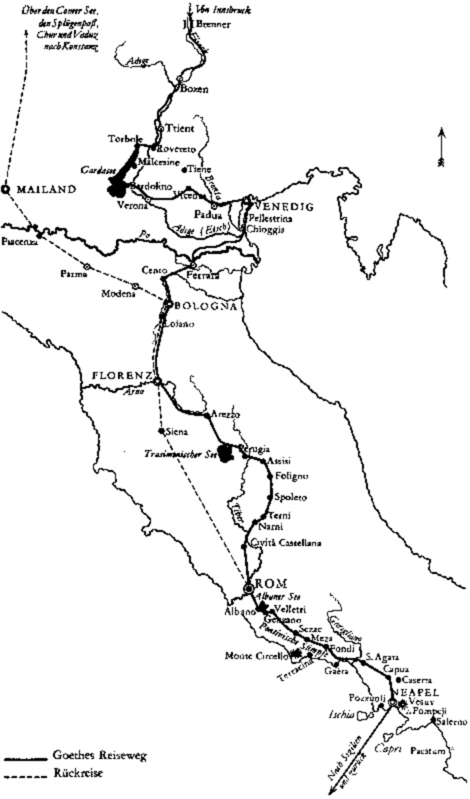
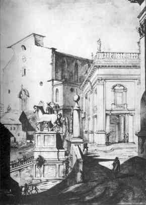
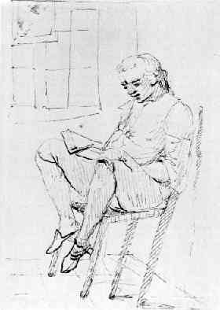
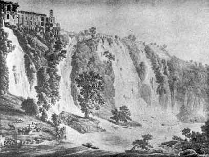
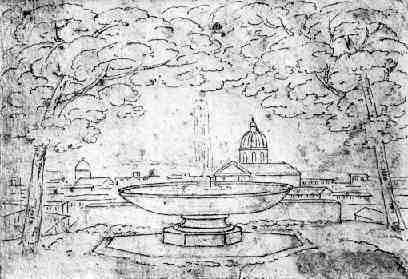
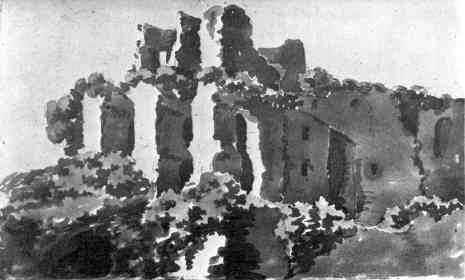
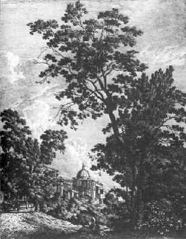
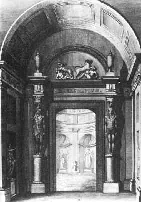
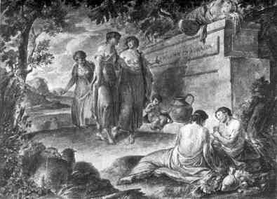

Rom, den 1. Februar.
Wie froh will ich sein, wenn die Narren künftigen Dienstag abend zur Ruhe gebracht werden. Es ist eine entsetzliche Sekkatur, andere toll zu sehen, wenn man nicht selbst angesteckt ist.
Soviel als möglich war, habe ich meine Studien fortgesetzt, auch ist »Claudine« gerückt, und wenn nicht alle Genii ihre Hülfe versagen, so geht heute über acht Tage der dritte Akt an Herdern ab, und so wäre ich den fünften Band los. Dann geht eine neue Not an, worin mir niemand raten noch helfen kann. »Tasso« muß umgearbeitet werden, was da steht, ist zu nichts zu brauchen, ich kann weder so endigen noch alles wegwerfen. Solche Mühe hat Gott den Menschen gegeben!
Der sechste Band enthält wahrscheinlich »Tasso«, »Lila«, »Jery und Bätely«, alles um- und ausgearbeitet, daß man es nicht mehr kennen soll.
Zugleich habe ich meine kleinen Gedichte durchgesehen und an den achten Band gedacht, den ich vielleicht vor dem siebenten herausgebe. Es ist ein wunderlich Ding, so ein Summa Summarum seines Lebens zu ziehen. Wie wenig Spur bleibt doch von einer Existenz zurück!
Hier sekkieren sie mich mit den Übersetzungen meines »Werthers« und zeigen mir sie und fragen, welches die beste sei und ob auch alles wahr sei! Das ist nun ein Unheil, was mich bis nach Indien verfolgen würde.
Rom, den 6. Februar.
Hier ist der dritte Akt" Claudinens"; ich wünsche, daß er dir nur die Hälfte so wohl gefallen möge, als ich vergnügt bin, ihn geendigt zu haben. Da ich nun die Bedürfnisse des lyrischen Theaters genauer kenne, habe ich gesucht, durch manche Aufopferungen dem Komponisten und Akteur entgegenzuarbeiten. Das Zeug, worauf gestickt werden soll, muß weite Fäden haben, und zu einer komischen Oper muß es absolut wie Marli gewoben sein. Doch hab' ich bei dieser wie bei »Erwin« auch fürs Lesen gesorgt. Genug, ich habe getan, was ich konnte.
Ich bin recht still und rein und, wie ich euch schon versichert habe, jedem Ruf bereit und ergeben. Zur bildenden Kunst bin ich zu alt, ob ich also ein bißchen mehr oder weniger pfusche, ist eins. Mein Durst ist gestillt, auf dem rechten Wege bin ich der Betrachtung und des Studiums, mein Genuß ist friedlich und genügsam. Zu dem allen gebt mir euern Segen. Ich habe nichts Näheres nun, als meine drei letzten Teile zu endigen. Dann soll's an »Wilhelm« u. s. w.
Rom, den 9. Februar.
Die Narren haben noch Montag und Dienstag was Rechts gelärmt. Besonders Dienstag abends, wo die Raserei mit den Moccoli in völligem Flor war. Mittwochs dankte man Gott und der Kirche für die Fasten. Auf kein Festin (so nennen sie die Redouten) bin ich gekommen, ich bin fleißig, was nur mein Kopf halten will. Da der fünfte Band absolviert ist, will ich nur einige Kunststudien durcharbeiten, dann gleich an den sechsten gehn. Ich habe diese Tage das Buch Leonards da Vinci über die Malerei gelesen und begreife jetzt, warum ich nie etwas darin habe begreifen können.
O wie finde ich die Zuschauer so glücklich! die dünken sich so klug, sie finden sich was Rechts. So auch die Liebhaber, die Kenner. Du glaubst nicht, was das ein behägliches Volk, indes der gute Künstler immer kleinlaut bleibt. Ich habe aber auch neuerdings einen Ekel, jemanden urteilen zu hören, der nicht selbst arbeitet, daß ich es nicht ausdrücken kann. Wie der Tabaksdampf macht mich eine solche Rede auf der Stelle unbehaglich.
Angelika hat sich das Vergnügen gemacht und zwei Gemälde gekauft. Eins von Tizian, das andere von Paris Bourdon. Beide um einen hohen Preis. Da sie so reich ist, daß sie ihre Renten nicht verzehrt und jährlich mehr dazu verdient, so ist es lobenswürdig, daß sie etwas anschafft, das ihr Freude macht, und solche Sachen, die ihren Kunsteifer erhöhen. Gleich sobald sie die Bilder im Hause hatte, fing sie an, in einer neuen Manier zu malen, um zu versuchen, wie man gewisse Vorteile jener Meister sich eigen machen könne. Sie ist unermüdet, nicht allein zu arbeiten, sondern auch zu studieren. Mit ihr ist's eine große Freude, Kunstsachen zu sehen.
Kayser geht auch als ein wackrer Künstler zu Werke. Seine Musik zu »Egmont« avanciert stark. Noch habe ich nicht alles gehört. Mir scheint jedes dem Endzweck sehr angemessen.
Er wird auch: »Cupido kleiner loser« etc. komponieren. Ich schicke dir's gleich, damit es oft zu meinem Andenken gesungen werde. Es ist auch mein Leibliedchen.
Der Kopf ist mir wüste vom vielen Schreiben, Treiben und Denken. Ich werde nicht klüger, fordere zuviel von mir und lege mir zuviel auf.
Rom, den 16. Februar.
Mit dem preußischen Kurier erhielt ich vor einiger Zeit einen Brief von unserm Herzog, der so freundlich, lieb, gut und erfreulich war, als ich nicht leicht einen erhalten. Da er ohne Rückhalt schreiben konnte, so beschrieb er mir die ganze politische Lage, die seinige und so weiter. Über mich selbst erklärte er sich auf das liebreichste.
Rom, den 22. Februar.
Wir haben diese Woche einen Fall gehabt, der das ganze Chor der Künstler in Betrübnis setzt. Ein Franzose namens Drouais, ein junger Mensch von etwa 25 Jahren, einziger Sohn einer zärtlichen Mutter, reich und schön gebildet, der unter allen studierenden Künstlern für den hoffnungsvollsten gehalten ward, ist an den Blattern gestorben. Es ist eine allgemeine Trauer und Bestürzung. Ich habe in seinem verlassenen Studio die lebensgroße Figur eines Philoktets gesehen, welcher mit einem Flügel eines erlegten Raubvogels den Schmerz seiner Wunde wehend kühlt. Ein schön gedachtes Bild, das in der Ausführung viel Verdienste hat, aber nicht fertig geworden.
Ich bin fleißig und vergnügt und erwarte so die Zukunft. Täglich wird mir's deutlicher, daß ich eigentlich zur Dichtkunst geboren bin, und daß ich die nächsten zehen Jahre, die ich höchstens noch arbeiten darf, dieses Talent exkolieren und noch etwas Gutes machen sollte, da mir das Feuer der Jugend manches ohne großes Studium gelingen ließ. Von meinem längern Aufenthalt in Rom werde ich den Vorteil haben, daß ich auf das Ausüben der bildenden Kunst Verzicht tue.
Angelika macht mir das Kompliment, daß sie wenige in Rom kenne, die besser in der Kunst sähen als ich. Ich weiß recht gut, wo und was ich noch nicht sehe, und fühle wohl, daß ich immer zunehme, und was zu tun wäre, um immer weiter zu sehn. Genug, ich habe schon jetzt meinen Wunsch erreicht: in einer Sache, zu der ich mich leidenschaftlich getragen fühle, nicht mehr blind zu tappen.
Ein Gedicht, »Amor als Landschaftsmaler«, schick' ich dir ehstens und wünsche ihm gut Glück. Meine kleinen Gedichte hab' ich gesucht in eine gewisse Ordnung zu bringen, sie nehmen sich wunderlich aus. Die Gedichte auf Hans Sachs und auf Miedings Tod schließen den achten Band und so meine Schriften für diesmal. Wenn sie mich indessen bei der Pyramide zur Ruhe bringen, so können diese beiden Gedichte statt Personalien und Parentation gelten.
Morgen frühe ist päpstliche Kapelle, und die famosen alten Musiken fangen an, die nachher in der Karwoche auf den höchsten Grad des Interesse steigen. Ich will nun jeden Sonntag frühe hin, um mit dem Stil bekannt zu werden. Kayser, der diese Sachen eigentlich studiert, wird mir den Sinn wohl darüber aufschließen. Wir erwarten mit jeder Post ein gedrucktes Exemplar der Gründonnerstagsmusik von Zürich, wo sie Kayser zurückließ. Sie wird alsdann erst am Klavier gespielt und dann in der Kapelle gehört.
Wenn man einmal zum Künstler geboren ist und gar mancher Gegenstand der Kunstanschauung zusagt, so kam diese mir auch mitten unter dem Gewühl der Fastnachtstorheiten und Absurditäten zu Gunsten. Es war das zweite Mal, daß ich das Karneval sah, und es mußte mir bald auffallen, daß dieses Volksfest wie ein anderes wiederkehrendes Leben und Weben seinen entschiedenen Verlauf hatte.
Dadurch ward ich nun mit dem Getümmel versöhnt, ich sah es an als ein anderes bedeutendes Naturerzeugnis und Nationalereignis; ich interessierte mich dafür in diesem Sinne, bemerkte genau den Gang der Torheiten und wie das alles doch in einer gewissen Form und Schicklichkeit ablief. Hierauf notierte ich mir die einzelnen Vorkommnisse der Reihe nach, welche Vorarbeit ich später zu dem soeben eingeschalteten Aufsatz benutzte, bat auch zugleich unsern Hausgenossen, Georg Schütz, die einzelnen Masken flüchtig zu zeichnen und zu kolorieren, welches er mit seiner gewohnten Gefälligkeit durchführte.
Diese Zeichnungen wurden nachher durch Melchior Krause von Frankfurt am Main, Direktor des freien Zeicheninstituts zu Weimar, in Quarto radiert und nach den Originalen illuminiert zur ersten Ausgabe bei Unger, welche sich selten macht.
Zu vorgemeldeten Zwecken mußte man sich denn mehr, als sonst geschehen wären unter die verkappte Menge hinunter drängen, welche denn trotz aller künstlerischen Ansicht oft einen widerwärtigen unheimlichen Eindruck machte. Der Geist, an die würdigen Gegenstände gewöhnt, mit denen man das ganze Jahr in Rom sich beschäftigte, schien immer einmal gewahr zu werden, daß er nicht recht an seinem Platze sei.
Aber für den innern bessern Sinn sollte doch das Erquicklichste bereitet sein. Auf dem venezianischen Platz, wo manche Kutschen, eh' sie sich den bewegten Reihen wieder anschließen, die Vorbeiwallenden sich zu beschauen pflegen, sah ich den Wagen der Mad. Angelika und trat an den Schlag, sie zu begrüßen. Sie hatte sich kaum freundlich zu mir herausgeneigt, als sie sich zurückbog, um die neben ihr sitzende, wieder genesene Mailänderin mir sehen zulassen. Ich fand sie nicht verändert; denn wie sollte sich eine gesunde Jugend nicht schnell wiederherstellen; ja, ihre Augen schienen frischer und glänzender mich anzusehen, mit einer Freudigkeit, die mich bis ins Innerste durchdrang. So blieben wir eine Zeitlang ohne Sprache, als Mad. Angelika das Wort nahm und, indessen jene sich vorbog, zu mir sagte: »Ich muß nur den Dolmetscher machen, denn ich sehe, meine junge Freundin kommt nicht dazu, auszusprechen, was sie so lange gewünscht, sich vorgesetzt und mir öfters wiederholt hat, wie sehr sie Ihnen verpflichtet ist für den Anteil, den Sie an ihrer Krankheit, ihrem Schicksal genommen. Das erste, was ihr beim Wiedereintritt in das Leben tröstlich geworden, heilsam und wiederherstellend auf sie gewirkt, sei die Teilnahme ihrer Freunde und besonders die Ihrige gewesen, sie habe sich auf einmal wieder aus der tiefsten Einsamkeit unter so vielen guten Menschen in dem schönsten Kreise gefunden.«
»Das ist alles wahr«, sagte jene, indem sie über die Freundin her mir die Hand reichte, die ich wohl mit der meinigen, aber nicht mit meinen Lippen berühren konnte.
Mit stiller Zufriedenheit entfernt' ich mich wieder in das Gedräng der Toren, mit dem zartesten Gefühl von Dankbarkeit gegen Angelika, die sich des guten Mädchens gleich nach dem Unfalle tröstend anzunehmen gewußt und, was in Rom selten ist, ein bisher fremdes Frauenzimmer in ihren edlen Kreis aufgenommen hatte, welches mich um so mehr rührte, als ich mir schmeicheln durfte, mein Anteil an dem guten Kinde habe hierauf nicht wenig eingewirkt.
Der Senator von Rom, Graf Rezzonico, war schon früher, aus Deutschland zurückkehrend, mich zu besuchen gekommen. Er hatte eine innige Freundschaft mit Herrn und Frau von Diede errichtet und brachte mir angelegentliche Grüße von diesen werten Gönnern und Freunden; aber ich lehnte, wie herkömmlich, ein näheres Verhältnis ab, sollte aber doch endlich unausweichlich in diesen Kreis gezogen werden.
Jene genannten Freunde, Herr und Frau von Diede, machten ihrem werten Lebensgenossen einen Gegenbesuch, und ich konnte mich um so weniger entbrechen, mancherlei Art von Einladungen anzunehmen, als die Dame, wegen des Flügelspiels berühmt, in einem Konzerte auf der kapitolinischen Wohnung des Senators sich hören zu lassen willig war und man unsern Genossen Kayser, dessen Geschicklichkeit ruchbar geworden, zu einer Teilnahme an jenen Exhibitionen schmeichelhaft eingeladen hatte. Die unvergleichliche Aussicht bei Sonnenuntergang aus den Zimmern des Senators nach dem Coliseo zu mit allem dem, was sich von den andern Seiten anschließt, verlieh freilich unserm Künstlerblick das herrlichste Schauspiel, dem man sich aber nicht hingeben durfte, um es gegen die Gesellschaft an Achtung und Artigkeit nicht fehlen zu lassen. Frau von Diede spielte sodann, sehr große Vorzüge entwickelnd, ein bedeutendes Konzert, und man bot bald darauf unserm Freunde den Platz an, dessen er sich denn auch ganz würdig zu machen schien, wenn man dem Lobe trauen darf, das er einerntete. Abwechselnd ging es eine Weile fort, auch wurde von einer Dame eine Lieblingsarie vorgetragen, endlich aber, als die Reihe wieder an Kaysern kam, legte er ein anmutiges Thema zum Grunde und variierte solches auf die mannigfaltigste Weise.
Alles war gut vonstatten gegangen, als der Senator mir im Gespräch manches Freundliche sagte, doch aber nicht bergen konnte und mit jener weichen venezianischen Art halb bedauernd versicherte, er sei eigentlich von solchen Variationen kein Freund, werde hingegen von den ausdrucksvollen Adagios seiner Dame jederzeit ganz entzückt.
Nun will ich gerade nicht behaupten, daß mir jene sehnsüchtigen Töne, die man im Adagio und Largo hinzuziehen pflegt, jemals seien zuwider gewesen, doch aber liebt' ich in der Musik immer mehr das Aufregende, da unsere eigenen Gefühle, unser Nachdenken über Verlust und Mißlingen uns nur allzuoft herabzuziehen und zu überwältigen drohen.
Unserm Senator dagegen konnt' ich keineswegs verargen, ja ich mußte ihm aufs freundlichste gönnen, daß er solchen Tönen gern sein Ohr lieh, die ihn vergewisserten, er bewirte in dem herrlichsten Aufenthalte der Welt eine so sehr geliebte und hochverehrte Freundin.
Für uns andere, besonders deutsche Zuhörer blieb es ein unschätzbarer Genuß, in dem Augenblicke, wo wir eine treffliche, längst gekannte verehrte Dame, in den zartesten Tönen sich auf dem Flügel ergehend, vernehmen, zugleich hinab vom Fenster in die einzigste Gegend von der Welt zu schauen und in dem Abendglanz der Sonne mit weniger Wendung des Hauptes das große Bild zu überblicken, das sich linker Hand vom Bogen des Septimius Severus das Campo Vaccino entlang bis zum Minerven- und Friedenstempel erstreckte, um dahinter das Koliseum hervorschauen zu lassen, in dessen Gefolge man dann das Auge rechts wendend, an den Bogen des Titus vorbeigleitend in dem Labyrinthe der palatinischen Trümmer und ihrer durch Gartenkultur und wilde Vegetation geschmückten Einöde sich zu verwirren und zu verweilen hatte.
(Eine im Jahre 1824 von Fries und Thürmer gezeichnete und gestochene nordwestliche Übersicht von Rom, genommen von dem Turme des Kapitols, bitten wir hiernächst zu überschauen; sie ist einige Stockwerke höher und nach den neueren Ausgrabungen gefaßt, aber im Abendlichte und Beschattung, wie wir sie damals gesehen, wobei denn freilich die glühende Farbe mit ihren schattig-blauen Gegensätzen und allem dem Zauber, der daraus entspringt, hinzuzudenken wäre.)
Sodann hatten wir in diesen Stunden als Glück zu schätzen, das herrlichste Bild, welches Mengs vielleicht je gemalt hat, das Porträt Clemens' XIII. Rezzonico, der unsern Gönner, den Senator, als Nepoten an diesen Posten gesetzt, mit Ruhe zu beschauen, von dessen Wert ich zum Schluß eine Stelle aus dem Tagebuch unseres Freundes anführe:
»Unter den von Mengs gemalten Bildnissen, da, wo seine Kunst sich am tüchtigsten bewährte, ist das Bildnis des Papstes Rezzonico. Der Künstler hat in diesem Werk die Venezianer im Kolorit und in der Behandlung nachgeahmt und sich eines glücklichen Erfolgs zu erfreuen; der Ton des Kolorits ist wahr und warm und der Ausdruck des Gesichtes belebt und geistreich; der Vorhang von Goldstoff, auf dem sich der Kopf und das Übrige der Figur schön abheben, gilt für ein gewagtes Kunststück in der Malerei, gelang aber vortrefflich, indem das Bild dadurch ein reiches harmonisches, unser Auge angenehm rührendes Ansehn erhält.«
Rom, den 1. März.
Sonntags gingen wir in die Sixtinische Kapelle, wo der Papst mit den Kardinälen der Messe beiwohnte. Da die letzteren wegen der Fastenzeit nicht rot, sondern violett gekleidet waren, gab es ein neues Schauspiel. Einige Tage vorher hatte ich Gemälde von Albert Dürer gesehen und freute mich nun, so etwas im Leben anzutreffen. Das Ganze zusammen war einzig groß und doch simpel, und ich wundere mich nicht, wenn Fremde, die eben in der Karwoche, wo alles zusammentrifft, hereinkommen, sich kaum fassen können. Die Kapelle selbst kenne ich recht gut, ich habe vorigen Sommer drin zu Mittag gegessen und auf des Papstes Thron Mittagsruhe gehalten und kann die Gemälde fast auswendig, und doch, wenn alles beisammen ist, was zur Funktion gehört, so ist es wieder was anders, und man findet sich kaum wieder.
Es ward ein altes Motett, von einem Spanier Morales komponiert, gesungen, und wir hatten den Vorschmack von dem, was nun kommen wird. Kayser ist auch der Meinung, daß man diese Musik nur hier hören kann und sollte, teils weil nirgends Sänger ohne Orgel und Instrument auf einen solchen Gesang geübt sein könnten, teils weil er zum antiken Inventario der päpstlichen Kapelle und zu dem Ensemble der Michelangelos, des jüngsten Gerichts, der Propheten und biblischen Geschichte einzig passe. Kayser wird dereinst über alles dieses bestimmte Rechnung ablegen. Er ist ein großer Verehrer der alten Musik und studiert sehr fleißig alles, was dazu gehört.
So haben wir eine merkwürdige Sammlung Psalmen im Hause; sie sind in italienische Verse gebracht und von einem venezianischen Nobile, Benedetto Marcello, zu Anfang dieses Jahrhunderts in Musik gesetzt. Er hat bei vielen die Intonation der Juden, teils der spanischen, teils der deutschen, als Motiv angenommen, zu andern hat er alte griechische Melodien zugrunde gelegt und sie mit großem Verstand, Kunstkenntnis und Mäßigkeit ausgeführt. Sie sind teils als Solo, Duett, Chor gesetzt und unglaublich original, ob man gleich sich erst einen Sinn dazu machen muß. Kayser schätzt sie sehr und wird einige daraus abschreiben. Vielleicht kann man einmal das ganze Werk haben, das Venedig 1724 gedruckt ist und die ersten fünfzig Psalmen enthält. Herder soll doch aufstellen, er sieht vielleicht in einem Katalogus dies interessante Werk.
Ich habe den Mut gehabt, meine drei letzten Bände auf einmal zu überdenken, und ich weiß nun genau, was ich machen will; gebe nun der Himmel Stimmung und Glück, es zu machen.
Es war eine reichhaltige Woche, die mir in der Erinnerung wie ein Monat vorkommt.
Zuerst ward der Plan zu »Faust« gemacht, und ich hoffe, diese Operation soll mir geglückt sein. Natürlich ist es ein ander Ding, das Stück jetzt oder vor funfzehn Jahren ausschreiben, ich denke, es soll nichts dabei verlieren, besonders da ich jetzt glaube, den Faden wieder gefunden zu haben. Auch was den Ton des Ganzen betrifft, bin ich getröstet; ich habe schon eine neue Szene ausgeführt, und wenn ich das Papier räuchre, so, dächt' ich, sollte sie mir niemand aus den alten herausfinden. Da ich durch die lange Ruhe und Abgeschiedenheit ganz auf das Niveau meiner eignen Existenz zurückgebracht bin, so ist es merkwürdig, wie sehr ich mir gleiche und wie wenig mein Innres durch Jahre und Begebenheiten gelitten hat. Das alte Manuskript macht mir manchmal zu denken, wenn ich es vor mir sehe. Es ist noch das erste, ja in den Hauptszenen gleich so ohne Konzept hingeschrieben, nun ist es so gelb von der Zeit, so vergriffen (die Lagen waren nie geheftet), so mürbe und an den Rändern zerstoßen, daß es wirklich wie das Fragment eines alten Kodex aussieht, so daß ich, wie ich damals in eine frühere Welt mich mit Sinnen und Ahnden versetzte, ich mich jetzt in eine selbst gelebte Vorzeit wieder versetzen muß.
Auch ist der Plan von »Tasso« in Ordnung und die vermischten Gedichte zum letzten Bande meist ins Reine geschrieben. »Des Künstlers Erdewallen« soll neu ausgeführt und dessen »Apotheose« hinzugetan werden. Zu diesen Jugendeinfällen habe ich nun erst die Studien gemacht, und alles Detail ist mir nun recht lebendig. Ich freue mich auch darauf und habe die beste Hoffnung zu den drei letzten Bänden, ich sehe sie im ganzen schon vor mir stehen und wünsche mir nur Muße und Gemütsruhe, um nun Schritt vor Schritt das Gedachte auszuführen.
Zur Stellung der verschiedenen kleinen Gedichte habe ich mir deine Sammlungen der »Zerstreuten Blätter« zum Muster dienen lassen und hoffe zur Verbindung so disparater Dinge gute Mittel gefunden zu haben, wie auch eine Art, die allzu individuellen und momentanen Stücke einigermaßen genießbar zu machen.
Nach diesen Betrachtungen ist die neue Ausgabe von Mengsens Schriften ins Haus gekommen, ein Buch, das mir jetzt unendlich interessant ist, weil ich die sinnlichen Begriffe besitze, die notwendig vorausgehen müssen, um nur eine Zeile des Werks recht zu verstehen. Es ist in allem Sinne ein trefflich Buch, man liest keine Seite ohne entschiedenen Nutzen. Auch seinen »Fragmenten über die Schönheit«, welche manchem so dunkel scheinen, habe ich glückliche Erleuchtungen zu danken.
Ferner habe ich allerlei Spekulationen über Farben gemacht, welche mir sehr anliegen, weil das der Teil ist, von dem ich bisher am wenigsten begriff. Ich sehe, daß ich mit einiger Übung und anhaltendem Nachdenken auch diesen schönen Genuß der Weltoberfläche mir werde zueignen können.
Ich war einen Morgen in der Galerie Borghese, welche ich in einem Jahr nicht gesehen hatte, und fand zu meiner Freude, daß ich sie mit viel verständigern Augen sah. Es sind unsägliche Kunstschätze in dem Besitz des Fürsten.
Rom, den 7. März.
Eine gute, reiche und stille Woche ist wieder vorbei. Sonntags versäumten wir die päpstliche Kapelle, dagegen sah' ich mit Angelika ein sehr schönes Gemälde, das billig für Correggio gehalten wird.
Ich sah die Sammlung der Akademie St. Luca, wo Raffaels Schädel ist. Diese Reliquie scheint mir ungezweifelt. Ein trefflicher Knochenbau, in welchem eine schöne Seele bequem spazieren konnte. Der Herzog verlangt einen Abguß davon, den ich wahrscheinlich werde verschaffen können. Das Bild, das von ihm gemalt ist und in gleichem Saale hängt, ist seiner wert.

Aufgang zum Kapitol. Zeichnung von Verschaffelt
Auch habe ich das Kapitol wieder gesehen und einige andere Sachen, die mir zurückblieben, vorzüglich Cavaceppis Haus, das ich immer versäumt hatte zu sehen. Unter vielen köstlichen Sachen haben mich vorzüglich ergötzt zwei Abgüsse der Köpfe von den Kolossalstatuen auf dem Monte Cavallo. Man kann sie bei Cavaceppi in der Nähe in ihrer ganzen Größe und Schönheit sehn. Leider daß der beste durch Zeit und Witterung fast einen Strohhalm dick der glatten Oberfläche des Gesichts verloren hat und in der Nähe wie von Pocken übel zugerichtet aussieht.
Heute waren die Exequien des Kardinal Visconti in der Kirche St. Carlo. Da die päpstliche Kapelle zum Hochamt sang, gingen wir hin, die Ohren auf morgen recht auszuwaschen. Es ward ein Requiem gesungen zu zwei Sopranen, das Seltsamste, was man hören kann. NB. Auch dabei war weder Orgel noch andere Musik.
Welch ein leidig Instrument die Orgel sei, ist mir gestern abend in dem Chor von St. Peter recht aufgefallen, man begleitete damit den Gesang bei der Vesper; es verbindet sich so gar nicht mit der Menschenstimme und ist so gewaltig. Wie reizend dagegen in der Sixtinischen Kapelle, wo die Stimmen allein sind.
Das Wetter ist seit einigen Tagen trübe und gelind. Der Mandelbaum hat größtenteils verblüht und grünt jetzt, nur wenige Blüten sind auf den Gipfeln noch zu sehen. Nun folgt der Pfirsichbaum, der mit seiner schönen Farbe die Gärten ziert. Viburnum Tinus blüht auf allen Ruinen, die Attichbüsche in den Hecken sind alle ausgeschlagen und andere, die ich nicht kenne. Die Mauern und Dächer werden nun grüner, auf einigen zeigen sich Blumen. In meinem neuen Kabinett, wohin ich zog, weil wir Tischbein von Neapel erwarten, habe ich eine mannigfaltige Aussicht in unzählige Gärtchen und auf die hinteren Galerien vieler Häuser. Es ist gar zu lustig.
Ich habe angefangen, ein wenig zu modellieren. Was den Erkenntnispunkt betrifft, gehe ich sehr rein und sicher fort, in Anwendung der tätigen Kraft bin ich ein wenig konfus. So geht es mir wie allen meinen Brüdern.
Rom, den 14. März.
Die nächste Woche ist hier nichts zu denken noch zu tun, man muß dem Schwall der Feierlichkeiten folgen. Nach Ostern werde ich noch einiges sehen, was mir zurückblieb, meinen Faden ablösen, meine Rechnung machen, meinen Bündel packen und mit Kaysern davonziehn. Wenn alles geht, wie ich wünsche und vorhabe, bin ich Ende Aprils in Florenz. Inzwischen hört ihr noch von mir.
Sonderbar war es, daß ich auf äußere Veranlassung verschiedene Maßregeln nehmen mußte, welche mich in neue Verhältnisse setzten, wodurch mein Aufenthalt in Rom immer schöner, nützlicher und glücklicher ward. Ja, ich kann sagen, daß ich die höchste Zufriedenheit meines Lebens in diesen letzten acht Wochen genossen habe und nun wenigstens einen äußersten Punkt kenne, nach welchem ich das Thermometer meiner Existenz künftig abmessen kann.
Diese Woche hat sich ungeachtet des üblen Wetters gut gehalten. Sonntags hörten wir in der Sixtinischen Kapelle ein Motett von Palestrina. Dienstag wollte uns das Glück, daß man zu Ehren einer Fremden verschiedene Teile der Karwochsmusik in einem Saale sang. Wir hörten sie also mit größter Bequemlichkeit und konnten uns, da wir sie so oft am Klavier durchsangen, einen vorläufigen Begriff davon machen. Es ist ein unglaublich großes simples Kunstwerk, dessen immer erneuerte Darstellung sich wohl nirgends als an diesem Orte und unter diesen Umständen erhalten konnte. Bei näherer Betrachtung fallen freilich mancherlei Handwerksburschentraditionen, welche die Sache wunderbar und unerhört machen, weg, mit allem dem bleibt es etwas Außerordentliches und ist ein ganz neuer Begriff. Kayser wird dereinst Rechenschaft davon ablegen können. Er wird die Vergünstigung erhalten, eine Probe in der Kapelle anzuhören, wozu sonst niemand gelassen wird.
Ferner habe ich diese Woche einen Fuß modelliert nach vorgängigem Studio der Knochen und Muskeln und werde von meinem Meister gelobt. Wer den ganzen Körper so durchgearbeitet hätte, wäre um ein gutes Teil klüger; versteht sich in Rom, mit allen Hülfsmitteln und dem mannigfaltigen Rat der Verständigen. Ich habe einen Skelettfuß, eine schöne auf die Natur gegossene Anatomie, ein halb Dutzend der schönsten antiken Füße, einige schlechte, jene zur Nachahmung, diese zur Warnung, und die Natur kann ich auch zu Rate ziehen, in jeder Villa, in die ich trete, finde ich Gelegenheit, nach diesen Teilen zu sehen, Gemälde zeigen mir, was Maler gedacht und gemacht haben. Drei, vier Künstler kommen täglich auf mein Zimmer, deren Rat und Anmerkung ich nutze, unter welchen jedoch, genau besehen, Heinrich Meyers Rat und Nachhülfe mich am meisten fördert. Wenn mit diesem Winde auf diesem Elemente ein Schiff nicht von der Stelle käme, so müßte es keine Segel oder einen wahnsinnigen Steuermann haben. Bei der allgemeinen Übersicht der Kunst, die ich mir gemacht habe, war es mir sehr notwendig, nun mit Aufmerksamkeit und Fleiß an einzelne Teile zu gehn. Es ist angenehm, auch im Unendlichen vorwärts zu kommen.
Ich fahre fort, überall herumzugehen und vernachlässigte Gegenstände zu betrachten. So war ich gestern zum erstenmal in Raffaels Villa, wo er an der Seite seiner Geliebten den Genuß des Lebens aller Kunst und allem Ruhm vorzog. Es ist ein heilig Monument. Der Fürst Doria hat sie akquiriert und scheint sie behandeln zu wollen, wie sie es verdient. Raffael hat seine Geliebte achtundzwanzigmal auf die Wand porträtiert in allerlei Arten von Kleidern und Kostüme; selbst in den historischen Kompositionen gleichen ihr die Weiber. Die Lage des Hauses ist sehr schön. Es wird sich artiger davon erzählen lassen, als sich's schreibt. Man muß das ganze Detail bemerken.
Dann ging ich in die Villa Albani und sah mich nur im allgemeinen darin um. Es war ein herrlicher Tag. Heute nacht hat es sehr geregnet, jetzt scheint die Sonne wieder, und vor meinem Fenster ist ein Paradies. Der Mandelbaum ist ganz grün, die Pfirsichblüten fangen schon an abzufallen, und die Zitronenblüten brechen auf dem Gipfel des Baumes auf.
Mein Abschied von hier betrübt drei Personen innigst. Sie werden nie wieder finden, was sie an mir gehabt haben, ich verlasse sie mit Schmerzen. In Rom hab' ich mich selbst zuerst gefunden, ich bin zuerst übereinstimmend mit mir selbst glücklich und vernünftig geworden, und als einen solchen haben mich diese dreie in verschiedenem Sinne und Grade gekannt, besessen und genossen.
Rom, den 22. März.
Heute geh' ich nicht nach St. Peter und will ein Blättchen schreiben. Nun ist auch die heilige Woche mit ihren Wundern und Beschwerden vorüber, morgen nehmen wir noch eine Benediktion auf uns, und dann wendet sich das Gemüt ganz zu einem andern Leben.
Ich habe durch Gunst und Mühe guter Freunde alles gesehen und gehört, besonders ist die Fußwaschung und die Speisung der Pilger nur durch großes Drängen und Drücken zu erkaufen.
Die Kapellmusik ist undenkbar schön. Besonders das »Miserere« von Allegri und die sogenannten »Improperien«, die Vorwürfe, welche der gekreuzigte Gott seinem Volke macht. Sie werden Karfreitags frühe gesungen. Der Augenblick, wenn der aller seiner Pracht entkleidete Papst vom Thron steigt, um das Kreuz anzubeten, und alles übrige an seiner Stelle bleibt, jedermann still ist, und das Chor anfängt: »Populus meus, quid feci tibi?«, ist eine der schönsten unter allen merkwürdigen Funktionen. Das soll nun alles mündlich ausgeführt werden, und was von Musik transportabel ist, bringt Kayser mit. Ich habe nach meinem Wunsch alles, was an den Funktionen genießbar war, genossen und über das übrige meine stillen Betrachtungen angestellt. Effekt, wie man zu sagen pflegt, hat nichts auf mich gemacht, nichts hat mir eigentlich imponiert, aber bewundert hab' ich alles, denn das muß man ihnen nachsagen, daß sie die christlichen Überlieferungen vollkommen durchgearbeitet haben. Bei den päpstlichen Funktionen, besonders in der Sixtinischen Kapelle, geschieht alles, was am katholischen Gottesdienste sonst unerfreulich erscheint, mit großem Geschmack und vollkommner Würde. Es kann aber auch nur da geschehen, wo seit Jahrhunderten alle Künste zu Gebote standen.
Das Einzelne davon würde jetzt nicht zu erzählen sein. Hätte ich nicht in der Zwischenzeit auf jene Veranlassung wieder stille gehalten und an ein längeres Bleiben geglaubt, so könnt' ich nächste Woche fort. Doch auch das gereicht mir zum besten. Ich habe diese Zeit wieder viel studiert, und die Epoche, auf die ich hoffte, hat sich geschlossen und geründet. Es ist zwar immer eine sonderbare Empfindung, eine Bahn, auf der man mit starken Schritten fortgeht, auf einmal zu verlassen, doch muß man sich darein finden und nicht viel Wesens machen. In jeder großen Trennung liegt ein Keim von Wahnsinn, man muß sich hüten, ihn nachdenklich auszubrüten und zu pflegen.
Schöne Zeichnungen hab' ich von Neapel erhalten, von Kniep, dem Maler, der mich nach Sizilien begleitet hat. Es sind schöne liebliche Früchte meiner Reise und für euch die angenehmsten; denn was man einem vor die Augen bringen kann, gibt man ihm am sichersten. Einige drunter sind, dem Ton der Farbe nach, ganz köstlich geraten, und ihr werdet kaum glauben, daß jene Welt so schön ist.
Soviel kann ich sagen, daß ich in Rom immer glücklicher geworden bin, daß noch mit jedem Tage mein Vergnügen wächst; und wenn es traurig scheinen möchte, daß ich eben scheiden soll, da ich am meisten verdiente, zu bleiben, so ist es doch wieder eine große Beruhigung, daß ich so lang habe bleiben können, um auf den Punkt zu gelangen.
Soeben steht der Herr Christus mit entsetzlichem Lärm auf. Das Kastell feuert ab, alle Glocken läuten, und an allen Ecken und Enden hört man Petarden, Schwärmer und Lauffeuer. Um eilf Uhr morgens.
Es ist uns erinnerlich, wie Philippus Neri den Besuch der sieben Hauptkirchen Roms sich öfters zur Pflicht gemacht und dadurch von der Inbrunst seiner Andacht einen deutlichen Beweis gegeben. Hier nun aber ist zu bemerken, daß eine Wallfahrt zu gedachten Kirchen von jedem Pilger, der zum Jubiläum herankommt, notwendig gefordert wird und wirklich wegen der weitentfernten Lage dieser Stationen, insofern der Weg an einem Tage zurückgelegt werden soll, einer abermaligen anstrengenden Reise wohl gleichzuachten ist.
Jene sieben Kirchen aber sind: St. Peter, Santa Maria Maggiore, San Lorenzo außer den Mauern, San Sebastian, San Johann im Lateran, Santa Croce in Jerusalem, San Paul vor den Mauern.
Einen solchen Umgang nun vollführen auch einheimische fromme Seelen in der Karwoche, besonders am Karfreitag. Da man aber zu dem geistlichen Vorteil, welchen die Seelen durch den damit verknüpften Ablaß erwerben und genießen, noch einen leiblichen Genuß hinzugetan, so wird in solcher Hinsicht Ziel und Zweck noch reizender.
Wer nämlich nach vollbrachter Wallfahrt mit gehörigen Zeugnissen zum Tore von San Paul endlich wieder hereintritt, erhält daselbst ein Billet, um an einem frommen Volksfeste in der Villa Mattei an bestimmten Tagen teilnehmen zu können. Dort erhalten die Eingelassenen eine Kollation von Brot, Wein, etwas Käse oder Eiern; die Genießenden sind dabei im Garten umher gelagert, vornehmlich in dem kleinen daselbst befindlichen Amphitheater. Gegenüber in dem Kasino der Villa findet sich die höhere Gesellschaft zusammen; Kardinäle, Prälaten, Fürsten und Herren, um sich an dem Anblick zu ergötzen und somit auch ihren Teil an der Spende, von der Familie Mattei gestiftet, hinzunehmen.
Wir sahen eine Prozession von etwa zehn- bis zwölfjährigen Knaben herankommen, nicht im geistlichen Gewand, sondern wie es etwa Handwerkslehrlingen am Festtage zu erscheinen geziemen möchte, in Kleidern gleicher Farbe, gleichen Schnitts, paarweise, es konnten ihrer vierzig sein. Sie sangen und sprachen ihre Litaneien fromm vor sich hin und wandelten still und züchtig.
Ein alter Mann von kräftigem handwerksmäßigen Ansehn ging an ihnen her und schien das Ganze zu ordnen und zu leiten. Auffallend war es, die vorüberziehende wohlgekleidete Reihe durch ein halb Dutzend bettelhafte, barfuß und zerlumpt einhergehende Kinder geschlossen zu sehen welche jedoch in gleicher Zucht und Sitte dahinwandelten. Erkundigung deshalb gab uns zu vernehmen: Dieser Mann, ein Schuster von Profession und kinderlos, habe sich früher bewogen gefühlt, einen armen Knaben auf- und in die Lehre zu nehmen, mit Beistand von Wohlwollenden ihn zu kleiden und weiterzubringen. Durch ein solches gegebenes Beispiel sei es ihm gelungen, andere Meister zu gleicher Aufnahme von Kindern zu bewegen, die er ebenfalls zu befördern alsdann besorgt gewesen. Auf diese Weise habe sich ein kleines Häuflein gesammelt, welches er zu gottesfürchtigen Handlungen, um den schädlichen Müßiggang an Sonn- und Feiertagen zu verhüten, ununterbrochen angehalten, ja sogar den Besuch der weit auseinander liegenden Hauptkirchen an einem Tage von ihnen gefordert. Auf diese Weise nun sei diese fromme Anstalt immer gewachsen; er verrichte seine verdienstlichen Wanderungen nach wie vor, und weil sich zu einer so augenfällig nutzbaren Anstalt immer mehr hinzudrängen, als aufgenommen werden könnten, so bediene er sich des Mittels, um die allgemeine Wohltätigkeit zu erregen, daß er die noch zu versorgenden, zu bekleidenden Kinder seinem Zuge anschließe, da es ihm denn jedesmal gelinge, zur Versorgung eines und des andern hinreichende Spende zu erhalten.
Während wir uns hievon unterrichteten, war einer der älteren und bekleideten Knaben auch in unsere Nähe gekommen, bot uns einen Teller und verlangte mit gutgesetzten Worten für die nackten und sohlenlosen bescheiden eine Gabe. Er empfing sie nicht nur von uns gerührten Fremden reichlich, sondern auch von den anstehenden sonst pfennigkargen Römern und Römerinnen, die einer mäßigen Spende mit viel Worten segnender Anerkennung jenes Verdienstes noch ein frommes Gewicht beizufügen nicht unterließen.
Man wollte wissen, daß der fromme Kindervater jedesmal seine Pupillen an jener Spende teilnehmen lasse, nachdem sie sich durch vorhergegangene Wanderung erbaut, wobei es denn niemals an leidlicher Einnahme zu seinem edlen Zwecke fehlen kann.
Rom, den 10. April.
Noch bin ich in Rom mit dem Leibe, nicht mit der Seele. Sobald der Entschluß fest war, abzugehen, hatte ich auch kein Interesse mehr, und ich wäre lieber schon vierzehn Tage fort. Eigentlich bleibe ich noch um Kaysers willen und um Burys willen. Ersterer muß noch einige Studien absolvieren, die er nur hier in Rom machen kann, noch einige Musikalien sammeln; der andere muß noch die Zeichnung zu einem Gemälde nach meiner Erfindung ins reine bringen, dabei er meines Rats bedarf.
Doch hab' ich den 21. oder 22. April zur Abreise festgesetzt.
Rom den 11. April.
Die Tage vergehn, und ich kann nichts mehr tun. Kaum mag ich noch etwas sehen; mein ehrlicher Meyer steht mir noch bei, und ich genieße noch zuletzt seines unterrichtenden Umgangs. Hätte ich Kaysern nicht bei mir, so hätte ich jenen mitgebracht. Wenn wir ihn nur ein Jahr gehabt hätten, so wären wir weit genug gekommen. Besonders hätte er bald über alle Skrupel im Köpfezeichnen hinausgeholfen.
Ich war mit meinem guten Meyer diesen Morgen in der französischen Akademie, wo die Abgüsse der besten Statuen des Altertums beisammenstehn. Wie könnt' ich ausdrücken, was ich hier wie zum Abschied empfand? In solcher Gegenwart wird man mehr, als man ist; man fühlt, das Würdigste, womit man sich beschäftigen sollte, sei die menschliche Gestalt, die man hier in aller mannigfaltigen Herrlichkeit gewahr wird. Doch wer fühlt bei einem solchen Anblick nicht alsobald, wie unzulänglich er sei; selbst vorbereitet steht man wie vernichtet. Hatte ich doch Proportion, Anatomie, Regelmäßigkeit der Bewegung mir einigermaßen zu verdeutlichen gesucht, hier aber fiel mir nur zu sehr auf, daß die Form zuletzt alles einschließe, der Glieder Zweckmäßigkeit, Verhältnis, Charakter und Schönheit.
Rom, den 14. April.
Die Verwirrung kann wohl nicht größer werden! Indem ich nicht abließ, an jenem Fuß fortzumodellieren, ging mir auf, daß ich nunmehr »Tasso« unmittelbar angreifen müßte, zu dem sich denn auch meine Gedanken hinwendeten, ein willkommener Gefährte zur bevorstehenden Reise. Dazwischen wird eingepackt, und man sieht in solchem Augenblicke erst, was man alles um sich versammelt und zusammengeschleppt hat.
Meine Korrespondenz der letzten Wochen bietet wenig Bedeutendes; meine Lage war zu verwickelt zwischen Kunst und Freundschaft, zwischen Besitz und Bestreben, zwischen einer gewohnten Gegenwart und einer wieder neu anzugewöhnenden Zukunft. In diesen Zuständen konnten meine Briefe wenig enthalten; die Freude, meine alten geprüften Freunde wiederzusehen, war nur mäßig ausgesprochen, der Schmerz des Loslösens dagegen kaum verheimlicht. Ich fasse daher in gegenwärtigen nachträglichen Bericht manches zusammen und nehme nur das auf, was aus jener Zeit mir teils durch andere Papiere und Denkmale bewahrt, teils in der Erinnerung wieder hervorzurufen ist.
Tischbein verweilte noch immer in Neapel, ob er schon seine Zurückkunft im Frühling wiederholt angekündigt hatte. Es war sonst mit ihm gut leben, nur ein gewisser Tik ward auf die Länge beschwerlich. Er ließ nämlich alles, was er zu tun vorhatte, in einer Art Unbestimmtheit, wodurch er oft ohne eigentlich bösen Willen andere zu Schaden und Unlust brachte. So erging es mir nun auch in diesem Falle; ich mußte, wenn er zurückkehrte, um uns alle bequem logiert zu sehen, das Quartier verändern, und da die obere Etage unsers Hauses eben leer ward, säumte ich nicht, sie zu mieten und sie zu beziehen, damit er bei seiner Ankunft in der untern alles bereit fände.
Die oberen Räume waren den unteren gleich, die hintere Seite jedoch hatte den Vorteil einer allerliebsten Aussicht über den Hausgarten und die Gärten der Nachbarschaft, welche, da unser Haus ein Eckhaus war, sich nach allen Seiten ausdehnte.
Hier sah man nun die verschiedensten Gärten, regelmäßig durch Mauern getrennt, in unendlicher Mannigfaltigkeit gehalten und bepflanzt; dieses grünende und blühende Paradies zu verherrlichen, trat überall die einfach edle Baukunst hervor: Gartensäle, Balkone, Terrassen, auch auf den höhern Hinterhäuschen eine offne Loge, dazwischen alle Baum- und Pflanzenarten der Gegend.
In unserm Hausgarten versorgte ein alter Weltgeistlicher eine Anzahl wohlgehaltener Zitronenbäume von mäßiger Höhe in verzierten Vasen von gebrannter Erde, welche im Sommer der freien Luft genossen, im Winter jedoch im Gartensaale verwahrt standen. Nach vollkommen geprüfter Reife wurden die Früchte sorgfältig abgenommen, jede einzeln in weiches Papier gewickelt, so zusammengepackt und versendet. Sie sind wegen besonderer Vorzüge im Handel beliebt. Eine solche Orangerie wird als ein kleines Kapital in bürgerlichen Familien betrachtet, wovon man alle Jahre die gewissen Interessen zieht.
Dieselbigen Fenster, aus welchen man so viel Anmut beim klarsten Himmel ungestört betrachtete, gaben auch ein vortreffliches Licht zu Beschauung malerischer Kunstwerke. Soeben hatte Kniep verschiedene Aquarellzeichnungen, ausgeführt nach Umrissen, die er auf unsrer Reise durch Sizilien sorgfältig zog, verabredetermaßen eingesendet, die nunmehr bei dem günstigsten Licht allen Teilnehmenden zu Freude und Bewunderung gereichten. Klarheit und luftige Haltung ist vielleicht in dieser Art keinem besser gelungen als ihm, der sich mit Neigung gerade hierauf geworfen hatte. Die Ansicht dieser Blätter bezauberte wirklich, denn man glaubte, die Feuchte des Meers, die blauen Schatten der Felsen, die gelbrötlichen Töne der Gebirge, das Verschweben der Ferne in dem glanzreichsten Himmel wieder zu sehen, wieder zu empfinden. Aber nicht allein diese Blätter erschienen in solchem Grade günstig, jedes Gemälde, auf dieselbe Staffelei, an denselben Ort gestellt, erschien wirksamer und auffallender; ich erinnere mich, daß einigemal, als ich ins Zimmer trat, mir ein solches Bild wie zauberisch entgegenwirkte.
Das Geheimnis einer günstigen oder ungünstigen, direkten oder indirekten atmosphärischen Beleuchtung war damals noch nicht entdeckt, sie selbst aber durchaus gefühlt, angestaunt und als nur zufällig und unerklärbar betrachtet.
Diese neue Wohnung gab nun Gelegenheit, eine Anzahl von Gipsabgüssen, die sich nach und nach um uns gesammelt hatten, in freundlicher Ordnung und gutem Lichte aufzustellen, und man genoß jetzt erst eines höchst würdigen Besitzes. Wenn man, wie in Rom der Fall ist, sich immerfort in Gegenwart plastischer Kunstwerke der Alten befindet, so fühlt man sich wie in Gegenwart der Natur vor einem Unendlichen, Unerforschlichen. Der Eindruck des Erhabenen, des Schönen, so wohltätig er auch sein mag, beunruhigt uns, wir wünschen unsre Gefühle, unsre Anschauung in Worte zu fassen: dazu müßten wir aber erst erkennen, einsehen, begreifen; wir fangen an zu sondern, zu unterscheiden, zu ordnen, und auch dieses finden wir, wo nicht unmöglich, doch höchst schwierig, und so kehren wir endlich zu einer schauenden und genießenden Bewunderung zurück.
Überhaupt aber ist dies die entschiedenste Wirkung aller Kunstwerke, daß sie uns in den Zustand der Zeit und der Individuen versetzen, die sie hervorbrachten. Umgeben von antiken Statuen, empfindet man sich in einem bewegten Naturleben, man wird die Mannigfaltigkeit der Menschengestaltung gewahr und durchaus auf den Menschen in seinem reinsten Zustande zurückgeführt, wodurch denn der Beschauer selbst lebendig und rein menschlich wird. Selbst die Bekleidung, der Natur angemessen, die Gestalt gewissermaßen noch hervorhebend, tut im allgemeinen Sinne wohl. Kann man dergleichen Umgebung in Rom tagtäglich genießen, so wird man zugleich habsüchtig darnach; man verlangt, solche Gebilde neben sich aufzustellen, und gute Gipsabgüsse als die eigentlichsten Faksimiles geben hiezu die beste Gelegenheit. Wenn man des Morgens die Augen aufschlägt, fühlt man sich von dem Vortrefflichsten gerührt; alles unser Denken und Sinnen ist von solchen Gestalten begleitet, und es wird dadurch unmöglich, in Barbarei zurückzufallen.
Den ersten Platz bei uns behauptete Juno Ludovisi, um desto höher geschätzt und verehrt, als man das Original nur selten, nur zufällig zu sehen bekam und man es für ein Glück achten mußte, sie immerwährend vor Augen zu haben; denn keiner unsrer Zeitgenossen, der zum erstenmal vor sie hintritt, darf behaupten, diesem Anblick gewachsen zu sein.
Noch einige kleinere Junonen standen zur Vergleichung neben ihr, vorzüglich Büsten Jupiters und, um anderes zu übergehen, ein guter alter Abguß der Medusa Rondanini; ein wundersames Werk, das, den Zwiespalt zwischen Tod und Leben, zwischen Schmerz und Wollust ausdrückend, einen unnennbaren Reiz wie irgendein anderes Problem über uns ausübt.
Doch erwähn' ich noch eines Herkules Anax, so kräftig und groß, als verständig und mild; sodann eines allerliebsten Merkur, deren beider Originale sich jetzt in England befinden.
Halberhobene Arbeiten, Abgüsse von manchen schönen Werken gebrannter Erde, auch die ägyptischen, von dem Gipfel des großen Obelisk genommen, und was nicht sonst an Fragmenten, worunter einige marmorne waren, standen wohl eingereiht umher.
Ich spreche von diesen Schätzen, welche nur wenige Wochen in die neue Wohnung gereiht standen, wie einer, der sein Testament überdenkt, den ihn umgebenden Besitz mit Fassung, aber doch gerührt ansehen wird. Die Umständlichkeit, die Bemühung und Kosten und eine gewisse Unbehülflichkeit in solchen Dingen hielten mich ab, das Vorzüglichste sogleich nach Deutschland zu bestimmen. Juno Ludovisi war der edlen Angelika zugedacht, weniges andere den nächsten Künstlern, manches gehörte noch zu den Tischbeinischen Besitzungen, anderes sollte unangetastet bleiben und von Bury, der das Quartier nach mir bezog, nach seiner Weise benutzt werden.
Indem ich dieses niederschreibe, werden meine Gedanken in die frühsten Zeiten hingeführt und die Gelegenheiten hervorgerufen, die mich anfänglich mit solchen Gegenständen bekannt machten, meinen Anteil erregten, bei einem völlig ungenügenden Denken einen überschwenglichen Enthusiasmus hervorriefen und die grenzenlose Sehnsucht nach Italien zur Folge hatten.
In meiner frühsten Jugend ward ich nichts Plastisches in meiner Vaterstadt gewahr; in Leipzig machte zuerst der gleichsam tanzend auftretende, die Zimbeln schlagende Faun einen tiefen Eindruck, so daß ich mir den Abguß noch jetzt in seiner Individualität und Umgebung denken kann. Nach einer langen Pause ward ich auf einmal in das volle Meer gestürzt, als ich mich von der Mannheimer Sammlung in dem von oben wohlbeleuchteten Saale plötzlich umgeben sah.
Nachher fanden sich Gipsgießer in Frankfurt ein, sie hatten sich mit manchen Originalabgüssen über die Alpen begeben, welche sie sodann abformten und die Originale für einen leidlichen Preis abließen. So erhielt ich einen ziemlich guten Laokoons-Kopf, Niobes Töchter, ein Köpfchen, später für eine Sappho angesprochen, und noch sonst einiges. Diese edlen Gestalten waren eine Art von heimlichem Gegengift, wenn das Schwache, Falsche, Manierierte über mich zu gewinnen drohte. Eigentlich aber empfand ich immer innerliche Schmerzen eines unbefriedigten, sich aufs Unbekannte beziehenden, oft gedämpften und immer wieder auflebenden Verlangens. Groß war der Schmerz daher, als ich, aus Rom scheidend, von dem Besitz des endlich Erlangten, sehnlichst Gehofften mich lostrennen sollte.
Die Gesetzlichkeit der Pflanzenorganisation, die ich in Sizilien gewahr worden, beschäftigte mich zwischen allem durch, wie es Neigungen zu tun pflegen, die sich unsres Innern bemächtigen und sich zugleich unsern Fähigkeiten angemessen erzeigen. Ich besuchte den botanischen Garten, welcher, wenn man will, in seinem veralteten Zustande geringen Reiz ausübte, auf mich aber doch, dem vieles, was er dort vorfand, neu und unerwartet schien, einen günstigen Einfluß hatte. Ich nahm daher Gelegenheit, manche seltenere Pflanzen um mich zu versammeln und meine Betrachtungen darüber fortzusetzen, sowie die von mir aus Samen und Kernen erzogenen fernerhin pflegend zu beobachten.
In diese letzten besonders wollten bei meiner Abreise mehrere Freunde sich teilen. Ich pflanzte den schon einigermaßen erwachsenen Piniensprößling, Vorbildchen eines künftigen Baumes, bei Angelika in den Hausgarten, wo er durch manche Jahre zu einer ansehnlichen Höhe gedieh, wovon mir teilnehmende Reisende zu wechselseitigem Vergnügen, wie auch von meinem Andenken an jenem Platze, gar manches zu erzählen wußten. Leider fand der nach dem Ableben jener unschätzbaren Freundin eintretende neue Besitzer es unpassend, auf seinen Blumenbeeten ganz unörtlich Pinien hervorwachsen zu sehen. Späterhin fanden wohlwollende, darnach forschende Reisende die Stelle leer und hier wenigstens die Spur eines anmutigen Daseins ausgelöscht.
Glücklicher waren einige Dattelpflanzen, die ich aus Kernen gezogen hatte. Wie ich denn überhaupt die merkwürdige Entwicklung derselben durch Aufopferung mehrerer Exemplare von Zeit zu Zeit beobachtete; die überbliebenen, frisch aufgeschossenen übergab ich einem römischen Freunde, der sie in einen Garten der Sixtinischen Straße pflanzte, wo sie noch am Leben sind, und zwar bis zur Manneshöhe herangewachsen, wie ein erhabener Reisende mir zu versichern die Gnade hatte. Mögen sie den Besitzern nicht unbequem werden und fernerhin zu meinem Andenken grünen, wachsen und gedeihen!
Auf dem Verzeichnisse, was vor der Abreise von Rom allenfalls nachzuholen sein möchte, fanden sich zuletzt sehr disparate Gegenstände, die Cloaca Massima und die Katakomben bei St. Sebastian. Die erste erhöhte wohl noch den kolossalen Begriff, wozu uns Piranesi vorbereitet hatte; der Besuch des zweiten Lokals geriet jedoch nicht zum besten, denn die ersten Schritte in diese dumpfigen Räume erregten mir alsobald ein solches Mißbehagen, daß ich sogleich wieder ans Tageslicht hervorstieg und dort im Freien in einer ohnehin unbekannten, fernen Gegend der Stadt die Rückkunft der übrigen Gesellschaft abwartete, welche, gefaßter als ich, die dortigen Zustände getrost beschauen mochte.
In dem großen Werke »Roma sotterranea, di Antonio Bosio Romano« belehrt' ich mich lange Zeit nachher umständlich von allem dem, was ich dort gesehen oder auch wohl nicht gesehen hätte, und glaubte mich dadurch hinlänglich entschädigt.
Eine andere Wallfahrt wurde dagegen mit mehr Nutzen und Folge unternommen: es war zu der Akademie S. Luca, dem Schädel Raffaels unsre Verehrung zu bezeigen, welcher dort als ein Heiligtum aufbewahrt wird, seitdem er aus dem Grabe dieses außerordentlichen Mannes, das man bei einer baulichen Angelegenheit eröffnet hatte, daselbst entfernt und hierher gebracht worden.
Ein wahrhaft wundersamer Anblick! Eine so schön als nur denkbar zusammengefaßte und abgerundete Schale, ohne eine Spur von jenen Erhöhungen, Beulen und Buckeln, welche, später an andern Schädeln bemerkt, in der Gallischen Lehre zu so mannigfaltiger Bedeutung geworden sind. Ich konnte mich von dem Anblick nicht losreißen und bemerkte beim Weggehen, wie bedeutend es für Natur- und Kunstfreunde sein müßte, einen Abguß davon zu haben, wenn es irgend möglich wäre. Hofrat Reiffenstein, dieser einflußreiche Freund, gab mir Hoffnung und erfüllte sie nach einiger Zeit, indem er mir wirklich einen solchen Abguß nach Deutschland sendete, dessen Anblick mich noch oft zu den mannigfaltigsten Betrachtungen aufruft.
Das liebenswürdige Bild von des Künstlers Hand, St. Lucas, dem die Mutter Gottes erscheint, damit er sie in ihrer vollen göttlichen Hoheit und Anmut wahr und natürlich darstellen möge, gewährte den heitersten Anblick. Raffael selbst, noch jung, steht in einiger Entfernung und sieht dem Evangelisten bei der Arbeit zu. Anmutiger kann man wohl nicht einen Beruf, zu dem man sich entschieden hingezogen fühlt, ausdrücken und bekennen.
Peter von Cortona war ehmals der Besitzer dieses Werks und hat solches der Akademie vermacht. Es ist freilich an manchen Stellen beschädigt und restauriert, aber doch immer ein Gemälde von bedeutendem Wert.
In diesen Tagen jedoch ward ich durch eine ganz eigene Versuchung geprüft, die meine Reise zu verhindern und mich in Rom aufs neue zu fesseln drohte. Es kam nämlich von Neapel Herr Antonio Rega, Künstler und ebenfalls Kunsthändler, zu Freund Meyer, ihm vertraulich ankündigend, er sei mit einem Schiffe hier angekommen, welches draußen an Ripa grande liege, wohin er ihn mitzugehen hiedurch einlade, denn er habe auf demselben eine bedeutende antike Statue, jene Tänzerin oder Muse, welche in Neapel im Hofe des Palasts Caraffa Colombrano nebst andern in einer Nische seit undenklichen Jahren gestanden und durchaus für ein gutes Werk gehalten worden sei. Er wünsche diese zu verkaufen, aber in der Stille, und frage deshalb an, ob nicht etwa Herr Meyer selbst oder einer seiner vertrauten Freunde sich zu diesem Handel entschließen könnte. Er biete das edle Kunstwerk zu einem auf alle Fälle höchst mäßigen Preise von dreihundert Zechinen, welche Forderung sich ohne Frage erhöhen möchte, wenn man nicht in Betracht der Verkäufer und des Käufers mit Vorsicht zu verfahren Ursache hätte.
Mir ward die Sache sogleich mitgeteilt, und wir eilten selbdritte zu dem von unsrer Wohnung ziemlich entfernten Landungsplatz. Rega hub sogleich ein Brett von der Kiste, die auf dem Verdeck stand, und wir sahen ein allerliebstes Köpfchen, das noch nie vom Rumpfe getrennt gewesen, unter freien Haarlocken hervorblickend, und nach und nach aufgedeckt eine lieblich bewegte Gestalt, im anständigsten Gewande, übrigens wenig versehrt und die eine Hand vollkommen gut erhalten.
Sogleich erinnerten wir uns recht gut, sie an Ort und Stelle gesehen zu haben, ohne zu ahnen, daß sie uns je so nah kommen könnte.
Hier nun fiel uns ein, und wem hätte es nicht einfallen sollen: »Gewiß«, sagten wir, »wenn man ein ganzes Jahr mit bedeutenden Kosten gegraben hätte und zuletzt auf einen solchen Schatz gestoßen wäre, man hätte sich höchst glücklich gefunden.« Wir konnten uns kaum von der Betrachtung losreißen, denn ein so reines, wohlerhaltenes Altertum in einem leicht zu restaurierenden Zustande kam uns wohl niemals zu Gesicht. Doch schieden wir zuletzt mit Vorsatz und Zusage, baldigste Antwort vernehmen zu lassen.
Rom, den 8. Juni 1787
Vorgestern bin ich glücklich wieder hier angelangt, und gestern hat der feierliche Fronleichnamstag mich sogleich wieder zum Römer eingeweiht. Gern will ich gestehen, meine Abreise von Neapel machte mir einige Pein; nicht sowohl die herrliche Gegend als eine gewaltige Lava hinter mir lassend, die von dem Gipfel aus ihren Weg nach dem Meere zu nahm, die ich wohl hätte in der Nähe betrachten, deren Art und Weise, von der man so viel gelesen und erzählt hat, ich in meine Erfahrungen hätte mit aufnehmen sollen.

Goethe auf zurückgelehntem Stuhl. Zeichnung von Tischbein
Heute jedoch ist meine Sehnsucht nach dieser großen Naturszene schon wieder ins gleiche gebracht; nicht sowohl das fromme Festgewirre, das bei einem imposanten Ganzen doch hie und da durch abgeschmacktes Einzelne den innern Sinn verletzt, sondern die Anschauung der Teppiche nach Raffaels Kartonen hat mich wieder in den Kreis höherer Betrachtungen zurückgeführt. Die vorzüglichsten, die ihm am gewissesten ihren Ursprung verdanken, sind zusammen ausgebreitet, andere, wahrscheinlich von Schülern, Zeit- und Kunstgenossen erfundene, schließen sich nicht unwürdig an und bedecken die grenzenlosen Räume.
Rom, den 16. Juni.
Laßt mich auch wieder, meine Lieben, ein Wort zu euch reden. Mir geht es sehr wohl, ich finde mich immer mehr in mich zurück und lerne unterscheiden, was mir eigen und was mir fremd ist. Ich bin fleißig und nehme von allen Seiten ein und wachse von innen heraus. Diese Tage war ich in Tivoli und habe eins der ersten Naturschauspiele gesehen. Es gehören die Wasserfälle dort mit den Ruinen und dem ganzen Komplex der Landschaft zu denen Gegenständen, deren Bekanntschaft uns im tiefsten Grunde reicher macht.
Am letzten Posttage habe ich versäumt zu schreiben. In Tivoli war ich sehr müde vom Spazierengehen und vom Zeichnen in der Hitze. Ich war mit Herrn Hackert draußen, der eine unglaubliche Meisterschaft hat, die Natur abzuschreiben und der Zeichnung gleich eine Gestalt zu geben. Ich habe in diesen wenigen Tagen viel von ihm gelernt.

Die Maecenasvilla in Tivoli. Zeichnung von Hackert
Weiter mag ich gar nichts sagen. Das ist wieder ein Gipfel irdischer Dinge. Ein sehr komplizierter Fall in der Gegend bringt die herrlichsten Wirkungen hervor.
Herr Hackert hat mich gelobt und getadelt und mir weiter geholfen. Er tat mir halb im Scherz, halb im Ernst den Vorschlag, achtzehn Monate in Italien zu bleiben und mich nach guten Grundsätzen zu üben; nach dieser Zeit, versprach er mir, sollte ich Freude an meinen Arbeiten haben. Ich sehe auch wohl, was und wie man studieren muß, um über gewisse Schwierigkeiten hinauszukommen, unter deren Last man sonst sein ganzes Leben hinkriecht.
Noch eine Bemerkung. Jetzt fangen erst die Bäume, die Felsen, ja Rom selbst an, mir lieb zu werden; bisher hab' ich sie immer nur als fremd gefühlt; dagegen freuten mich geringe Gegenstände, die mit denen Ähnlichkeit hatten, die ich in der Jugend sah. Nun muß ich auch erst hier zu Hause werden, und doch kann ich's nie so innig sein als mit jenen ersten Gegenständen des Lebens. Ich habe verschiednes bezüglich auf Kunst und Nachahmung bei dieser Gelegenheit gedacht.
Während meiner Abwesenheit hatte Tischbein ein Gemälde von Daniel von Volterra im Kloster an der Porta del Popolo entdeckt; die Geistlichen wollten es für tausend Skudi hergeben, welche Tischbein als Künstler nicht aufzutreiben wußte. Er machte daher an Madame Angelika durch Meyer den Vorschlag, in den sie willigte, gedachte Summe auszahlte, das Bild zu sich nahm und später Tischbein die ihm kontraktmäßige Hälfte um ein Namhaftes abkaufte. Es war ein vortreffliches Bild, die Grablegung vorstellend, mit vielen Figuren. Eine von Meyer darnach sorgfältig hergestellte Zeichnung ist noch vorhanden.
Rom, den 20. Juni.
Nun hab' ich hier schon wieder treffliche Kunstwerke gesehen, und mein Geist reinigt und bestimmt sich. Doch brauchte ich wenigstens noch ein Jahr allein in Rom, um nach meiner Art den Aufenthalt nutzen zu können, und ihr wißt, ich kann nichts auf andre Art. Jetzt, wenn ich scheide, werde ich nur wissen, welcher Sinn mir noch nicht aufgegangen ist, und so sei es denn eine Weile genug.
Der Herkules Farnese ist fort, ich hab' ihn noch auf seinen echten Beinen gesehen, die man ihm nach so langer Zeit wiedergab. Nun begreift man nicht, wie man die ersten, von Porta, hat so lange gut finden können. Es ist nun eins der vollkommensten Werke alter Zeit. In Neapel wird der König ein Museum bauen lassen, wo alles, was er von Kunstsachen besitzt, das Herkulanische Museum, die Gemälde von Pompeji, die Gemälde von Capo di Monte, die ganze farnesische Erbschaft, vereinigt aufgestellt werden sollen. Es ist ein großes und schönes Unternehmen. Unser Landsmann Hackert ist die erste Triebfeder dieses Werks. Sogar der Toro Farnese soll nach Neapel wandern und dort auf der Promenade aufgestellt werden. Könnten sie die Carraccische Galerie aus dem Palaste mitnehmen, sie täten's auch.
Rom, den 27. Juni.
Ich war mit Hackert in der Galerie Colonna, wo Poussins, Claudes, Salvator Rosas Arbeiten zusammen hängen. Er sagte mir viel Gutes und gründlich Gedachtes über diese Bilder, er hat einige davon kopiert und die andern recht aus dem Fundament studiert. Es freute mich, daß ich im allgemeinen bei den ersten Besuchen in der Galerie eben dieselbe Vorstellung gehabt hatte. Alles, was er mir sagte, hat meine Begriffe nicht geändert, sondern nur erweitert und bestimmt. Wenn man nun gleich wieder die Natur ansehn und wieder finden und lesen kann, was jene gefunden und mehr oder weniger nachgeahmt haben, das muß die Seele erweitern, reinigen und ihr zuletzt den höchsten anschauenden Begriff von Natur und Kunst geben. Ich will auch nicht mehr ruhen, bis mir nichts mehr Wort und Tradition, sondern lebendiger Begriff ist. Von Jugend auf war mit dieses mein Trieb und meine Plage, jetzt, da das Alter kommt, will ich wenigstens das Erreichbare erreichen und das Tunliche tun, da ich so lange verdient und unverdient das Schicksal des Sisyphus und Tantalus erduldet habe.
Bleibt in der Liebe und Glauben an mich. Mit den Menschen hab' ich jetzt ein leidlich Leben und eine gute Art Offenheit, ich bin wohl und freue mich meiner Tage.
Tischbein ist sehr brav, doch fürchte ich, er wird nie in einen solchen Zustand kommen, in welchem er mit Freude und Freiheit arbeiten kann. Mündlich mehr von diesem auch wunderbaren Menschen. Mein Porträt wird glücklich, es gleicht sehr, und der Gedanke gefällt jedermann; Angelika malt mich auch, daraus wird aber nichts. Es verdrießt sie sehr, daß es nicht gleichen und werden will. Es ist immer ein hübscher Bursche, aber keine Spur von mir.
Rom, den 30. Juni.
Das große Fest St. Peter und Paul ist endlich auch herangekommen; gestern haben wir die Erleuchtung der Kuppel und das Feuerwerk vom Kastell gesehn. Die Erleuchtung ist ein Anblick wie ein ungeheures Märchen, man traut seinen Augen nicht. Da ich neuerdings nur die Sachen und nicht wie sonst bei und mit den Sachen sehe, was nicht da ist, so müssen mir so große Schauspiele kommen, wenn ich mich freuen soll. Ich habe auf meiner Reise etwa ein halb Dutzend gezählt, und dieses darf allerdings unter den ersten stehn. Die schöne Form der Kolonnade, der Kirche und besonders der Kuppel erst in einem feurigen Umrisse und, wenn die Stunde vorbei ist, in einer glühenden Masse zu sehn, ist einzig und herrlich. Wenn man bedenkt, daß das ungeheure Gebäude in diesem Augenblick nur zum Gerüste dient, so wird man wohl begreifen, daß etwas Ähnliches in der Welt nicht sein kann. Der Himmel war rein und hell, der Mond schien und dämpfte das Feuer der Lampen zum angenehmen Schein, zuletzt aber, wie alles durch die zweite Erleuchtung in Glut gesetzt wurde, ward das Licht des Mondes ausgelöscht. Das Feuerwerk ist wegen des Ortes schön, doch lange nicht verhältnismäßig zur Erleuchtung. Heute abend sehen wir beides noch einmal.
Auch das ist vorüber. Es war ein schöner klarer Himmel und der Mond voll, dadurch ward die Erleuchtung sanfter, und es sah ganz aus wie ein Märchen. Die schöne Form der Kirche und der Kuppel gleichsam in einem feurigen Aufriß zu sehen, ist ein großer und reizender Anblick.
Rom, Ende Juni.
Ich habe mich in eine zu große Schule begeben, als daß ich geschwind wieder aus der Lehre gehen dürfte. Meine Kunstkenntnisse, meine kleinen Talente müssen hier ganz durchgearbeitet, ganz reif werden, sonst bring' ich wieder euch einen halben Freund zurück, und das Sehnen, Bemühen, Krabbeln und Schleichen geht von neuem an. Ich würde nicht fertig werden, wenn ich euch erzählen sollte, wie mir auch wieder alles diesen Monat hier geglückt ist, ja, wie mir alles auf einem Teller ist präsentiert worden, was ich nur gewünscht habe. Ich habe ein schönes Quartier, gute Hausleute. Tischbein geht nach Neapel, und ich beziehe sein Studium, einen großen kühlen Saal. Wenn ihr mein gedenkt, so denkt an mich als an einen Glücklichen; ich will oft schreiben, und so sind und bleiben wir zusammen.
Auch neue Gedanken und Einfälle hab' ich genug, ich finde meine erste Jugend bis auf Kleinigkeiten wieder, indem ich mir selbst überlassen bin, und dann trägt mich die Höhe und Würde der Gegenstände wieder so hoch und weit, als meine letzte Existenz nur reicht. Mein Auge bildet sich unglaublich, und meine Hand soll nicht ganz zurückbleiben. Es ist nur ein Rom in der Welt, und ich befinde mich hier wie der Fisch im Wasser und schwimme oben wie eine Stückkugel im Quecksilber, die in jedem andern Fluidum untergeht. Nichts trübt die Atmosphäre meiner Gedanken, als daß ich mein Glück nicht mit meinen Geliebten teilen kann. Der Himmel ist jetzt herrlich heiter, so daß Rom nur morgens und abends einigen Nebel hat. Auf den Gebirgen aber, Albano, Castello, Frascati, wo ich vergangene Woche drei Tage zubrachte, ist eine immer heitre reine Luft. Da ist eine Natur zu studieren.

Blick vom Pincio in Rom. Zeichnung von Goethe
Die große Aufopferung, zu der ich mich entschloß, eine von dem Gipfel des Bergs bis beinahe ans Meer herabströmende Lava hinter mir zu lassen, ward mir durch den erreichten Zweck reichlich vergolten, durch den Anblick der Teppiche, welche, am Fronleichnamstag aufgehängt, uns an Raffael, seine Schüler, seine Zeit auf das glänzendste erinnerten.
In den Niederlanden hatte das Teppichwirken mit stehendem Zettel, Hautelisse genannt, sich schon auf den höchsten Grad erhoben. Es ist mir nicht bekannt geworden, wie sich nach und nach die Fertigung der Teppiche entwickelt und gesteigert hat. In dem zwölften Jahrhundert mag man noch die einzelnen Figuren durch Stickerei oder auf sonst eine Weise fertig gemacht und sodann durch besonders gearbeitete Zwischenstücke zusammengesetzt haben. Dergleichen finden wir noch über den Chorstühlen alter Domkirchen, und hat die Arbeit etwas Ähnliches mit den bunten Fensterscheiben, welche auch zuerst aus ganz kleinen farbigen Glasstückchen ihre Bilder zusammengesetzt haben. Bei den Teppichen vertrat Nadel und Faden das Lot und die Zinnstäbchen. Alle frühen Anfänge der Kunst und Technik sind von dieser Art; wir haben kostbare chinesische Teppiche, auf gleiche Weise gefertigt, vor Augen gehabt.
Wahrscheinlich durch orientalische Muster veranlaßt, hatte man in den handels- und prachtreichen Niederlanden zu Anfang des sechzehnten Jahrhunderts diese kunstreiche Technik schon aufs Höchste getrieben; dergleichen Arbeiten gingen schon wieder nach dem Orient zurück und waren gewiß auch in Rom bekannt, wahrscheinlich nach unvollkommenen, in byzantinischem Sinne gemodelten Mustern und Zeichnungen. Der große und in manchem, besonders auch ästhetischem Sinn freie Geist Leo X. mochte nun auch, was er auf Wänden abgebildet sah, gleichmäßig frei und groß in seiner Umgebung auf Teppichen erblicken, und auf seine Veranlassung fertigte Raffael die Kartone: glücklicherweise solche Gegenstände, welche Christi Bezug zu seinen Aposteln, sodann aber die Wirkungen solcher begabten Männer nach dem Heimgange des Meisters vorstellten.
Am Fronleichnamstage nun lernte man erst die wahre Bestimmung der Teppiche kennen, hier machten sie Kolonnaden und offene Räume zu prächtigen Sälen und Wandelgängen, und zwar indem sie das Vermögen des begabtesten Mannes uns entschieden vor Augen stellen und uns das glücklichste Beispiel geben, wo Kunst und Handwerk in beiderseitiger Vollendung sich auf ihrem höchsten Punkte lebendig begegnen.
Die Raffaelischen Kartone, wie sie bis jetzt in England verwahrt sind, bleiben noch immer die Bewunderung der Welt; einige rühren gewiß von dem Meister allein her, andere mögen nach seinen Zeichnungen, seiner Angabe, andere sogar erst nachdem er abgeschieden war, gefertigt sein. Alles bezeugte große übereintreffende Kunstbestimmung, und die Künstler aller Nationen strömten hier zusammen, um ihren Geist zu erheben und ihre Fähigkeiten zu steigern.
Dies gibt uns Veranlassung, über die Tendenz der deutschen Künstler zu denken, welche Hochschätzung und Neigung gegen seine ersten Werke hinzog und wovon schon damals leise Spuren sich bemerken ließen.
Mit einem talentreichen zarten Jüngling, der im Sanften, Anmutigen, Natürlichen verweilt, fühlt man sich in jeder Kunst näher verwandt, man wagt es zwar nicht, sich mit ihm zu vergleichen, doch im stillen mit ihm zu wetteifern, von sich zu hoffen, was er geleistet hat.
Nicht mit gleichem Behagen wenden wir uns an den vollendeten Mann; denn wir ahnen die furchtbaren Bedingungen, unter welchen allein sich selbst das entschiedenste Naturell zum Letztmöglichen des Gelingens erheben kann, und wollen wir nicht verzweifeln, so müssen wir uns zurückwenden und uns mit dem Strebenden, dem Werdenden vergleichen.
Dies ist die Ursache, warum die deutschen Künstler Neigung, Verehrung, Zutrauen zu dem Älteren, Unvollkommenen wendeten, weil sie sich daneben auch für etwas halten konnten und sich mit der Hoffnung schmeicheln durften, das in ihrer Person zu leisten, wozu dennoch eine Folge von Jahrhunderten erforderlich gewesen.
Kehren wir zu Raffaels Kartonen zurück und sprechen aus, daß sie alle männlich gedacht sind; sittlicher Ernst, ahnungsvolle Größe walten überall, und obgleich hie und da geheimnisvoll, werden sie doch denjenigen durchaus klar, welche von dem Abschiede des Erlösers und den wundervollen Gaben, die er seinen Jüngern hinterließ, aus den heiligen Schriften genugsam unterrichtet sind.
Nehmen wir vor allen die Beschämung und Bestrafung des Ananias vor Augen, da uns denn jederzeit der kleine, dem Mark Anton nicht unbillig zugeschriebene Kupferstich, nach einer ausführlichen Zeichnung Raffaels, die Nachbildung der Kartone von Dorigny und die Vergleichung beider hinlänglichen Dienst leisten.
Wenig Kompositionen wird man dieser an die Seite setzen können; hier ist ein großer Begriff, eine in ihrer Eigentümlichkeit höchst wichtige Handlung in ihrer vollkommensten Mannigfaltigkeit auf das klarste dargestellt.
Die Apostel als fromme Gabe das Eigentum eines jeden, in den allgemeinen Besitz dargebracht, erwartend; die heranbringenden Gläubigen auf der einen, die empfangenden Dürftigen auf der andern Seite, und in der Mitte der Defraudierende gräßlich bestraft: eine Anordnung, deren Symmetrie aus dem Gegebenen hervorgeht und welche wieder durch die Erfordernisse des Darzustellenden nicht sowohl verborgen als belebt wird; wie ja die unerläßliche symmetrische Proportion des menschlichen Körpers erst durch mannigfaltige Lebensbewegung eindringliches Interesse gewinnt.
Wenn nun bei Anschauung dieses Kunstwerkes der Bemerkungen kein Ende sein würde, so wollen wir hier nur noch ein wichtiges Verdienst dieser Darstellung auszeichnen. Zwei männliche Personen, welche herankommend zusammengepackte Kleidungsstücke tragen, gehören notwendig zu Ananias; aber wie will man hieraus erkennen, daß ein Teil davon zurückgeblieben und dem Gemeingut unterschlagen worden? Hier werden wir aber auf eine junge hübsche Weibsperson aufmerksam gemacht, welche mit einem heitern Gesichte aus der rechten Hand Geld in die linke zählt; und sogleich erinnern wir uns an das edle Wort: »Die Linke soll nicht wissen, was die Rechte gibt«, und zweifeln nicht, daß hier Saphira gemeint sei, welche das den Aposteln einzureichende Geld abzählt, um noch einiges zurückzubehalten, welches ihre heiter listige Miene anzudeuten scheint. Dieser Gedanke ist erstaunenswürdig und furchtbar, wenn man sich ihm hingibt. Vor uns der Gatte, schon verrenkt und bestraft am Boden in gräßlicher Zuckung sich windend; wenig hinterwärts, das Vorgehende nicht gewahr werdend, die Gattin, sicher arglistig sinnend, die Göttlichen zu bevorteilen, ohne Ahnung, welchem Schicksal sie entgegengeht. Überhaupt steht dieses Bild als ein ewiges Problem vor uns da, welches wir immer mehr bewundern, je mehr uns dessen Auflösung möglich und klar wird. Die Vergleichung des Mark-Antonischen Kupfers, nach einer gleich großen Zeichnung Raffaels, und des größeren von Dorigny, nach dem Karton, führt uns abermals in die Tiefe der Betrachtung, mit welcher Weisheit ein solches Talent bei einer zweiten Behandlung derselben Komposition Veränderungen und Steigerungen zu bewirken gewußt hat. Bekennen wir gern, daß ein solches Studium uns zu den schönsten Freuden eines langen Lebens gedient hat.
Rom, den 5. Juli 1787
Mein jetziges Leben sieht einem Jugendtraume völlig ähnlich, wir wollen sehen, ob ich bestimmt bin, ihn zu genießen, oder zu erfahren, daß auch dieses, wie so vieles andre, nur eitel ist. Tischbein ist fort, sein Studium aufgeräumt, ausgestäubt und ausgewaschen, so daß ich nun gerne drin sein mag. Wie nötig ist's, in der jetzigen Zeit ein angenehmes Zuhause zu haben. Die Hitze ist gewaltig. Morgens mit Sonnenaufgang steh' ich auf und gehe nach der Acqua acetosa, einem Sauerbrunnen, ungefähr eine halbe Stunde von dem Tor, an dem ich wohne, trinke das Wasser, das wie ein schwacher Schwalbacher schmeckt, in diesem Klima aber schon sehr wirksam ist. Gegen acht Uhr bin ich wieder zu Hause und bin fleißig auf alle Weise, wie es die Stimmung nur geben will. Ich bin recht wohl. Die Hitze schafft alles Flußartige weg und treibt, was Schärfe im Körper ist, nach der Haut, und es ist besser, daß ein Übel jückt, als daß es reißt und zieht. Im Zeichnen fahr' ich fort, Geschmack und Hand zu bilden, ich habe Architektur angefangen ernstlicher zu treiben, es wird mir alles erstaunend leicht (das heißt der Begriff, denn die Ausübung erfordert ein Leben). Was das Beste war: ich hatte keinen Eigendünkel und keine Prätension, ich hatte nichts zu verlangen, als ich herkam. Und nun dringe ich nur drauf, daß mir nichts Name, nichts Wort bleibe. Was schön, groß, ehrwürdig gehalten wird, will ich mit eignen Augen sehn und erkennen. Ohne Nachahmung ist dies nicht möglich. Nun muß ich mich an die Gipsköpfe setzen. (Die rechte Methode wird mir von Künstlern angedeutet. Ich halte mich zusammen, was möglich ist.) Am Anfang der Woche konnt' ich's nicht absagen, hier und da zu essen. Nun wollen sie mich hier- und dahin haben; ich lasse es vorübergehn und bleibe in meiner Stille. Moritz, einige Landsleute im Hause, ein wackerer Schweizer sind mein gewöhnlicher Umgang. Zu Angelika und Rat Reiffenstein geh' ich auch; überall mit meiner nachdenklichen Art, und niemand ist, dem ich mich eröffnete. Lucchesini ist wieder hier, der alle Welt sieht und den man sieht wie alle Welt. Ein Mann, der sein Metier recht macht, wenn ich mich nicht sehr irre. Nächstens schreib' ich dir von einigen Personen, die ich bald zu kennen hoffe.
»Egmont« ist in der Arbeit, und ich hoffe, er wird geraten. Wenigstens hab' ich immer unter dem Machen Symptome gehabt, die mich nicht betrogen haben. Es ist recht sonderbar, daß ich so oft bin abgehalten worden, das Stück zu endigen, und daß es nun in Rom fertig werden soll. Der erste Akt ist ins Reine und zur Reife, es sind ganze Szenen im Stücke, an die ich nicht zu rühren brauche.
Ich habe über allerlei Kunst so viel Gelegenheit zu denken, daß mein »Wilhelm Meister« recht anschwillt. Nun sollen aber die alten Sachen voraus weg; ich bin alt genug, und wenn ich noch etwas machen will, darf ich mich nicht säumen. Wie du dir leicht denken kannst, hab' ich hundert neue Dinge im Kopfe, und es kommt nicht aufs Denken, es kommt aufs Machen an; das ist ein verwünschtes Ding, die Gegenstände hinzusetzen, daß sie nun einmal so und nicht anders dastehen. Ich möchte nun recht viel von der Kunst sprechen, doch ohne die Kunstwerke was will man sagen? Ich hoffe, über manche Kleinheit wegzurücken, drum gönnt mit meine Zeit, die ich hier so wunderbar und sonderbar zubringe, gönnt mir sie durch den Beifall eurer Liebe.
Ich muß diesmal schließen und wider Willen eine leere Seite schicken. Die Hitze des Tages war groß, und gegen Abend bin ich eingeschlafen.
Rom, den 9. Juli.
Ich will künftig einiges die Woche über schreiben, daß nicht die Hitze des Posttags oder ein andrer Zufall mich hindre, euch ein vernünftiges Wort zu sagen. Gestern hab' ich vieles gesehen und wieder gesehen, ich bin vielleicht in zwölf Kirchen gewesen, wo die schönsten Altarblätter sind.
Dann war ich mit Angelika bei dem Engländer Moore, einem Landschaftsmaler, dessen Bilder meist trefflich gedacht sind. Unter andern hat er eine Sündflut gemalt, das etwas Einziges ist. Anstatt daß andere ein offnes Meer genommen haben, das immer nur die Idee von einem weiten, aber nicht hohen Wasser gibt, hat er ein geschlossenes hohes Bergtal vorgestellt, in welches die immer steigenden Wasser endlich auch hereinstürzen. Man sieht an der Form der Felsen, daß der Wasserstand sich dem Gipfel nähert, und dadurch, daß es hinten quervor zugeschlossen ist, die Klippen alle steil sind, macht es einen fürchterlichen Effekt. Es ist gleichsam nur grau in grau gemalt, das schmutzige aufgewühlte Wasser, der triefende Regen verbinden sich aufs innigste, das Wasser stürzt und trieft von den Felsen, als wenn die ungeheuren Massen sich auch in dem allgemeinen Elemente auflösen wollten, und die Sonne blickt wie ein trüber Mond durch den Wasserflor durch, ohne zu erleuchten, und doch ist es nicht Nacht. In der Mitte des Vordergrundes ist eine flache isolierte Felsenplatte, auf die sich einige hülflose Menschen retten in dem Augenblick, daß die Flut heranschwillt und sie bedecken will. Das Ganze ist unglaublich gut gedacht. Das Bild ist groß. Es kann 7-8 Fuß lang und 5-6 Fuß hoch sein. Von den andern Bildern, einem herrlich schönen Morgen, einer trefflichen Nacht, sag' ich gar nichts.
Drei volle Tage war Fest auf Ara coeli wegen der Beatifikation zweier Heiligen aus dem Orden des heiligen Franziskus. Die Dekoration der Kirche, Musik, Illumination und Feuerwerk des Nachts zog eine große Menge Volks dahin. Das nah gelegene Kapitol war mit erleuchtet und die Feuerwerke auf dem Platz des Kapitols abgebrannt. Das Ganze zusammen machte sich sehr schön, obgleich es nur ein Nachspiel von St. Peter war. Die Römerinnen zeigen sich bei dieser Gelegenheit, von ihren Männern oder Freunden begleitet, des Nachts weiß gekleidet mit einem schwarzen Gürtel und sind schön und artig. Auch ist im Korso jetzt des Nachts häufiger Spaziergang und Fahrt, da man des Tags nicht aus dem Hause geht. Die Hitze ist sehr leidlich und diese Tage her immer ein kühles Windchen wehend. Ich halte mich in meinem kühlen Saale und bin still und vergnügt.
Ich bin fleißig, mein »Egmont« rückt sehr vor. Sonderbar ist's, daß sie eben jetzt in Brüssel die Szene spielen, wie ich sie vor zwölf Jahren aufschrieb, man wird vieles jetzt für Pasquill halten.
Rom, den 16. Juli.
Es ist schon weit in der Nacht, und man merkt es nicht, denn die Straße ist voll Menschen, die singend, auf Zithern und Violinen spielend, miteinander wechselnd, auf und ab gehn. Die Nächte sind kühl und erquickend, die Tage nicht unleidlich heiß.
Gestern war ich mit Angelika in der Farnesina, wo die Fabel der Psyche gemalt ist. Wie oft und unter wie manchen Situationen hab' ich die bunten Kopien dieser Bilder in meinen Zimmern mit euch angesehn! Es fiel mir recht auf, da ich sie eben durch jene Kopien fast auswendig weiß. Dieser Saal oder vielmehr Galerie ist das Schönste, was ich von Dekoration kenne, so viel auch jetzt dran verdorben und restauriert ist.
Heute war Tierhetze in dem Grabmal des August. Dieses große, inwendig leere, oben offene, ganz runde Gebäude ist jetzt zu einem Kampfplatz, zu einer Ochsenhetze eingerichtet wie eine Art Amphitheater. Es wird vier- bis fünftausend Menschen fassen können. Das Schauspiel selbst hat mich nicht sehr erbaut.
Dienstag, den 17. Juli, war ich abends bei Albacini, dem Restaurator antiker Statuen, um einen Torso zu sehen, den sie unter den farnesinischen Besitzungen, die nach Neapel gehen, gefunden haben. Es ist ein Torso eines sitzenden Apolls und hat an Schönheit vielleicht nicht seinesgleichen, wenigstens kann er unter die ersten Sachen gesetzt werden, die vom Altertum übrig sind.
Ich speiste bei Graf Fries; Abbate Casti, der mit ihm reist, rezitierte eine seiner Novellen, »Der Erzbischof von Prag«, die nicht sehr ehrbar, aber außerordentlich schön, in Ottave rime, geschrieben ist. Ich schätzte ihn schon als den Verfasser meines beliebten »Re Teodoro in Venezia«. Er hat nun einen »Re Teodoro in Corsica« geschrieben, wovon ich den ersten Akt gelesen habe, auch ein ganz allerliebstes Werk.
Graf Fries kauft viel und hat unter andern eine Madonna von Andrea del Sarto für 600 Zechinen gekauft. Im vergangenen März hatte Angelika schon 450 drauf geboten, hätte auch das Ganze dafür gegeben, wenn ihr attenter Gemahl nicht etwas einzuwenden gehabt hätte. Nun reut sie's beide. Es ist ein unglaublich schön Bild, man hat keine Idee von so etwas, ohne es gesehn zu haben.
Und so kommt tagtäglich etwas Neues zum Vorschein, was, zu dem Alten und Bleibenden gesellt, ein großes Vergnügen gewährt. Mein Auge bildet sich gut aus, mit der Zeit könnte ich Kenner werden.
Tischbein beschwert sich in einem Briefe über die entsetzliche Hitze in Neapel. Hier ist sie auch stark genug. Am Dienstag soll es so heiß gewesen sein, als Fremde es nicht in Spanien und Portugal empfunden.
»Egmont« ist schon bis in den vierten Akt gediehen, ich hoffe, er soll euch Freude machen. In drei Wochen denke ich fertig zu sein, und ich schicke ihn gleich an Herdern ab.
Gezeichnet und illuminiert wird auch fleißig. Man kann s nicht aus dem Hause gehn, nicht die kleinste Promenade machen, ohne die würdigsten Gegenstände zutreffen. Meine Vorstellung, mein Gedächtnis füllt sich voll unendlich schöner Gegenstände.
Um Nachstehendes, welches ich nunmehr einzuführen gedenke, schicklicherweise vorzubereiten, halte für nötig, einige Stellen aus dem vorigen Bande, welche dort, im Lauf der Ereignisse, der Aufmerksamkeit möchten entgangen sein, hier einzuschalten und die mir so wichtige Angelegenheit den Freunden der Naturwissenschaft dadurch abermals zu empfehlen.
Palermo, Dienstag, den 17. April 1787.
Es ist ein wahres Unglück, wenn man von vielerlei Geistern verfolgt und versucht wird! Heute früh ging ich mit dem festen, ruhigen Vorsatz, meine dichterischen Träume fortzusetzen, nach dem öffentlichen Garten, allein eh' ich mich's versah, erhaschte mich ein anderes Gespenst, das mir schon diese Tage nachgeschlichen. Die vielen Pflanzen, die ich sonst nur in Kübeln und Töpfen, ja die größte Zeit des Jahres nur hinter Glasfenstern zu sehen gewohnt war, stehen hier froh und frisch unter freiem Himmel, und indem sie ihre Bestimmung vollkommen erfüllen, werden sie uns deutlicher. Im Angesicht so vielerlei neuen und erneuten Gebildes fiel mir die alte Grille wieder ein, ob ich nicht unter dieser Schar die Urpflanze entdecken könnte. Eine solche muß es denn doch geben! Woran würde ich sonst erkennen, daß dieses oder jenes Gebilde eine Pflanze sei, wenn sie nicht alle nach einem Muster gebildet wären?
Ich bemühte mich, zu untersuchen, worin denn die vielen abweichenden Gestalten voneinander unterschieden seien. Und ich fand sie immer mehr ähnlich als verschieden, und wollte ich meine botanische Terminologie anbringen, so ging das wohl, aber es fruchtete nicht, es machte mich unruhig, ohne daß es mir weiterhalf. Gestört war mein guter poetischer Vorsatz, der Garten des Alcinous war verschwunden, ein Weltgarten hatte sich aufgetan. Warum sind wir Neueren doch so zerstreut, warum gereizt zu Forderungen, die wir nicht erreichen noch erfüllen können!
Neapel, den 17. Mai 1787.
Ferner muß ich dir vertrauen, daß ich dem Geheimnis der Pflanzenzeugung und -organisation ganz nahe bin, und daß es das Einfachste ist, was nur gedacht werden kann. Unter diesem Himmel kann man die schönsten Beobachtungen machen. Den Hauptpunkt, wo der Keim steckt, habe ich ganz klar und zweifellos gefunden, alles übrige seh' ich auch schon im ganzen, und nur noch einige Punkte müssen bestimmter werden. Die Urpflanze wird das wunderlichste Geschöpf von der Welt, um welches mich die Natur selbst beneiden soll. Mit diesem Modell und dem Schlüssel dazu kann man alsdann noch Pflanzen ins Unendliche erfinden, die konsequent sein müssen, das heißt: die, wenn sie auch nicht existieren, doch existieren könnten und nicht etwa malerische oder dichterische Schatten und Scheine sind, sondern eine innerliche Wahrheit und Notwendigkeit haben. Dasselbe Gesetz wird sich auf alles übrige Lebendige anwenden lassen.
So viel aber sei hier, ferneres Verständnis vorzubereiten, kürzlich ausgesprochen: Es war mir nämlich aufgegangen, daß in demjenigen Organ der Pflanze, welches wir als Blatt gewöhnlich anzusprechen pflegen, der wahre Proteus verborgen liege, der sich in allen Gestaltungen verstecken und offenbaren könne. Vorwärts und rückwärts ist die Pflanze immer nur Blatt, mit dem künftigen Keime so unzertrennlich vereint, daß man eins ohne das andere nicht denken darf. Einen solchen Begriff zu fassen, zu ertragen, ihn in der Natur aufzufinden, ist eine Aufgabe, die uns in einen peinlich süßen Zustand versetzt.
Wer an sich erfahren hat, was ein reichhaltiger Gedanke heißen will, er sei nun aus uns selbst entsprungen oder von andern mitgeteilt und eingeimpft, wird gestehen, was dadurch für eine leidenschaftliche Bewegung in unserm Geiste hervorgebracht werde, wie wir uns begeistert fühlen, indem wir alles dasjenige in Gesamtheit vorausahnen, was in der Folge sich mehr und mehr entwickeln, wozu das Entwickelte weiter führen soll. Dieses bedenkend, wird man mir zugestehen, daß ich von einem solchen Gewahrwerden wie von einer Leidenschaft eingenommen und getrieben worden, und, wo nicht ausschließlich, doch durch alles übrige Leben hindurch mich damit beschäftigen müssen.
So sehr nun auch diese Neigung mich innerlichst ergriffen hatte, so war doch an kein geregeltes Studium nach meiner Rückkehr in Rom zu denken; Poesie, Kunst und Altertum, jedes forderte mich gewissermaßen ganz, und ich habe in meinem Leben nicht leicht operosere, mühsamer beschäftigte Tage zugebracht. Männern vom Fach wird es vielleicht gar zu naiv vorkommen, wenn ich erzähle, wie ich tagtäglich in einem jeden Garten, auf Spaziergängen, kleinen Lustfahrten mich der neben mir bemerkten Pflanzen bemächtigte. Besonders bei der eintretenden Samenreife war es mir wichtig, zu beobachten, wie manche davon an das Tageslicht hervortraten. So wendete ich meine Aufmerksamkeit auf das Keimen des während seines Wachstums unförmlichen Cactus opuntia und sah mit Vergnügen, daß er ganz unschuldig dikotyledonisch sich in zwei zarten Blättchen enthüllte, sodann aber bei fernerem Wuchse sich die künftige Unform entwickelte.
Auch mit Samenkapseln begegnete mir etwas Auffallendes; ich hatte derselben mehrere von Acanthus mollis nach Hause getragen und in einem offenen Kästchen niedergelegt; nun geschah es in einer Nacht, daß ich ein Knistern hörte und bald darauf das Umherspringen an Decke und Wände, wie von kleinen Körpern. Ich erklärte mir's nicht gleich, fand aber nachher meine Schoten aufgesprungen und die Samen umher zerstreut. Die Trockne des Zimmers hatte die Reife bis zu solcher Elastizität in wenigen Tagen vollendet.
Unter den vielen Samen, die ich auf diese Weise beobachtete, muß ich einiger noch erwähnen, weil sie zu meinem Andenken kürzer oder länger in dem alten Rom fortwuchsen. Pinienkerne gingen gar merkwürdig auf, sie huben sich wie in einem Ei eingeschlossen empor, warfen aber diese Haube bald ab und zeigten in einem Kranze von grünen Nadeln schon die Anfänge ihrer künftigen Bestimmung.
Galt das Bisherige der Fortpflanzung durch Samen, so ward ich auf die Fortpflanzung durch Augen nicht weniger aufmerksam gemacht, und zwar durch Rat Reiffenstein, der auf allen Spaziergängen, hier und dort einen Zweig abreißend, bis zur Pedanterie behauptete, in die Erde gesteckt, müsse jeder sogleich fortwachsen. Zum entscheidenden Beweis zeigte er dergleichen Stecklinge gar wohl angeschlagen in seinem Garten. Und wie bedeutend ist nicht in der Folgezeit eine solche allgemein versuchte Vermehrung für die botanische Gärtnerei geworden, die ich ihm wohl zu erleben gewünscht hätte.
Am auffallendsten war mir jedoch ein strauchartig in die Höhe gewachsener Nelkenstock. Man kennt die gewaltige Lebens- und Vermehrungskraft dieser Pflanze; Auge ist über Auge an ihren Zweigen gedrängt, Knoten in Knoten hineingetrichtert; dieses wird nun hier durch Dauer gesteigert und die Augen aus unerforschlicher Enge zur höchstmöglichen Entwickelung getrieben, so daß selbst die vollendete Blume wieder vier vollendete Blumen aus ihrem Busen hervorbrachte.
Zur Aufbewahrung dieser Wundergestalt kein Mittel vor mir sehend, unternahm ich es, sie genau zu zeichnen, wobei ich immer zu mehrerer Einsicht in den Grundbegriff der Metamorphose gelangte. Allein die Zerstreuung durch so vielerlei Obliegenheiten ward nur desto zudringlicher, und mein Aufenthalt in Rom, dessen Ende ich voraussah, immer peinlicher und belasteter.
Nachdem ich mich nun so geraume Zeit ganz im stillen gehalten und von aller höheren zerstreuenden Gesellschaft fern geblieben, begingen wir einen Fehler, der die Aufmerksamkeit des ganzen Quartiers, nicht weniger der nach neuen und seltsamen Vorfällen sich umschauenden Sozietät auf uns richtete. Die Sache verhielt sich aber also: Angelika kam nie ins Theater, wir untersuchten nicht, aus welcher Ursache; aber da wir als leidenschaftliche Bühnenfreunde in ihrer Gegenwart die Anmut und Gewandtheit der Sänger sowie die Wirksamkeit der Musik unseres Cimarosa nicht genugsam zu rühmen wußten und nichts sehnlicher wünschten, als sie solcher Genüsse teilhaftig zu machen, so ergab sich eins aus dem andern, daß nämlich unsere jungen Leute, besonders Bury, der mit den Sängern und Musikverwandten in dem besten Vernehmen stand, es dahin brachte, daß diese sich in heiterer Gesinnung erboten, auch vor uns, ihren leidenschaftlichen Freunden und entschieden Beifall Gebenden, gelegentlich einmal in unserm Saale Musik machen und singen zu wollen. Dergleichen Vorhaben, öfters besprochen, vorgeschlagen und verzögert, gelangte doch endlich nach dem Wunsche der jüngern Teilnehmer zur fröhlichen Wirklichkeit. Konzertmeister Kranz, ein geübter Violinist, in herzogl. weimarischen Diensten, der sich in Italien auszubilden Urlaub hatte, gab zuletzt durch seine unvermutete Ankunft eine baldige Entscheidung. Sein Talent legte sich auf die Waage der Musiklustigen, und wir sahen uns in den Fall versetzt, Madam Angelika, ihren Gemahl, Hofrat Reiffenstein, die Herren Jenkins, Volpato und wem wir sonst eine Artigkeit schuldig waren, zu einem anständigen Feste einladen zu können. Juden und Tapezier hatten den Saal geschmückt, der nächste Kaffeewirt die Erfrischungen übernommen, und so ward ein glänzendes Konzert aufgeführt in der schönsten Sommernacht, wo sich große Massen von Menschen unter den Fenstern versammelten und, als wären sie im Theater gegenwärtig, die Gesänge gehörig beklatschten.
Ja, was das Auffallendste war, ein großer mit einem Orchester von Musikfreunden besetzter Gesellschaftswagen, der soeben durch die nächtliche Stadt seine Lustrunde zu machen beliebte, hielt unter unsern Fenstern stille, und nachdem er den obern Bemühungen lebhaften Beifall geschenkt hatte, ließ sich eine wackre Baßstimme vernehmen, die eine der beliebtesten Arien eben der Oper, welche wir stückweise vortrugen, von allen Instrumenten begleitet, hinzugesellte. Wir erwiderten den vollsten Beifall, das Volk klatschte mit drein, und jedermann versicherte, an so mancher Nachtlust, niemals aber an einer so vollkommenen, zufällig gelungenen teilgenommen zu haben.
Auf einmal nun zog unsere zwar anständige, aber doch stille Wohnung dem Palast Rondanini gegenüber die Aufmerksamkeit des Korso auf sich. Ein reicher Mylordo, hieß es, müsse da eingezogen sein, niemand aber wußte ihn unter den bekannten Persönlichkeiten zu finden und zu entziffern. Freilich, hätte ein dergleichen Fest sollen mit barem Gelde geleistet werden, so würde dasjenige, was hier von Künstlern Künstlern zuliebe geschah und mit mäßigem Aufwand zur Ausführung zu bringen war, bedeutende Kosten verursacht haben. Wir setzten nun zwar unser voriges stilles Leben fort, konnten aber das Vorurteil von Reichtum und vornehmer Geburt nicht mehr von uns ablehnen.
Zu einer lebhaftern Geselligkeit gab die Ankunft des Grafen Fries jedoch neuen Anlaß. Er hatte den Abbate Casti bei sich, welcher durch Vorlesung seiner damals noch ungedruckten galanten Erzählungen große Lust erregte; sein heiterer freier Vortrag schien jene geistreichen, übermäßig genialen Darstellungen vollkommen ins Leben zu bringen. Wir bedauerten nur, daß ein so gutgesinnter reicher Kunstliebhaber nicht immer von den zuverlässigsten Menschen bedient werde. Der Ankauf eines untergeschobenen geschnittenen Steines machte viel Reden und Verdruß. Er konnte sich indessen über den Ankauf einer schönen Statue gar wohl erfreuen, die einen Paris, nach der Auslegung anderer einen Mithras, vorstellte. Das Gegenbild steht jetzt im Museo Pio-Clementino, beide waren zusammen in einer Sandgrube gefunden worden. Doch waren es nicht die Unterhändler in Kunstgeschäften allein, die ihm auflauerten, er hatte manches Abenteuer zu bestehen; und da er sich überhaupt in der heißen Jahrszeit nicht zu schonen wußte, so konnt' es nicht fehlen, daß er von mancherlei Übeln angefallen wurde, welche die letzten Tage seines Aufenthalts verbitterten. Mir aber war es um so schmerzlicher, als ich seiner Gefälligkeit gar manches schuldig geworden; wie ich denn auch die treffliche Gemmensammlung des Prinzen von Piombino mit ihm zu betrachten günstige Gelegenheit fand.
Beim Grafen Fries fanden sich außer den Kunsthändlern auch wohl derart Literatoren, wie sie hier in Abbétracht herumwandern. Mit diesen war kein angenehmes Gespräch. Kaum hatte man von nationaler Dichtung zu sprechen angefangen und sich über ein und andern Punkt zu belehren gesucht, so mußte man unmittelbar und ohne weiteres die Frage vernehmen, ob man Ariost oder Tasso, welchen von beiden man für den größten Dichter halte. Antwortete man: Gott und der Natur sei zu danken, daß sie zwei solche vorzügliche Männer einer Nation gegönnt, deren jeder uns nach Zeit und Umständen, nach Lagen und Empfindungen die herrlichsten Augenblicke verliehen, uns beruhigt und entzückt – dies vernünftige Wort ließ niemand gelten. Nun wurde derjenige, für den man sich entschieden hatte, hoch und höher gehoben, der andere tief und tiefer dagegen herabgesetzt. Die ersten Male sucht' ich die Verteidigung des Herabgesetzten zu übernehmen und seine Vorzüge geltend zu machen; dies aber verfing nicht, man hatte Partei ergriffen und blieb auf seinem Sinne. Da nun ebendasselbe immerfort und fort sich wiederholte und es mir zu ernst war, um dialektisch über dergleichen Gegenstände zu kontroversieren, so vermied ich ein solches Gespräch, besonders da ich merkte, daß es nur Phrasen waren, die man, ohne eigentliches Interesse an dem Gegenstande zu finden, aussprach und behauptete.
Viel schlimmer aber war es, wenn Dante zur Sprache kam. Ein junger Mann von Stande und Geist und wirklichem Anteil an jenem außerordentlichen Manne nahm meinen Beifall und Billigung nicht zum besten auf, indem er ganz unbewunden versicherte, jeder Ausländer müsse Verzicht tun auf das Verständnis eines so außerordentlichen Geistes, dem ja selbst die Italiener nicht in allem folgen könnten. Nach einigen Hin- und Widerreden verdroß es mich denn doch zuletzt, und ich sagte, ich müsse bekennen, daß ich geneigt sei, seinen Äußerungen Beifall zu geben; denn ich habe nie begreifen können, wie man sich mit diesen Gedichten beschäftigen möge. Mir komme die »Hölle« ganz abscheulich vor, das »Fegefeuer« zweideutig und das »Paradies« langweilig; womit er sehr zufrieden war, indem er daraus ein Argument für seine Behauptung zog: dies eben beweise, daß ich nicht die Tiefe und Höhe dieser Gedichte zum Verständnis bringen könne. Wir schieden als die besten Freunde; er versprach mit sogar einige schwere Stellen, über die er lange nachgedacht und über deren Sinn er endlich mit sich einig geworden sei, mitzuteilen und zu erklären.
Leider war die Unterhaltung mit Künstlern und Kunstfreunden nicht erbaulicher. Man verzieh jedoch endlich andern den Fehler, den man an sich bekennen mußte. Bald war es Raffael, bald Michelangelo, dem man den Vorzug gab, woraus denn am Schluß nur hervorging, der Mensch sei ein so beschränktes Wesen, daß, wenn sein Geist sich auch dem Großen geöffnet habe, er doch niemals die Großheiten verschiedener Art ebenmäßig zu würdigen und anzuerkennen Fähigkeit erlange.
Wenn wir Tischbeins Gegenwart und Einfluß vermißten, so hielt er uns dagegen durch sehr lebendige Briefe möglichst schadlos. Außer manchen geistreich aufgefaßten wunderlichen Vorfällen und genialen Ansichten erfuhren wir das Nähere durch Zeichnung und Skizze von einem Gemälde mit welchem er sich daselbst hervortat. In halben Figuren sah man darauf Oresten, wie er am Opferaltar von Iphigenien erkannt wird und die ihn bisher verfolgenden Furien soeben entweichen. Iphigenie war das wohlgetroffene Bildnis der Lady Hamilton, welche damals auf dem höchsten Gipfel der Schönheit und des Ansehens glänzte. Auch eine der Furien war durch die Ähnlichkeit mit ihr veredelt, wie sie denn überhaupt als Typus für alle Heroinen, Musen und Halbgöttinnen gelten mußte. Ein Künstler, der dergleichen vermochte, war in dem bedeutenden geselligen Kreise eines Ritter Hamilton sehr wohl aufgenommen.
Den 1. August 1787.
Den ganzen Tag fleißig und still wegen der Hitze. Meine beste Freude bei der großen Wärme ist die Überzeugung, daß ihr auch einen guten Sommer in Deutschland haben werdet. Hier das Heu einführen zu sehen, ist die größte Lust, da es in dieser Zeit gar nicht regnet und so der Feldbau nach Willkür behandelt werden kann, wenn sie nur Feldbau hätten.
Abends ward in der Tiber gebadet, in wohlangelegten sichern Badhäuschen; dann auf Trinità de' Monti spaziert und frische Luft im Mondschein genossen. Die Mondscheine sind hier, wie man sie sich denkt oder fabelt.
Der vierte Akt von »Egmont« ist fertig, im nächsten Brief hoff' ich dir den Schluß des Stückes anzukündigen.
Den 11. August.
Ich bleibe noch bis künftige Ostern in Italien. Ich kann jetzt nicht aus der Lehre laufen. Wenn ich aushalte, komme ich gewiß so weit, daß ich meinen Freunden mit mir Freude machen kann. Ihr sollt immer Briefe von mir haben , meine Schriften kommen nach und nach, so habt ihr den Begriff von mir als eines abwesend Lebenden, da ihr mich so oft als einen gegenwärtig Toten bedauert habt.
»Egmont« ist fertig und wird zu Ende dieses Monats abgehen können. Alsdann erwarte ich mit Schmerzen euer Urteil.
Kein Tag vergeht, daß ich nicht in Kenntnis und Ausübung der Kunst zunehme. Wie eine Flasche sich leicht füllt, die man oben offen unter das Wasser stößt, so kann man hier leicht sich ausfüllen, wenn man empfänglich und bereitet ist; es drängt das Kunstelement von allen Seiten zu.
Den guten Sommer, den ihr habt, konnte ich hier voraussagen. Wir haben ganz gleichen reinen Himmel und am hohen Tag entsetzliche Hitze, der ich in meinem kühlen Saale ziemlich entgehe. September und Oktober will ich auf dem Lande zubringen und nach der Natur zeichnen. Vielleicht geh' ich wieder nach Neapel, um Hackerts Unterricht zu genießen. Er hat mich in vierzehn Tagen, die ich mit ihm auf dem Lande war, weiter gebracht, als ich in Jahren für mich würde vorgerückt sein. Noch schicke ich dir nichts und halte ein Dutzend kleine Skizzchen zurück, um dir auf mal etwas Gutes zu senden.
Diese Woche ist still und fleißig hingegangen. Besonders hab' ich in der Perspektiv manches gelernt. Verschaffelt, ein Sohn des Mannheimer Direktors, hat diese Lehre recht durchgedacht und teilt mir seine Kunststücke mit. Auch sind einige Mondscheine aufs Brett gekommen und ausgetuscht worden, nebst einigen andern Ideen, die fast zu toll sind, als daß man sie mitteilen sollte.
Rom, den 11. August 1787.
Ich habe der Herzogin einen langen Brief geschrieben und ihr geraten, die Reise nach Italien noch ein Jahr zu verschieben. Geht sie im Oktober, so kommt sie gerade zur Zeit in dies schöne Land, wenn sich das Wetter umkehrt, und sie hat einen bösen Spaß. Folgt sie mir in diesem und andrem, so kann sie Freude haben, wenn das Glück gut ist. Ich gönne ihr herzlich diese Reise.
Es ist sowohl für mich als für andere gesorgt, und die Zukunft wollen wir geruhig erwarten. Niemand kann sich umprägen und niemand seinem Schicksale entgehn. Aus eben diesem Briefe wirst du meinen Plan sehn und ihn hoffentlich billigen. Ich wiederhole hier nichts.
Ich werde oft schreiben und den Winter durch immer im Geiste unter euch sein. Tasso kommt nach dem neuen Jahre. Faust soll auf seinem Mantel als Kurier meine Ankunft melden. Ich habe alsdann eine Hauptepoche zurückgelegt, rein geendigt, und kann wieder anfangen und eingreifen, wo es nötig ist. Ich fühle mir einen leichtern Sinn und bin fast ein andrer Mensch als vorm Jahr.
Ich lebe in Reichtum und Überfluß alles dessen, was mir eigens lieb und wert ist, und habe erst diese paar Monate meine Zeit hier recht genossen. Denn es legt sich nun auseinander, und die Kunst wird mir wie eine zweite Natur, die gleich der Minerva aus dem Haupte Jupiters, so aus dem Haupte der größten Menschen geboren worden. Davon sollt ihr in der Folge tagelang, wohl jahrelang unterhalten werden.
Ich wünsche euch allen einen guten September. Am Ende Augusts, wo alle unsre Geburtstage zusammentreffen, will ich eurer fleißig gedenken. Wie die Hitze abnimmt, geh' ich aufs Land, dort zu zeichnen, indes tu' ich, was in der Stube zu tun ist, und muß oft pausieren. Abends besonders muß man sich vor Verkältung in acht nehmen.
Rom, den 18. August 1787.
Diese Woche hab' ich einigermaßen von meiner nordischen Geschäftigkeit nachlassen müssen, die ersten Tage waren gar zu heiß. Ich habe also nicht so viel getan, als ich wünschte. Nun haben wir seit zwei Tagen die schönste Tramontane und eine gar freie Luft. September und Oktober müssen ein paar himmlische Monate werden.
Gestern fuhr ich vor Sonnenaufgang nach Acqua acetosa; es ist wirklich zum Närrischwerden, wenn man die Klarheit, die Mannigfaltigkeit, duftige Durchsichtigkeit und himmlische Färbung der Landschaft, besonders der Fernen ansieht.
Moritz studiert jetzt die Antiquitäten und wird sie zum Gebrauch der Jugend und zum Gebrauch eines jeden Denkenden vermenschlichen und von allem Büchermoder und Schulstaub reinigen. Er hat eine gar glückliche richtige Art, die Sachen anzusehn, ich hoffe, daß er sich auch Zeit nehmen wird, gründlich zu sein. Wir gehen des Abends spazieren, und er erzählt mir, welchen Teil er des Tags durchgedacht, was er in den Autoren gelesen, und so füllt sich auch diese Lücke aus, die ich bei meinen übrigen Beschäftigungen lassen mußte und nur spät und mit Mühe nachholen könnte. Ich sehe indes Gebäude, Straßen, Gegend, Monumente an, und wenn ich abends nach Hause komme, wird ein Bild, das mir besonders aufgefallen, unterm Plaudern aufs Papier gescherzt. Ich lege dir eine solche Skizze von gestern abend bei. Es ist die ungefähre Idee, wenn man von hinten das Kapitol heraufkommt.
Mit der guten Angelika war ich Sonntags die Gemälde des Prinzen Aldobrandini, besonders einen trefflichen Leonard da Vinci zu sehen. Sie ist nicht glücklich, wie sie es zu sein verdiente bei dem wirklich großen Talent und bei dem Vermögen, das sich täglich mehrt. Sie ist müde, auf den Kauf zu malen, und doch findet ihr alter Gatte es gar zu schön, daß so schweres Geld für oft leichte Arbeit einkommt. Sie möchte nun sich selbst zur Freude, mit mehr Muße, Sorgfalt und Studium arbeiten und könnte es. Sie haben keine Kinder, können ihre Interessen nicht verzehren, und sie verdient täglich auch mit mäßiger Arbeit noch genug hinzu. Das ist nun aber nicht und wird nicht. Sie spricht sehr aufrichtig mit mir, ich hab' ihr meine Meinung gesagt, hab' ihr meinen Rat gegeben und muntre sie auf, wenn ich bei ihr bin. Man rede von Mangel und Unglück, wenn die, welche genug besitzen, es nicht brauchen und genießen können! Sie hat ein unglaubliches und als Weib wirklich ungeheures Talent. Man muß sehen und schätzen, was sie macht, nicht das, was sie zurückläßt. Wie vieler Künstler Arbeiten halten Stich, wenn man rechnen will, was fehlt!
Und so, meine Lieben, wird mir Rom, das römische Wesen, Kunst und Künstler immer bekannter, und ich sehe die Verhältnisse ein, sie werden mir nah und natürlich, durchs Mitleben und Hin- und Herwandeln. Jeder bloße Besuch gibt falsche Begriffe. Sie möchten mich auch hier aus meiner Stille und Ordnung bringen und in die Welt ziehen, ich wahre mich, so gut ich kann. Verspreche, verzögre, weiche aus, versprach wieder und spiele den Italiener mit den Italienern. Der Kardinal Staatssekretär, Buoncompagni, hat mir es gar zu nahe legen lassen, ich werde aber ausweichen, bis ich halb September aufs Land gehe. Ich scheue mich vor den Herren und Damen wie vor einer bösen Krankheit, es wird mir schon weh, wenn ich sie fahren sehe.
Rom, den 23. August 1787
Euren lieben Brief Nr. 24 erhielt ich vorgestern, eben als ich nach dem Vatikan ging, und habe ihn unterwegs und in der Sixtinischen Kapelle aber- und abermals gelesen, sooft ich ausruhte von dem Sehen und Aufmerken. Ich kann euch nicht ausdrücken, wie sehr ich euch zu mir gewünscht habe, damit ihr nur einen Begriff hättet, was ein einziger und ganzer Mensch machen und ausrichten kann; ohne die Sixtinische Kapelle gesehen zu haben, kann man sich keinen anschauenden Begriff machen, was ein Mensch vermag. Man hört und liest von viel großen und braven Leuten, aber hier hat man es noch ganz lebendig über dem Haupte, vor den Augen. Ich habe mich viel mit euch unterhalten und wollte, es stünde alles auf dem Blatte. Ihr wollt von mir wissen! Wie vieles könnt' ich sagen! denn ich bin wirklich umgeboren und erneuert und ausgefüllt. Ich fühle, daß sich die Summe meiner Kräfte zusammenschließt, und hoffe noch etwas zu tun. Über Landschaft und Architektur habe ich diese Zeit her ernstlich nachgedacht, auch einiges versucht und sehe nun, wo es damit hinaus will, auch wie weit es zu bringen wäre.
Nun hat mich zuletzt das A und O aller uns bekannten Dinge, die menschliche Figur, angefaßt, und ich sie, und ich sage: »Herr, ich lasse dich nicht, du segnest mich denn, und sollt' ich mich lahm ringen.« Mit dem Zeichnen geht es gar nicht, und ich habe also mich zum Modellieren entschlossen, und das scheint rücken zu wollen. Wenigstens bin ich auf einen Gedanken gekommen, der mir vieles erleichtert. Es wäre zu weitläufig, es zu detaillieren, und es ist besser zu tun als zu reden. Genug, es läuft darauf hinaus, daß mich nun mein hartnäckig Studium der Natur, meine Sorgfalt, mit der ich in der komparierenden Anatomie zu Werke gegangen bin, nunmehr in den Stand setzen, in der Natur und den Antiken manches im ganzen zu sehen, was den Künstlern im einzelnen aufzusuchen schwer wird, und das sie, wenn sie es endlich erlangen, nur für sich besitzen und andern nicht mitteilen können.
Ich habe alle meine physiognomischen Kunststückchen, die ich aus Pik auf den Propheten in den Winkel geworfen, wieder hervorgesucht, und sie kommen mir gut zu passe. Ein Herkuleskopf ist angefangen; wenn dieser glückt, wollen wir weitergehen.
So entfernt bin ich jetzt von der Welt und allen weltlichen Dingen, es kommt mir recht wunderbar vor, wenn ich eine Zeitung lese. Die Gestalt dieser Welt vergeht, ich möchte mich nur mit dem beschäftigen, was bleibende Verhältnisse sind, und so nach der Lehre des *** meinem Geiste erst die Ewigkeit verschaffen.
Gestern sah ich bei Ch. v. Worthley, der eine Reise nach Griechenland, Ägypten etc. gemacht hat, viele Zeichnungen. Was mich am meisten interessierte, waren Zeichnungen nach Basreliefs, welche im Fries des Tempels der Minerva zu Athen sind, Arbeiten des Phidias. Man kann sich nichts Schöneres denken als die wenigen einfachen Figuren. Übrigens war wenig Reizendes an den vielen gezeichneten Gegenständen; die Gegenden waren nicht glücklich, die Architektur besser.
Lebe wohl für heute. Es wird meine Büste gemacht, und das hat mir drei Morgen dieser Woche gekostet.
Den 28. August 1787.
Mir ist diese Tage manches Gute begegnet, und heute zum Feste kam mir Herders Büchlein voll würdiger Gottesgedanken. Es war mir tröstlich und erquicklich, sie in diesem Babel, der Mutter so vieles Betrugs und Irrtums, so rein und schön zu lesen, und zu denken, daß doch jetzt die Zeit ist, wo sich solche Gesinnungen, solche Denkarten verbreiten können und dürfen. Ich werde das Büchlein in meiner Einsamkeit noch oft lesen und beherzigen, auch Anmerkungen dazu machen, welche Anlaß zu künftigen Unterredungen geben können.
Ich habe diese Tage immer weiter um mich gegriffen in Betrachtung der Kunst, und übersehe nun fast das ganze Pensum, das mir zu absolvieren bleibt; und wenn es absolviert ist, ist noch nichts getan. Vielleicht gibt's andern Anlaß, dasjenige leichter und besser zu tun, wozu Talent und Geschick bestimmt.
Die französische Akademie hat ihre Arbeiten ausgestellt; es sind interessante Sachen drunter. Pindar, der die Götter um ein glückliches Ende bittet, fällt in die Arme eines Knaben, den er sehr liebt, und stirbt. Es ist viel Verdienst in dem Bilde. Ein Architekt hat eine gar artige Idee ausgeführt, er hat das jetzige Rom von einer Seite gezeichnet, wo es sich mit allen seinen Teilen gut ausnimmt. Dann hat er auf einem andern Blatte das alte Rom vorgestellt, als wenn man es aus demselben Standpunkt sähe. Die Orte, wo die alten Monumente gestanden, weiß man, ihre Form auch meistens, von vielen stehen noch die Ruinen. Nun hat er alles Neue weggetan und das Alte wiederhergestellt, wie es etwa zu Zeiten Diokletians ausgesehen haben mag, und mit ebensoviel Geschmack als Studium, und allerliebst gefärbt.
Was ich tun kann, tu' ich, und häufe so viel von allen diesen Begriffen und Talenten auf mich, als ich schleppen kann, und bringe auf diese Weise doch das Reellste mit.
Hab' ich dir schon gesagt, daß Trippel meine Büste arbeitet? Der Fürst von Waldeck hat sie bei ihm bestellt. Er ist schon meist fertig, und es macht ein gutes Ganze. Sie ist in einem sehr soliden Stil gearbeitet. Wenn das Modell fertig ist, wird er eine Gipsform darüber machen und dann gleich den Marmor anfangen, welchen er dann zuletzt nach dem Leben auszuarbeiten wünscht; denn was sich in dieser Materie tun läßt, kann man in keiner andern erreichen.
Angelika malt jetzt ein Bild, das sehr glücken wird: die Mutter der Gracchen, wie sie einer Freundin, welche ihre Juwelen auskramte, ihre Kinder als die besten Schätze zeigt. Es ist eine natürliche und sehr glückliche Komposition.
Wie schön ist es, zu säen, damit geerntet werde! Ich habe hier durchaus verschwiegen, daß heute mein Geburtstag sei, und dachte beim Aufstehen: sollte mir denn von Hause nichts zur Feier kommen? Und siehe, da wird mir euer Paket gebracht, das mich unsäglich erfreut. Gleich setzte ich mich hin, es zu lesen, und bin nun zu Ende und schreibe gleich meinen herzlichsten Dank nieder.
Nun möchte ich denn erst bei euch sein, da sollte es an ein Gespräch gehen, zu Ausführung einiger angedeuteten Punkte. Genug, das wird uns auch werden, und ich danke herzlich, daß eine Säule gesetzt ist, von welcher an wir nun unsre Meilen zählen können. Ich wandle starken Schrittes in den Gefilden der Natur und Kunst herum und werde dir mit Freuden von da aus entgegenkommen.
Ich habe es heute nach Empfang deines Briefes noch einmal durchgedacht und muß darauf beharren: mein Kunststudium, mein Autorwesen, alles fordert noch diese Zeit. In der Kunst muß ich es so weit bringen, daß alles anschauende Kenntnis werde, nichts Tradition und Name bleibe, und ich zwinge es in diesem halben Jahre, auch ist es nirgends als in Rom zu zwingen. Meine Sächelchen (denn sie kommen mir sehr im Diminutiv vor) muß ich wenigstens mit Sammlung und Freudigkeit enden.
Dann zieht mich alles nach dem Vaterlande zurück. Und wenn ich auch ein isoliertes, privates Leben führen sollte, habe ich so viel nachzuholen und zu vereinigen, daß ich für zehn Jahre keine Ruhe sehe.
In der Naturgeschichte bring' ich dir Sachen mit, die du nicht erwartest. Ich glaube dem Wie der Organisation sehr nahe zu rücken. Du sollst diese Manifestationen (nicht Fulgurationen) unsres Gottes mit Freuden beschauen und mich belehren, wer in der alten und neuen Zeit dasselbe gefunden, gedacht, es von eben der Seite oder aus einem wenig abweichenden Standpunkte betrachtet.
Zu Anfang dieses Monats reifte bei mir der Vorsatz, noch den nächsten Winter in Rom zu bleiben; Gefühl und Einsicht, daß ich aus diesem Zustande noch völlig unreif mich entfernen, auch daß ich nirgends solchen Raum und solche Ruhe für den Abschluß meiner Werke finden würde, bestimmten mich endlich; und nun, als ich solches nach Hause gemeldet hatte, begann ein Zeitraum neuer Art.
Die große Hitze, welche sich nach und nach steigerte und einer allzu raschen Tätigkeit Ziel und Maß gab, machte solche Räume angenehm und wünschenswert, wo man seine Zeit nützlich in Ruh' und Kühlung zubringen konnte. Die Sixtinische Kapelle gab hiezu die schönste Gelegenheit. Gerade zu dieser Zeit hatte Michelangelo aufs neue die Verehrung der Künstler gewonnen; neben seinen übrigen großen Eigenschaften sollt' er sogar auch im Kolorit nicht übertroffen worden sein, und es wurde Mode, zu streiten, ob er oder Raffael mehr Genie gehabt. Die Transfiguration des letzteren wurde mitunter sehr strenge getadelt und die Disputa das beste seiner Werke genannt; wodurch sich denn schon die später aufgekommene Vorliebe für Werke der alten Schule ankündigte, welche der stille Beobachter nur für ein Symptom halber und unfreier Talente betrachten und sich niemals damit befreunden konnte.
Es ist so schwer, ein großes Talent zu fassen, geschweige denn zwei zugleich. Wir erleichtern uns dieses durch Parteilichkeit; deshalb denn die Schätzung von Künstlern und Schriftstellern immer schwankt und einer oder der andere immer ausschließlich den Tag beherrscht. Mich konnten dergleichen Streitigkeiten nicht irremachen, da ich sie auf sich beruhen ließ und mich mit unmittelbarer Betrachtung alles Werten und Würdigen beschäftigte. Diese Vorliebe für den großen Florentiner teilte sich von den Künstlern gar bald auch den Liebhabern mit, da denn auch gerade zu jener Zeit Bury und Lips Aquarellkopien in der Sixtinischen Kapelle für Grafen Fries zu fertigen hatten. Der Kustode ward gut bezahlt, er ließ uns durch die Hintertür neben dem Altar hinein, und wir hauseten darin nach Belieben. Es fehlte nicht an einiger Nahrung, und ich erinnere mich, ermüdet von großer Tageshitze, auf dem päpstlichen Stuhle einem Mittagsschlaf nachgegeben zu haben.
Sorgfältige Durchzeichnungen der unteren Köpfe und Figuren des Altarbildes, die man mit der Leiter erreichen konnte, wurden gefertigt, erst mit weißer Kreide auf schwarze Florrahmen, dann mit Rötel auf große Papierbogen durchgezeichnet.
Ebnermaßen ward denn auch, indem man sich nach dem Altern hinwendete, Leonard da Vinci berühmt, dessen hochgeschätztes Bild, Christus unter den Pharisäern, in der Galerie Aldobrandini ich mit Angelika besuchte. Es war herkömmlich geworden, daß sie Sonntag um Mittag mit ihrem Gemahl und Rat Reiffenstein bei mir vorfuhr und wir sodann mit möglichster Gemütsruhe uns durch eine Backofenhitze in irgendeine Sammlung begaben, dort einige Stunden verweilten und sodann zu einer wohlbesetzten Mittagstafel bei ihr einkehrten. Es war vorzüglich belehrend, mit diesen drei Personen, deren eine jede in ihrer Art theoretisch, praktisch, ästhetisch und technisch gebildet war, sich in Gegenwart so bedeutender Kunstwerke zu besprechen.
Ritter Worthley, der aus Griechenland zurückgekommen war, ließ uns wohlwollend seine mitgebrachten Zeichnungen sehen, unter welchen die Nachbildungen der Arbeiten des Phidias im Fronton der Akropolis einen entschiedenen und unauslöschlichen Eindruck in mir zurückließen, der um desto stärker war, als ich, durch die mächtigen Gestalten des Michelangelo veranlaßt, dem menschlichen Körper mehr als bisher Aufmerksamkeit und Studium zugewendet hatte.
Eine bedeutende Epoche jedoch in dem regsamen Kunstleben machte die Ausstellung der französischen Akademie zu Ende des Monats. Durch Davids »Horatier« hatte sich das Übergewicht auf die Seite der Franzosen hingeneigt. Tischbein wurde dadurch veranlaßt, seinen »Hektor, der den Paris in Gegenwart der Helena auffordert«, lebensgroß anzufangen. Durch Drouais, Gagneraux, Desmarais, Gauffier, St. Ours erhält sich nunmehr der Ruhm der Franzosen, und Boquet erwirbt als Landschaftsmaler im Sinne Poussins einen guten Namen.
Indessen hatte Moritz sich um die alte Mythologie bemüht; er war nach Rom gekommen, um nach früherer Art durch eine Reisebeschreibung sich die Mittel einer Reise zu verschaffen. Ein Buchhändler hatte ihm Vorschuß geleistet; aber bei seinem Aufenthalt in Rom wurde er bald gewahr, daß ein leichtes loses Tagebuch nicht ungestraft verfaßt werden könne. Durch tagtägliche Gespräche, durch Anschauen so vieler wichtiger Kunstwerke regte sich in ihm der Gedanke, eine Götterlehre der Alten in rein menschlichem Sinne zu schreiben und solche mit belehrenden Umrissen nach geschnittenen Steinen künftig herauszugeben Er arbeitete fleißig daran, und unser Verein ermangelte nicht, sich mit demselben einwirkend darüber zu unterhalten.
Eine höchst angenehme, belehrende Unterhaltung, mit meinen Wünschen und Zwecken unmittelbar zusammentreffend, knüpfte ich mit dem Bildhauer Trippel in seiner Werkstatt an, als er meine Büste modellierte, welche er für den Fürsten von Waldeck in Marmor ausarbeiten sollte. Gerade zum Studium der menschlichen Gestalt, und um über ihre Proportionen als Kanon und als abweichender Charakter aufgeklärt zu werden, war nicht wohl unter andern Bedingungen zu kommen. Dieser Augenblick ward auch doppelt interessant dadurch, daß Trippel von einem Apollokopf Kenntnis erhielt, der sich in der Sammlung des Palasts Giustiniani bisher unbeachtet befunden hatte. Er hielt denselben für eins der edelsten Kunstwerke und hegte Hoffnung, ihn zu kaufen, welches jedoch nicht gelang. Diese Antike ist seitdem berühmt geworden und später an Herrn von Pourtalès nach Neufchatel gekommen.
Aber wie derjenige, der sich einmal zur See wagt, durch Wind und Wetter bestimmt wird, seinen Lauf bald dahin, bald dorthin zu nehmen, so erging es auch mir. Verschaffelt eröffnete einen Kurs der Perspektive, wo wir uns des Abends versammelten und eine zahlreiche Gesellschaft auf seine Lehren horchte und sie unmittelbar ausübte. Das Vorzüglichste war dabei, daß man gerade das Hinreichende und nicht zuviel lernte.
Aus dieser kontemplativ tätigen, geschäftigen Ruhe hätte man mich gerne herausgerissen. Das unglückliche Konzert war in Rom, wo das Hin- und Widerreden des Tags wie an kleinen Orten herkömmlich ist, vielfach besprochen; man war auf mich und meine schriftstellerischen Arbeiten aufmerksam geworden; ich hatte die »Iphigenie« und sonstiges unter Freunden vorgelesen, worüber man sich gleichfalls besprach. Kardinal Buoncompagni verlangte, mich zu sehen, ich aber hielt fest in meiner wohlbekannten Einsiedelei, und ich konnte dies um so eher, als Rat Reiffenstein fest und eigensinnig behauptete, da ich mich durch ihn nicht habe präsentieren lassen, so könne es kein anderer tun. Dies gereichte mir sehr zum Vorteil, und ich benutzte immer sein Ansehn, um mich in einmal gewählter und ausgesprochener Abgeschiedenheit zu erhalten.
Den 1. September 1787
Heute, kann ich sagen, ist »Egmont« fertig geworden; ich habe diese Zeit her immer noch hier und da daran gearbeitet. Ich schicke ihn über Zürich, denn ich wünsche, daß Kayser Zwischenakte dazu und was sonst von Musik nötig ist, komponieren möge. Dann wünsch' ich euch Freude daran.
Meine Kunststudien gehen sehr vorwärts, mein Prinzip paßt überall und schließt mir alles auf. Alles, was Künstler nur einzeln mühsam zusammensuchen müssen, liegt nun zusammen offen und frei vor mir. Ich sehe jetzt, wie viel ich nicht weiß, und der Weg ist offen, alles zu wissen und zu begreifen.
Moritzen hat Herders Gotteslehre sehr wohl getan, er zählt gewiß Epoche seines Lebens davon, er hat sein Gemüt dahin geneigt und war durch meinen Umgang vorbereitet, er schlug gleich wie wohl getrocknet Holz in lichte Flammen.
Rom, den 3. September.
Heute ist es jährig, daß ich mich aus Karlsbad entfernte. Welch ein Jahr! und welch eine sonderbare Epoche für mich dieser Tag, des Herzogs Geburtstag und ein Geburtstag für mich zu einem neuen Leben. Wie ich dieses Jahr genutzt, kann ich jetzt weder mir noch andern berechnen; ich hoffe, es wird die Zeit kommen, die schöne Stunde, da ich mit euch alles werde summieren können.
Jetzt gehn hier erst meine Studien an, und ich hätte Rom gar nicht gesehen, wenn ich früher weggegangen wäre. Man denkt sich gar nicht, was hier zu sehen und zu lernen ist; auswärts kann man keinen Begriff davon haben.
Ich bin wieder in die ägyptischen Sachen gekommen. Diese Tage war ich einigemal bei dem großen Obelisk, der noch zerbrochen zwischen Schutt und Kot in einem Hofe liegt. Es war der Obelisk des Sesostris, in Rom zu Ehren des Augusts aufgerichtet, und stand als Zeiger der großen Sonnenuhr, die auf dem Boden des Campus Martius gezeichnet war. Dieses älteste und herrlichste vieler Monumente liegt nun da zerbrochen, einige Seiten (wahrscheinlich durchs Feuer) verunstaltet. Und doch liegt es noch da, und die unzerstörten Seiten sind noch frisch, wie gestern gemacht und von der schönsten Arbeit (in ihrer Art). Ich lasse jetzt eine Sphinx der Spitze und die Gesichter von Sphinxen, Menschen, Vögeln abformen und in Gips gießen. Diese unschätzbaren Sachen muß man besitzen, besonders da man sagt, der Papst wolle ihn aufrichten lassen, da man denn die Meroglyphen nicht mehr erreichen kann. So will ich es auch mit den besten hetrurischen Sachen tun u. s. w. Nun modelliere ich nach diesen Bildungen in Ton, um mir alles recht eigen zu machen.
Den 5. September.
Ich muß an einem Morgen schreiben, der ein festlicher Morgen für mich wird. Denn heute ist »Egmont« eigentlich recht völlig fertig geworden. Der Titel und die Personen sind geschrieben und einige Lücken, die ich gelassen hatte, ausgefüllt worden; nun freu' ich mich schon zum voraus auf die Stunde, in welcher ihr ihn erhalten und lesen werdet. Es sollen auch einige Zeichnungen beigelegt werden.
Den 6. September.
Ich hatte mir vorgenommen, euch recht viel zu schreiben und auf den letzten Brief allerlei zu sagen, nun bin ich unterbrochen worden, und morgen geh' ich nach Frascati. Dieser Brief muß Sonnabends fort, und nun sag' ich nur noch zum Abschied wenige Worte. Wahrscheinlich habt ihr jetzt auch schönes Wetter, wie wir es unter diesem freieren Himmel genießen. Ich habe immer neue Gedanken, und da die Gegenstände um mich tausendfach sind, so wecken sie mich bald zu dieser, bald zu jener Idee. Von vielen Wegen rückt alles gleichsam auf einen Punkt zusammen, ja, ich kann sagen, daß ich nun Licht sehe, wo es mit mir und meinen Fähigkeiten hinaus will; so alt muß man werden, um nur einen leidlichen Begriff von seinem Zustande zu haben. Es sind also die Schwaben nicht allein, die vierzig Jahre brauchen, um klug zu werden.
Ich höre, daß Herder nicht wohl ist, und bin darüber in Sorge, ich hoffe bald bessere Nachrichten zu vernehmen.
Mir geht es immer an Leib und Seele gut, und fast kann ich hoffen, radikaliter kuriert zu werden; alles geht mir leicht von der Hand, und manchmal kommt ein Hauch der Jugendzeit, mich anzuwehen. »Egmont« geht mit diesem Brief ab, wird aber später kommen, weil ich ihn auf die fahrende Post gebe. Recht neugierig und verlangend bin ich, was ihr dazu sagen werdet.
Vielleicht wäre gut, mit dem Druck bald anzufangen. Es würde mich freuen, wenn das Stück so frisch ins Publikum käme. Seht, wie ihr das einrichtet, ich will mit dem Rest des Bandes nicht zurückbleiben.
Der »Gott« leistet mir die beste Gesellschaft. Moritz ist dadurch wirklich aufgebaut worden, es fehlte gleichsam nur an diesem Werke, das nun als Schlußstein seine Gedanken schließt, die immer auseinander fallen wollten. Es wird recht brav. Mich hat er aufgemuntert, in natürlichen Dingen weiter vorzudringen, wo ich denn, besonders in der Botanik, auf ein εν και παν gekommen bin, das mich in Erstaunen setzt; wie weit es um sich greift, kann ich selbst noch nicht sehn.
Mein Prinzip, die Kunstwerke zu erklären und das auf einmal aufzuschließen, woran Künstler und Kenner sich schon seit der Wiederherstellung der Kunst zersuchen und zerstudieren, find' ich bei jeder Anwendung richtiger. Eigentlich ist's auch ein Kolumbisches Ei. Ohne zu sagen, daß ich einen solchen Kapitalschlüssel besitze, sprech' ich nun die Teile zweckmäßig mit den Künstlern durch und sehe, wie weit sie gekommen sind, was sie haben und wo es widerstößt. Die Türe hab' ich offen und stehe auf der Schwelle und werde leider mich von da aus nur im Tempel umsehen können und wieder scheiden.
So viel ist gewiß, die alten Künstler haben ebenso große Kenntnis der Natur und einen ebenso sichern Begriff von dem, was sich vorstellen läßt und wie es vorgestellt werden muß, gehabt als Homer. Leider ist die Anzahl der Kunstwerke der ersten Klasse gar zu klein. Wenn man aber auch diese sieht, so hat man nichts zu wünschen, als sie recht zu erkennen und dann in Friede hinzufahren. Diese hohen Kunstwerke sind zugleich als die höchsten Naturwerke von Menschen nach wahren und natürlichen Gesetzen hervorgebracht worden. Alles Willkürliche, Eingebildete fällt zusammen, da ist die Notwendigkeit, da ist Gott.
In einigen Tagen werde ich die Arbeiten eines geschickten Architekten sehen, der selbst in Palmyra war und die Gegenstände mit großem Verstand und Geschmack gezeichnet hat. Ich gebe gleich Nachricht davon und erwarte mit Verlangen eure Gedanken über diese wichtigen Ruinen.
Freut euch mit mir, daß ich glücklich bin, ja, ich kann wohl sagen, ich war es nie in dem Maße: mit der größten Ruhe und Reinheit eine eingeborne Leidenschaft befriedigen zu können und von einem anhaltenden Vergnügen einen dauernden Nutzen sich versprechen zu dürfen, ist wohl nichts Geringes. Könnte ich meinen Geliebten nur etwas von meinem Genuß und meiner Empfindung mitteilen.
Ich hoffe, die trüben Wolken am politischen Himmel sollen sich zerstreuen. Unsre modernen Kriege machen viele unglücklich, indessen sie dauern, und niemand glücklich, wenn sie vorbei sind.
Den 17. September 1787
Es bleibt wohl dabei, meine Lieben, daß ich ein Mensch bin, der von der Mühe lebt. Diese Tage her habe ich wieder mehr gearbeitet als genossen. Nun geht die Woche zu Ende und ihr sollt ein Blatt haben.
Es ist ein Leid, daß die Aloe in Belvedere eben das Jahr meiner Abwesenheit wählt, um zu blühen. In Sizilien war ich zu früh, hier blüht dies Jahr nur eine, nicht groß, und sie steht so hoch, daß man nicht dazu kann. Es ist allerdings ein indianisch Gewächs auch in diesen Gegenden nicht recht zu Hause.
Des Engländers Beschreibungen machen mir wenig Freude. Die Geistlichen müssen sich in England sehr in acht nehmen, dagegen haben sie auch das übrige Publikum in der Flucht. Der freie Engländer muß in sittlichen Schriften sehr eingeschränkt einhergehn.
Die Schwanzmenschen wundern mich nicht, nach der Beschreibung ist es etwas sehr Natürliches. Es stehen weit wunderbarere Sachen täglich vor unsern Augen, die wir nicht achten, weil sie nicht so nah mit uns verwandt sind.
Daß B. wie mehr Menschen, die kein Gefühl echter Gottesverehrung während ihres Lebens gehabt haben, in ihrem Alter fromm werden, wie man's heißt, ist auch recht gut, wenn man nur sich nicht mit ihnen erbauen soll.
Einige Tage war ich in Frascati mit Rat Reiffenstein, Angelika kam Sonntags, uns abzuholen. Es ist ein Paradies.
»Erwin und Elmire« ist zur Hälfte schon umgeschrieben. Ich habe gesucht dem Stückchen mehr Interesse und Leben zu verschaffen und habe den äußerst platten Dialog ganz weggeschmissen. Es ist Schülerarbeit oder vielmehr Sudelei. Die artigen Gesänge, worauf sich alles dreht, bleiben alle, wie natürlich.
Die Künste werden auch fortgetrieben, daß es saust und braust.
Meine Büste ist sehr gut geraten; jedermann ist damit zufrieden. Gewiß ist sie in einem schönen und edlen Stil gearbeitet, und ich habe nichts dagegen, daß die Idee, als hätte ich so ausgesehen, in der Welt bleibt. Sie wird nun gleich in Marmor angefangen und zuletzt auch in den Marmor nach der Natur gearbeitet. Der Transport ist so lästig, sonst schickte ich gleich einen Abguß; vielleicht einmal mit einem Schiffstransport, denn einige Kisten werd' ich doch zuletzt zusammenpacken.
Ist denn Kranz noch nicht angekommen, dem ich eine Schachtel für die Kinder mitgab?
Sie haben jetzt wieder eine gar graziose Operette auf dem Theater in Valle, nachdem zwei jämmerlich verunglückt waren. Die Leute spielen mit viel Lust, und es harmoniert alles zusammen. Nun wird es bald aufs Land gehen. Es hat einigemal geregnet, das Wetter ist abgekühlt, und die Gegend macht sich wieder grün.
Von der großen Eruption des Ätna werden euch die Zeitungen gesagt haben oder sagen.
Den 15. September.
Nun hab' ich auch Trencks Leben gelesen. Es ist interessant genug, und lassen sich Reflexionen genug darüber machen.
Mein nächster Brief wird meine Bekanntschaft mit einem merkwürdigen Reisenden erzählen, die ich morgen machen soll.
Freuet euch übrigens meines hiesigen Aufenthalts! Rom ist mir nun ganz familiär, und ich habe fast nichts mehr drin, was mich überspannte. Die Gegenstände haben mich nach und nach zu sich hinaufgehoben. Ich genieße immer reiner, immer mit mehr Kenntnis, das gute Glück wird immer weiter helfen.
Hier liegt ein Blatt bei, das ich, abgeschrieben, den Freunden mitzuteilen bitte. Auch darum ist der Aufenthalt in Rom so interessant, weil es ein Mittelpunkt ist, nach dem sich so vieles hinzieht. Die Sachen des Cassas sind außerordentlich schön. Ich habe ihm manches in Gedanken gestohlen, das ich euch mitbringen will.
Ich bin immer fleißig. Nun hab' ich ein Köpfchen nach Gips gezeichnet, um zu sehen, ob mein Prinzipium Stich hält. Ich finde, es paßt vollkommen und erleichtert erstaunend das Machen. Man wollte nicht glauben, daß ich's gemacht habe, und doch ist es noch nichts. Ich sehe nun wohl, wie weit sich's mit Applikation bringen ließe.
Montag geht es wieder nach Frascati. Ich will sorgen, daß doch heute über acht Tage ein Brief abgehen kann. Dann werd' ich wohl nach Albano gehen. Es wird recht fleißig nach der Natur gezeichnet werden. Ich mag nun von gar nichts mehr wissen, als etwas hervorzubringen und meinen Sinn recht zu üben. Ich liege an dieser Krankheit von Jugend auf krank, und gebe Gott, daß sie sich einmal auflöse.
Den 22. September.
Gestern war eine Prozession, wo sie das Blut des heiligen Franziskus herumtrugen; ich spekulierte auf Köpfe und Gesichter, indes die Reihen von Ordensgeistlichen vorbeizogen.
Ich habe mir eine Sammlung von zweihundert der besten Antikengemmen-Abdrücke angeschafft. Es ist das Schönste, was man von alter Arbeit hat, und zum Teil sind sie auch wegen der artigen Gedanken gewählt. Man kann von Rom nichts Kostbareres mitnehmen, besonders da die Abdrücke so außerordentlich schön und scharf sind.
Wie manches Gute werd' ich mitbringen, wenn ich mit meinem Schiffchen zurückkehre, doch vor allem ein fröhliches Herz, fähiger, das Glück, was mir Liebe und Freundschaft zudenkt, zu genießen. Nur muß ich nichts wieder unternehmen, was außer dem Kreise meiner Fähigkeit liegt, wo ich mich nur abarbeite und nichts fruchte.
Den 22. September.
Noch ein Blatt, meine Lieben, muß ich euch mit dieser Post eilig schicken. Heute war mir ein sehr merkwürdiger Tag. Briefe von vielen Freunden, von der Herzogin-Mutter, Nachricht von meinem gefeierten Geburtsfeste und endlich meine Schriften.
Es ist mir wirklich sonderbar zumute, daß diese vier zarten Bändchen, die Resultate eines halben Lebens, mich in Rom aufsuchen. Ich kann wohl sagen: es ist kein Buchstabe drin, der nicht gelebt, empfunden, genossen, gelitten, gedacht wäre, und sie sprechen mich nun alle desto lebhafter an. Meine Sorge und Hoffnung ist, daß die vier folgenden nicht hinter diesen bleiben. Ich danke euch für alles, was ihr an diesen Blättern getan habt, und wünsche euch auch Freude bringen zu können. Sorgt auch für die folgenden mit treuen Herzen!
Ihr vexiert mich über die Provinzen, und ich gestehe, der Ausdruck ist sehr uneigentlich. Da kann man aber sehen, wie man sich in Rom angewöhnt, alles grandios zu denken. Wirklich schein' ich mich zu nationalisieren, denn man gibt den Römern schuld, daß sie nur von cose grosse wissen und reden mögen.
Ich bin immer fleißig und halte mich nun an die menschliche Figur. O wie weit und lang ist die Kunst, und wie unendlich wird die Welt, wenn man sich nur einmal recht ans Endliche halten mag.
Dienstag, den 25., geh' ich nach Frascati und werde auch dort mühen und arbeiten. Es fängt nun an zu gehen. Wenn es nur einmal recht ginge.
Mir ist aufgefallen, daß in einer großen Stadt, in einem weiten Kreis auch der Ärmste, der Geringste sich empfindet, und an einem kleinen Orte der Beste, der Reichste sich nicht fühlen, nicht Atem schöpfen kann.
Frascati, den 28. September 1787.
Ich bin hier sehr glücklich, es wird den ganzen Tag bis in die Nacht gezeichnet, gemalt, getuscht, geklebt, Handwerk und Kunst recht ex professo getrieben. Rat Reiffenstein, mein Wirt, leistet Gesellschaft, und wir sind munter und lustig. Abends werden die Villen im Mondschein besucht, und sogar im Dunkeln die frappantesten Motive nachgezeichnet. Einige haben wir aufgejagt, die ich nur einmal auszuführen wünsche. Nun hoff' ich, daß auch die Zeit des Vollendens kommen wird. Die Vollendung liegt nur zu weit, wenn man weit sieht.
Gestern fuhren wir nach Albano und wieder zurück; auch auf diesem Wege sind viele Vögel im Fluge geschossen worden. Hier, wo man recht in der Fülle sitzt, kann man sich was zugute tun, auch brenne ich recht vor Leidenschaft, mir alles zuzueignen, und ich fühle, daß sich mein Geschmack reinigt, nach dem Maße, wie meine Seele mehr Gegenstände faßt. Wenn ich nur statt all des Redens einmal etwas Gutes schicken könnte! Einige Kleinigkeiten gehen mit einem Landsmann an euch ab.
Wahrscheinlich hab' ich die Freude, Kaysern in Rom zu sehen. So wird sich denn auch noch die Musik zu mir gesellen, um den Reihen zu schließen, den die Künste um mich ziehen, gleichsam als wollten sie mich verhindern, nach meinen Freunden zu sehen. Und doch darf ich kaum das Kapitel berühren, wie sehr allein ich mich oft fühle, und welche Sehnsucht mich ergreift, bei euch zu sein. Ich lebe doch nur im Grunde im Taumel weg, will und kann nicht weiter denken.
Mit Moritz hab' ich recht gute Stunden, und habe angefangen, ihm mein Pflanzensystem zu erklären, und jedesmal in seiner Gegenwart aufzuschreiben, wie weit wir gekommen sind. Auf diese Art konnt' ich allein etwas von meinen Gedanken zu Papier bringen. Wie faßlich aber das Abstrakteste von dieser Vorstellungsart wird, wenn es mit der rechten Methode vorgetragen wird und eine vorbereitete Seele findet, seh' ich an meinem neuen Schüler. Er hat eine große Freude daran und ruckt immer selbst mit Schlüssen vorwärts. Doch auf alle Fälle ist's schwer zu schreiben und unmöglich aus dem bloßen Lesen zu begreifen, wenn auch alles noch so eigentlich und scharf geschrieben wäre.
So lebe ich denn glücklich, weil ich in dem bin, was meines Vaters ist. Grüßt alle, die mir's gönnen und mir direkt oder indirekt helfen, mich fördern und erhalten!
Der dritte September war mir heute doppelt und dreifach merkwürdig, um ihn zu feiern. Es war der Geburtstag meines Fürsten, welcher eine treue Neigung mit so mannigfaltigem Guten zu erwidern wußte; es war der Jahrestag meiner Hegire von Karlsbad, und noch durfte ich nicht zurückschauen, was ein so bedeutend durchlebter, völlig fremder Zustand auf mich gewirkt, mir gebracht und verliehen; wie mir auch nicht Raum zu vielem Nachdenken übrigblieb.
Rom hat den eignen großen Vorzug, daß es als Mittelpunkt künstlerischer Tätigkeit anzusehen ist. Gebildete Reisende sprechen ein, sie sind ihrem kürzeren oder längeren Aufenthalte hier gar vieles schuldig; sie ziehen weiter, wirken und sammeln, und wenn sie bereichert nach Hause kommen, so rechnen sie sich's zur Ehre und Freude, das Erworbene auszulegen und ein Opfer der Dankbarkeit ihren entfernten und gegenwärtigen Lehrern darzubringen.
Ein französischer Architekt mit Namen Cassas kam von seiner Reise in den Orient zurück; er hatte die wichtigsten alten Monumente, besonders die noch nicht herausgegebenen, gemessen, auch die Gegenden, wie sie anzuschauen sind, gezeichnet, nicht weniger alte zerfallene und zerstörte Zustände bildlich wiederhergestellt und einen Teil seiner Zeichnungen, von großer Präzision und Geschmack, mit der Feder umrissen und mit Aquarellfarben belebt dem Auge dargestellt.
1. Das Serail von Konstantinopel von der Seeseite mit einem Teil der Stadt und der Sophienmoschee. Auf der reizendsten Spitze von Europa ist der Wohnort des Großherrn so lustig angebaut, als man es nur denken kann. Hohe und immer respektierte Bäume stehen in großen, meist verbundenen Gruppen hintereinander, darunter sieht man nicht etwa große Mauern und Paläste, sondern Häuschen, Gitterwerke, Gänge, Kiosken, ausgespannte Teppiche, so häuslich, klein und freundlich durcheinander gemischt, daß es eine Lust ist. Da die Zeichnung mit Farben ausgeführt ist, macht es einen gar freundlichen Effekt. Eine schöne Strecke Meer bespült die so bebaute Küste. Gegenüber liegt Asien, und man sieht in die Meerenge, die nach den Dardanellen führt. Die Zeichnung ist bei sieben Fuß lang und drei bis vier hoch.
2. Generalaussicht der Ruinen von Palmyra, in derselben Größe.
Er zeigte uns vorher einen Grundriß der Stadt, wie er ihn aus den Trümmern herausgesucht.
Eine Kolonnade, auf eine italienische Meile lang, ging vorn Tore durch die Stadt bis zum Sonnentempel, nicht in ganz gerader Linie, sie macht in der Mitte ein sanftes Knie. Die Kolonnade war von vier Säulenreihen, die Säule zehn Diameter hoch. Man sieht nicht, daß sie oben bedeckt gewesen; er glaubt, es sei durch Teppiche geschehen. Auf der großen Zeichnung erscheint ein Teil der Kolonnade noch aufrecht stehend im Vordergrunde. Eine Karawane, die eben quer durchzieht, ist mit vielem Glück angebracht. Im Hintergrunde steht der Sonnentempel, und auf der rechten Seite zieht sich eine große Fläche hin, auf welcher einige Janitscharen in Karriere forteilen. Das sonderbarste Phänomen ist: eine blaue Linie wie eine Meereslinie schließt das Bild. Er erklärte es uns, daß der Horizont der Wüste, der in der Ferne blau werden muß, so völlig wie das Meer den Gesichtskreis schließt, daß es ebenso in der Natur das Auge trügt, wie es uns im Bilde anfangs getrogen, da wir doch wußten, daß Palmyra vom Meer entfernt genug sei.
3. Gräber von Palmyra.
4. Restauration des Sonnentempels zu Balbeck, auch eine Landschaft mit den Ruinen, wie sie stehen.
5. Die große Moschee zu Jerusalem, auf den Grund des Salomonischen Tempels gebaut.
6. Ruinen eines kleinen Tempels in Phönizien.
7. Gegend am Fuße des Bergs Libanon, anmutig, wie man sich denken mag. Ein Pinienwäldchen, ein Wasser, daran Hängeweiden und Gräber drunter, der Berg in der Entfernung.
8. Türkische Gräber. Jeder Grabstein trägt den Hauptschmuck des Verstorbenen, und da sich die Türken durch den Kopfschmuck unterscheiden, so sieht man gleich die Würde des Begrabenen. Auf den Gräbern der Jungfrauen werden Blumen mit großer Sorgfalt erzogen.
9. Ägyptische Pyramide mit dem großen Sphinxkopfe. Er sei, sagt Cassas, in einen Kalkfelsen gehauen, und weil derselbe Sprünge gehabt und Ungleichheiten, habe man den Koloß mit Stuck überzogen und gemalt, wie man noch in den Falten des Kopfschmuckes bemerke. Eine Gesichtspartie ist etwa zehn Schuh hoch. Auf der Unterlippe hat er bequem spazieren können.
10. Eine Pyramide, nach einigen Urkunden, Anlässen und Mutmaßungen restauriert. Sie hat von vier Seiten vorspringende Hallen mit danebenstehenden Obelisken; nach den Hallen gehen Gänge hin, mit Sphinxen besetzt, wie sich solche noch in Oberägypten befinden. Es ist diese Zeichnung die ungeheuerste Architekturidee, die ich zeitlebens gesehen, und ich glaube nicht, daß man weiter kann.
Abends, nachdem wir alle diese schönen Sachen mit behaglicher Muße betrachtet, gingen wir in die Gärten auf dem Palatin, wodurch die Räume zwischen den Ruinen der Kaiserpaläste urbar und anmutig gemacht worden. Dort auf einem freien Gesellschaftsplatze, wo man unter herrlichen Bäumen die Fragmente verzierter Kapitäler, glatter und kannelierter Säulen, zerstückte Basreliefe und was noch der Art im weiten Kreise umhergelegt hatte, wie man sonsten Tische, Stühle und Bänke zu heiterer Versammlung im Freien anzubringen pflegt – dort genossen wir der reizenden Zeit nach Herzenslust, und als wir die mannigfaltigste Aussicht mit frisch gewaschenen und gebildeten Augen bei Sonnenuntergang überschauten, mußten wir gestehen, daß dieses Bild auf alle die andern, die man uns heute gezeigt, noch recht gut anzusehen sei. In demselbigen Geschmack von Cassas gezeichnet und gefärbt, würde es überall Entzücken erregen. Und so wird uns durch künstlerische Arbeiten nach und nach das Auge so gestimmt, daß wir für die Gegenwart der Natur immer empfänglicher und für die Schönheiten, die sie darbietet, immer offener werden.

Der Palatin. Zeichnung von Goethe
Nun aber mußte des nächsten Tages uns zu scherzhaften Unterhaltungen dienen, daß gerade das, was wir bei dem Künstler Großes und Grenzenloses gesehen, uns in eine niedrige, unwürdige Enge zu begeben veranlassen sollte. Die herrlichen ägyptischen Denkmale erinnerten uns an den mächtigen Obelisk, der auf dem Marsfelde, durch August errichtet, als Sonnenweiser diente, nunmehr aber in Stücken, umzäunt von einem Bretterverschlag, in einem schmutzigen Winkel auf den kühnen Architekten wartete, der ihn aufzuerstehen berufen möchte. (NB. Jetzt ist er auf dem Platz Monte Citorio wieder aufgerichtet und dient wie zur Römerzeit abermals als Sonnenweiser.) Er ist aus dem echtesten ägyptischen Granit gehauen, überall mit zierlichen naiven Figuren, obgleich in dem bekannten Stil, übersäet. Merkwürdig war es, als wir neben der sonst in die Luft gerichteten Spitze standen, auf den Zuschärfungen derselben Sphinx nach Sphinxen auf das zierlichste abgebildet zu sehen, früher keinem menschlichen Auge, sondern nur den Strahlen der Sonne erreichbar. Hier tritt der Fall ein, daß das Gottesdienstliche der Kunst nicht auf einen Effekt berechnet ist, den es auf den menschlichen Anblick machen soll. Wir machten Anstalt, diese heiligen Bilder abgießen zu lassen, um das bequem nah vor Augen zu sehen, was sonst gegen die Wolkenregion hinaufgerichtet war.
In dem widerwärtigen Raume, worin wir uns mit dem würdigsten Werke befanden, konnten wir uns nicht entbrechen, Rom als ein Quodlibet anzusehen, aber als ein einziges in seiner Art: denn auch in diesem Sinne hat diese ungeheure Lokalität die größten Vorzüge. Hier brachte der Zufall nichts hervor, er zerstörte nur; alles auf den Füßen Stehende ist herrlich, alles Zertrümmerte ist ehrwürdig, die Unform der Ruinen deutet auf uralte Regelmäßigkeit, welche sich in neuen großen Formen der Kirchen und Paläste wieder hervortat.
Jene bald gefertigten Abgüsse brachten in Erinnerung, daß in der großen Dehnischen Pastensammlung, wovon die Abdrücke im ganzen und teilweise verkäuflich waren, auch einiges Ägyptische zu sehen sei; und wie sich denn eins aus dem andern ergibt, so wählte ich aus gedachter Sammlung die vorzüglichsten und bestellte solche bei den Inhabern. Solche Abdrücke sind der größte Schatz und ein Fundament, das der in seinen Mitteln beschränkte Liebhaber zu künftigem großen mannigfaltigen Vorteil bei sich niederlegen kann.
Die vier ersten Bände meiner Schriften bei Göschen waren angekommen und das Prachtexemplar sogleich in die Hände Angelikas gegeben, die daran ihre Muttersprache aufs neue zu beloben Ursach' zu finden glaubte.
Ich aber durfte den Betrachtungen nicht nachhängen, die sich mir bei dem Rückblick auf meine früheren Tätigkeiten lebhaft aufdrängen. Ich wußte nicht, wie weit der eingeschlagene Weg mich führen würde, ich konnte nicht einsehen, inwiefern jenes frühere Bestreben gelingen und wiefern der Erfolg dieses Sehnens und Wandelns die aufgewendete Mühe belohnen würde.
Aber es blieb mir auch weder Zeit noch Raum, rückwärts zu schauen und zu denken. Die über organische Natur, deren Bilden und Umbilden mir gleichsam eingeimpften Ideen erlaubten keinen Stillstand, und indem mir Nachdenkendem eine Folge nach der andern sich entwickelte, so bedurfte ich zu eigner Ausbildung täglich und stündlich irgendeiner Art von Mitteilung. Ich versuchte es mit Moritz und trug ihm, soviel ich vermochte, die Metamorphose der Pflanzen vor; und er, ein seltsames Gefäß, das, immer leer und inhaltsbedürftig, nach Gegenständen lechzte, die er sich aneignen könnte, griff redlich mit ein, dergestalt wenigstens, daß ich meine Vorträge fortzusetzen Mut behielt.
Hier aber kam uns ein merkwürdiges Buch, ich will nicht fragen, ob zustatten, aber doch zu bedeutender Anregung: Herders Werk, das, unter einem lakonischen Titel, über Gott und göttliche Dinge die verschiedenen Ansichten in Gesprächsform vorzutragen bemüht war. Mich versetzte diese Mitteilung in jene Zeiten, wo ich an der Seite des trefflichen Freundes über diese Angelegenheiten mich mündlich zu unterhalten oft veranlaßt war. Wundersam jedoch kontrastierte dieser in den höchsten frommen Betrachtungen versierende Band mit der Verehrung, zu der uns das Fest eines besondern Heiligen aufrief.
Am 21. September ward das Andenken des heiligen Franziskus gefeiert und sein Blut in langgedehnter Prozession von Mönchen und Gläubigen in der Stadt umhergetragen. Aufmerksam ward ich bei dem Vorbeiziehen so vieler Mönche, deren einfache Kleidung das Auge nur auf die Betrachtung des Kopfes hinzog. Es war mir auffallend, daß eigentlich Haar und Bart dazu gehören, um sich von dem männlichen Individuum einen Begriff zu machen. Erst mit Aufmerksamkeit, dann mit Erstaunen musterte ich die vor mir vorüberziehende Reihe und war wirklich entzückt, zu sehen, daß ein Gesicht, von Haar und Bart in einen Rahmen eingefaßt, sich ganz anders ausnahm, als das bartlose Volk umher. Und ich konnte nun wohl finden, daß dergleichen Gesichter, in Gemälden dargestellt, einen ganz unnennbaren Reiz auf den Beschauer ausüben mußten.
Hofrat Reiffenstein, welcher sein Amt, Fremde zu führen und zu unterhalten, gehörig ausstudiert hatte, konnte freilich im Laufe seines Geschäfts nur allzubald gewahr werden, daß Personen, welche wenig mehr nach Rom bringen als Lust zu sehen und sich zu zerstreuen, mitunter an der grimmigsten Langweile zu leiden haben, indem ihnen die gewohnte Ausfüllung müßiger Stunden in einem fremden Lande durchaus zu fehlen pflegt. Auch war dem praktischen Menschenkenner gar wohl bekannt, wie sehr ein bloßes Beschauen ermüde, und wie nötig es sei, seine Freunde durch irgendeine Selbsttätigkeit zu unterhalten und zu beruhigen. Zwei Gegenstände hatte er sich deshalb ausersehn, worauf er ihre Geschäftigkeit zu richten pflegte: die Wachsmalerei und die Pastenfabrikation. Jene Kunst, eine Wachsseife zum Bindemittel der Farben anzuwenden, war erst vor kurzem wieder in den Gang gekommen, und da es in der Kunstwelt hauptsächlich darum zu tun ist, die Künstler auf irgendeine Weise zu beschäftigen, so gibt eine neue Art, das Gewohnte zu tun, immer wieder frische Aufmerksamkeit und lebhaften Anlaß, etwas, was man auf die alte Weise zu unternehmen nicht Lust hätte, in einer neuen zu versuchen.
Das kühne Unternehmen, für die Kaiserin Katharine die Raffaelschen Logen in einer Kopie zu verwirklichen und die Wiederholung sämtlicher Architektur mit der Fülle ihrer Zieraten in Petersburg möglich zu machen, ward durch diese neue Technik begünstigt, ja, wäre vielleicht ohne dieselbe nicht auszuführen gewesen. Man ließ dieselben Felder, Wandteile, Sockel, Pilaster, Kapitäler, Gesimse aus den stärksten Bohlen und Klötzen eines dauerhaften Kastanienholzes verfertigen, überzog sie mit Leinwand, welche grundiert sodann der Enkaustik zur sichern Unterlage diente. Dieses Werk, womit sich besonders Unterberger nach Anleitung Reiffensteins mehrere Jahre beschäftigt hatte, mit großer Gewissenhaftigkeit ausgeführt, war schon abgegangen, als ich ankam, und es konnte mir nur, was von jenem großen Unternehmen übrigblieb, bekannt und anschaulich werden.
Nun aber war durch eine solche Ausführung die Enkaustik zu hohen Ehren gelangt; Fremde von einigem Talent sollten praktisch damit bekannt werden; zugerichtete Farbengarnituren waren um leichten Preis zu haben; man kochte die Seife selbst, genug, man hatte immer etwas zu tun und zu kramen, wo sich nur ein müßiger loser Augenblick zeigte. Auch mittlere Künstler wurden als Lehrende und Nachhelfende beschäftigt, und ich habe wohl einigemal Fremde gesehen, welche ihre römischen enkaustischen Arbeiten höchst behaglich als selbstverfertigt einpackten und mit zurück ins Vaterland nahmen.
Die andere Beschäftigung, Pasten zu fabrizieren, war mehr für Männer geeignet. Ein großes altes Küchengewölbe im Reiffensteinischen Quartier gab dazu die beste Gelegenheit. Hier hatte man mehr als nötigen Raum zu einem solchen Geschäft. Die refraktäre, in Feuer unschmelzbare Masse wurde aufs zarteste pulverisiert und durchgesiebt, der daraus geknetete Teig in Pasten eingedruckt, sorgfältig getrocknet und sodann, mit einem eisernen Ring umgeben, in die Glut gebracht, ferner die geschmolzene Glasmasse darauf gedruckt, wodurch doch immer ein kleines Kunstwerk zum Vorschein kam, das einen jeden freuen mußte, der es seinen eignen Fingern zu verdanken hatte.
Hofrat Reiffenstein, welcher mich zwar willig und geschäftig in diese Tätigkeiten eingeführt hatte, merkte gar bald, daß mir eine fortgesetzte Beschäftigung der Art nicht zusagte, daß mein eigentlicher Trieb war, durch Nachbildung von Natur- und Kunstgegenständen Hand und Augen möglichst zu steigern. Auch war die große Hitze kaum vorübergegangen, als er mich schon in Gesellschaft von einigen Künstlern nach Frascati führte, wo man in einem wohleingerichteten Privathause Unterkommen und das nächste Bedürfnis fand und nun, den ganzen Tag im Freien, sich abends gern um einen großen Ahorntisch versammelte. Georg Schütz, ein Frankfurter, geschickt, ohne eminentes Talent, eher einem gewissen anständigen Behagen als anhaltender künstlerischer Tätigkeit ergeben, weswegen ihn die Römer auch il Barone nannten, begleitete mich auf meinen Wanderungen und ward mir vielfach nützlich. Wenn man bedenkt, daß Jahrhunderte hier im höchsten Sinne architektonisch gewartet, daß auf übriggebliebenen mächtigen Substruktionen die künstlerischen Gedanken vorzüglicher Geister sich hervorgehoben und den Augen dargestellt, so wird man begreifen, wie sich Geist und Aug' entzücken müssen, wenn man unter jeder Beleuchtung diese vielfachen horizontalen und tausend vertikalen Linien unterbrochen und geschmückt wie eine stumme Musik mit den Augen auffaßt, und wie alles, was klein und beschränkt in uns ist, nicht ohne Schmerz erregt und ausgetrieben wird. Besonders ist die Fülle der Mondscheinbilder über alle Begriffe, wo das einzeln Unterhaltende, vielleicht störend zu Nennende durchaus zurücktritt und nur die großen Massen von Licht und Schatten ungeheuer anmutige, symmetrisch harmonische Riesenkörper dem Auge entgegentragen. Dagegen fehlte es denn auch abends nicht an unterrichtender, oft aber auch neckischer Unterhaltung.
So darf man nicht verschweigen, daß junge Künstler, die Eigenheiten des wackern Reiffensteins, die man Schwachheiten zu nennen pflegt, kennend und bemerkend, darüber sich oft im stillen scherzhaft und spottend unterhielten. Nun war eines Abends der Apoll von Belvedere als eine unversiegbare Quelle künstlerischer Unterhaltung wieder zum Gespräch gelangt, und bei der Bemerkung, daß die Ohren an diesem trefflichen Kopfe doch nicht sonderlich gearbeitet seien, kam die Rede ganz natürlich auf die Würde und Schönheit dieses Organs, die Schwierigkeit, ein schönes in der Natur zu finden und es künstlerisch ebenmäßig nachzubilden. Da nun Schütz wegen seiner hübschen Ohren bekannt war, ersuchte ich ihn, mir bei der Lampe zu sitzen, bis ich das vorzüglich gut gebildete, es war ohne Frage das rechte, sorgfältig abgezeichnet hätte. Nun kam er mit seiner starren Modellstellung gerade dem Rat Reiffenstein gegenüber zu sitzen, von welchem er die Augen nicht abwenden konnte noch durfte. Jener fing nun an, seine wiederholt angepriesenen Lehren vorzutragen: man müßte sich nämlich nicht gleich unmittelbar an das Beste wenden, sondern erst bei den Carraccis anfangen, und zwar in der Farnesischen Galerie, dann zum Raffael übergehen und zuletzt den Apoll von Belvedere so oft zeichnen, bis man ihn auswendig kenne, da denn nicht viel Weiteres zu wünschen und zu hoffen sein würde.
Der gute Schütz ward von einem solchen innerlichen Anfall von Lachen ergriffen, den er äußerlich kaum zu bergen wußte, welche Pein sich immer vermehrte, je länger ich ihn in ruhiger Stellung zu halten trachtete. So kann sich der Lehrer, der Wohltäter immer wegen seines individuellen, unbillig aufgenommenen Zustandes einer spöttischen Undankbarkeit erwarten.
Eine herrliche, obgleich nicht unerwartete Aussicht ward uns aus den Fenstern der Villa des Fürsten Aldobrandini, der, gerade auf dem Lande gegenwärtig, uns freundlich einlud und uns in Gesellschaft seiner geistlichen und weltlichen Hausgenossen an einer gut besetzten Tafel festlich bewirtete. Es läßt sich denken, daß man das Schloß dergestalt angelegt hat, die Herrlichkeit der Hügel und des flachen Landes mit einem Blick übersehen zu können. Man spricht viel von Lusthäusern; aber man müßte von hier aus umherblicken, um sich zu überzeugen, daß nicht leicht ein Haus lustiger gelegen sein könne.
Hier aber finde ich mich gedrängt, eine Betrachtung einzufügen, deren ernste Bedeutung ich wohl empfehlen darf. Sie gibt Licht über das Vorgetragene und verbreitet's über das Folgende; auch wird mancher gute, sich heranbildende Geist Anlaß daher zur Selbstprüfung gewinnen.
Lebhaft vordringende Geister begnügen sich nicht mit dem Genusse, sie verlangen Kenntnis. Diese treibt sie zur Selbsttätigkeit, und wie es ihr nun auch gelingen möge, so fühlt man zuletzt, daß man nichts richtig beurteilt, als was man selbst hervorbringen kann. Doch hierüber kommt der Mensch nicht leicht ins klare, und daraus entstehen gewisse falsche Bestrebungen, welche um desto ängstlicher werden, je redlicher und reiner die Absicht ist. Indes fingen mir in dieser Zeit an Zweifel und Vermutungen aufzusteigen, die mich mitten in diesen angenehmen Zuständen beunruhigten; denn ich mußte bald empfinden, daß der eigentliche Wunsch und die Absicht meines Hierseins schwerlich erfüllt werden dürfte.
Nunmehr aber, nach Verlauf einiger vergnügter Tage, kehrten wir nach Rom zurück, wo wir durch eine neue, höchst anmutige Oper im hellen, vollgedrängten Saal für die vermißte Himmelsfreiheit entschädigt werden sollten. Die deutsche Künstlerbank, eine der vordersten im Parterre, war wie sonst dicht besetzt, und auch diesmal fehlte es nicht an Beifallklatschen und Rufen, um sowohl wegen der gegenwärtigen als vergangenen Genüsse unsre Schuldigkeit abzutragen. Ja, wir hatten es erreicht, daß wir durch ein künstliches, erst leiseres, dann stärkeres, zuletzt gebietendes Zitti-Rufen jederzeit mit dem Ritornell einer eintretenden beliebten Arie oder sonst gefälligen Partie das ganze laut schwätzende Publikum zum Schweigen brachten, weshalb uns denn unsere Freunde von oben die Artigkeit erwiesen, die interessantesten Exhibitionen nach unsrer Seite zu richten.
Frascati, den 2. Oktober.
Ich muß beizeiten ein Blättchen anfangen, wenn ihr es zur rechten Zeit erhalten sollt. Eigentlich hab' ich viel und nicht viel zu sagen. Es wird immerfort gezeichnet, und ich denke dabei im stillen an meine Freunde. Diese Tage empfand ich wieder viel Sehnsucht nach Hause, vielleicht eben, weil es mir hier so wohl geht und ich doch fühle, daß mir mein Liebstes fehlt.
Ich bin in einer recht wunderlichen Lage und will mich eben zusammennehmen, jeden Tag nutzen, tun, was zu tun ist, und so diesen Winter durch arbeiten.
Ihr glaubt nicht, wie nützlich, aber auch wie schwer es mir war, dieses ganze Jahr absolut unter fremden Menschen zu leben, besonders da Tischbein – dies sei unter uns gesagt – nicht so einschlug, wie ich hoffte. Es ist ein wirklich guter Mensch, aber er ist nicht so rein, so natürlich, so offen wie seine Briefe. Seinen Charakter kann ich nur mündlich schildern, um ihm nicht unrecht zu tun, und was will eine Schilderung heißen, die man so macht! Das Leben eines Menschen ist sein Charakter. Nun hab' ich Hoffnung, Kaysern zu besitzen, dieser wird mir zu großer Freude sein. Gebe der Himmel, daß sich nichts dazwischen stelle!
Meine erste Angelegenheit ist und bleibt, daß ich es im Zeichnen zu einem gewissen Grade bringe, wo man mit Leichtigkeit etwas macht und nicht wieder zurücklernt, noch so lange still steht, wie ich wohl leider die schönste Zeit des Lebens versäumt habe. Doch muß man sich selbst entschuldigen. Zeichnen, um zu zeichnen, wäre wie reden, um zu reden. Wenn ich nichts auszudrücken habe, wenn mich nichts anreizt, wenn ich würdige Gegenstände erst mühsam aufsuchen muß, ja, mit allem Suchen sie kaum finde, wo soll da der Nachahmungstrieb herkommen? In diesen Gegenden muß man zum Künstler werden, so dringt sich alles auf, man wird voller und voller und gezwungen, etwas zu machen. Nach meiner Anlage und meiner Kenntnis des Weges bin ich überzeugt, daß ich hier in einigen Jahren sehr weit kommen müßte.
Ihr verlangt, meine Lieben, daß ich von mir selbst schreibe, und seht, wie ich's tue; wenn wir wieder zusammenkommen, sollt ihr gar manches hören. Ich habe Gelegenheit gehabt, über mich selbst und andre, über Welt und Geschichte viel nachzudenken, wovon ich manches Gute, wenngleich nicht Neue, auf meine Art mitteilen werde. Zuletzt wird alles im »Wilhelm« gefaßt und geschlossen.
Moritz ist bisher mein liebster Gesellschafter geblieben, ob ich gleich bei ihm fürchtete und fast noch fürchte, er möchte aus meinem Umgange nur klüger und weder richtiger, besser noch glücklicher werden, eine Sorge, die mich immer zurückhält, ganz offen zu sein.
Auch im allgemeinen mit mehreren Menschen zu leben, geht mir ganz gut. Ich sehe eines jeden Gemütsart und Handelsweise. Der eine spielt sein Spiel, der andre nicht, dieser wird vorwärts kommen, jener schwerlich. Einer sammelt, einer zerstreut. Einem genügt alles, dem andern nichts. Der hat Talent und übt's nicht, jener hat keins und ist fleißig etc. etc. Das alles sehe ich und mich mitten drin; es vergnügt mich und gibt mir, da ich keinen Teil an den Menschen, nichts an ihnen zu verantworten habe, keinen bösen Humor. Nur alsdann, meine Lieben, wenn jeder nach seiner Weise handelt und zuletzt noch prätendiert, daß ein Ganzes werden, sein und bleiben solle, es zunächst von mir prätendiert, dann bleibt einem nichts übrig, als zu scheiden oder toll zu werden.
Albano, den 5. Oktober 1787.
Ich will sehen, daß ich diesen Brief noch zur morgenden Post nach Rom schaffe, daß ich auf diesem Blatt nur den tausendsten Teil sage von dem, was ich zu sagen habe.
Eure Blätter hab' ich zu gleicher Zeit mit den »Zerstreuten«, besser »gesammelten Blättern«, den »Ideen« und den vier Saffianbänden erhalten, gestern, als ich im Begriff war, von Frascati abzufahren. Es ist mir nun ein Schatz auf die ganze Villeggiatur.
»Persepolis« habe ich gestern nacht gelesen. Es freut mich unendlich, und ich kann nichts dazusetzen, indem jene Art und Kunst nicht herübergekommen ist. Ich will nun die angeführten Bücher auf irgendeiner Bibliothek sehen und euch aufs neue danken. Fahret fort, ich bitte euch, oder fahret fort, weil ihr müßt, beleuchtet alles mit eurem Lichte!
Die »Ideen«, die Gedichte sind noch nicht berührt. Meine Schriften mögen nun gehen, ich will treulich fortfahren. Die vier Kupfer zu den letzten Bänden sollen hier werden.
Mit den Genannten war unser Verhältnis nur ein gutmütiger Waffenstillstand von beiden Seiten, ich habe das wohl gewußt, nur was werden kann, kann werden. Es wird immer weitere Entfernung und endlich, wenn's recht gut geht, leise, lose Trennung werden. Der eine ist ein Narr, der voller Einfaltsprätensionen steckt. »Meine Mutter hat Gänse« singt sich mit bequemerer Naivetät als ein: »Allein Gott in der Höh' sei Ehr.« Er ist einmal auch ein -: »Sie lassen sich das Heu und Stroh, das Heu und Stroh nicht irren« etc. etc. Bleibt von diesem Volke! der erste Undank ist besser als der letzte. Der andere denkt, er komme aus einem fremden Lande zu den Seinigen, und er kommt zu Menschen, die sich selbst suchen, ohne es gestehn zu wollen. Er wird sich fremd finden und vielleicht nicht wissen warum. Ich müßte mich sehr irren, oder die Großmut des Alcibiades ist ein Taschenspielerstreich des Züricher Propheten, der klug genug und gewandt genug ist, große und kleine Kugeln mit unglaublicher Behendigkeit einander zu substituieren, durcheinander zu mischen, um das Wahre und Falsche nach seinem theologischen Dichtergemüt gelten und verschwinden zu machen. Hole oder erhalte ihn der Teufel, der ein Freund der Lügen, Dämonologie, Ahnungen, Sehnsuchten etc. ist von Anfang!
Und ich muß ein neues Blatt nehmen und bitten, daß ihr lest, wie ich schreibe, mit dem Geiste mehr als den Augen, wie ich mit der Seele mehr als den Händen.
Fahre du fort, lieber Bruder, zu finden, zu vereinigen, zu dichten, zu schreiben, ohne dich um andre zu bekümmern. Man muß schreiben, wie man lebt, erst um sein selbst willen, und dann existiert man auch für verwandte Wesen.
Plato wollte keinen αγεωμετρητον in seiner Schule leiden; wäre ich imstande, eine zu machen, ich litte keinen, der sich nicht irgendein Naturstudium ernst und eigentlich gewählt. Neulich fand ich in einer leidig apostolisch-kapuzinermäßigen Deklamation des Zürcher Propheten die unsinnigen Worte: »Alles, was Leben hat, lebt durch etwas außer sich.« Oder so ungefähr klang's. Das kann nun so ein Heidenbekehrer hinschreiben, und bei der Revision zupft ihn der Genius nicht beim Ärmel. Nicht die ersten, simpelsten Naturwahrheiten haben sie gefaßt und möchten doch gar zu gern auf den Stühlen um den Thron sitzen, wo andre Leute hingehören oder keiner hingehört. Laßt das alles gut sein, wie ich auch tue, der ich es freilich jetzt leichter habe!
Ich möchte von meinem Leben keine Beschreibung machen, es sieht gar zu lustig aus. Vor allem beschäftigt mich das Landschaftszeichnen, wozu dieser Himmel und diese Erde vorzüglich einlädt. Sogar hab' ich einige Idyllen gefunden. Was werd' ich nicht noch alles machen! Das seh' ich wohl, unsereiner muß nur immer neue Gegenstände um sich haben, dann ist er geborgen.
Lebt wohl und vergnügt, und wenn es euch weh werden will, so fühlt nur recht, daß ihr beisammen seid und was ihr einander seid, indes ich, durch eignen Willen exiliert, mit Vorsatz irrend, zweckmäßig unklug, überall fremd und überall zu Hause, mein Leben mehr laufen lasse als führe und auf alle Fälle nicht weiß, wo es hinaus will.
Lebt wohl, empfehlt mich der Frau Herzogin. Ich habe mit Rat Reiffenstein in Frascati ihren ganzen Aufenthalt projektiert. Wenn alles gelingt, so ist's ein Meisterstück. Wir sind jetzt in Negotiation wegen einer Villa begriffen, welche gewissermaßen sequestriert ist und also vermietet wird, anstatt daß die andern entweder besetzt sind oder von den großen Familien nur aus Gefälligkeit abgetreten würden, dagegen man in Obligationen und Relationen gerät. Ich schreibe, sobald nur etwas Gewisseres zu sagen ist. In Rom ist auch ein schönes freiliegendes Quartier mit einem Garten für sie bereit. Und so wünscht' ich, daß sie sich überall zu Hause fände, denn sonst genießt sie nichts; die Zeit verstreicht, das Geld ist ausgegeben, und man sieht sich um wie nach einem Vogel, der einem aus der Hand entwischt ist. Wenn ich ihr alles einrichten kann, daß ihr Fuß an keinen Stein stoße, so will ich es tun.
Nun kann ich nicht weiter, wenngleich noch Raum da ist. Lebt wohl und verzeiht die Eilfertigkeit dieser Zeilen.
Castel Gandolfo, den 8. Oktober, eigentlich den 12ten,
denn diese Woche ist hingegangen, ohne daß ich zum Schreiben kommen konnte. Also geht dieses Blättchen nur eilig nach Rom, daß es noch zu euch gelange.
Wir leben hier, wie man in Bädern lebt, nur mache ich mich des Morgens beiseite, um zu zeichnen, dann muß man den ganzen Tag der Gesellschaft sein, welches mir denn auch ganz recht ist für diese kurze Zeit; ich sehe doch auch einmal Menschen ohne großen Zeitverlust und viele auf einmal.

Castel Gandolfo. Radierung von Mechau
Angelika ist auch hier und wohnt in der Nähe, dann sind einige muntere Mädchen, einige Frauen, Herr von Maron, Schwager von Mengs, mit der seinigen, teils im Hause, teils in der Nachbarschaft; die Gesellschaft ist lustig, und es gibt immer was zu lachen. Abends geht man in die Komödie, wo Pulcinell die Hauptperson ist, und trägt sich dann einen Tag mit den bonmots des vergangnen Abends. Tout comme chez nous – nur unter einem heitern, köstlichen Himmel. Heute hat sich ein Wind erhoben, der mich zu Hause hält. Wenn man mich außer mir selbst herausbringen könnte, müßten es diese Tage tun, aber ich falle immer wieder in mich zurück, und meine ganze Neigung ist auf die Kunst gerichtet. Jeden Tag geht mir ein neues Licht auf, und es scheint, als wenn ich wenigstens würde sehen lernen.
»Erwin und Elmire« ist so gut als fertig; es kommt auf ein paar schreibselige Morgen an; gedacht ist alles.
Herder hat mich aufgefordert, Forstern auf seine Reise um die Welt auch Fragen und Mutmaßungen mitzugeben. Ich weiß nicht, wo ich Zeit und Sammlung hernehmen soll, wenn ich es auch von Herzen gerne täte. Wir wollen sehen.
Ihr habt wohl schon kalte, trübe Tage, wir hoffen noch einen ganzen Monat zum Spazierengehn. Wie sehr mich Herders »Ideen« freuen, kann ich nicht sagen. Da ich keinen Messias zu erwarten habe, so ist mir dies das liebste Evangelium. Grüßt alles, ich bin in Gedanken immer mit euch, und liebt mich.
Den letzten Posttag, meine Lieben, habt ihr keinen Brief erhalten, die Bewegung in Castello war zuletzt gar zu arg, und ich wollte doch auch zeichnen. Es war wie bei uns im Bade, und da ich in einem Hause wohnte, das immer Zuspruch hat, so mußte ich mich drein geben. Bei dieser Gelegenheit habe ich mehr Italiener gesehen als bisher in einem Jahre, und bin auch mit dieser Erfahrung zufrieden.
Eine Mailänderin interessierte mich die acht Tage ihres Bleibens, sie zeichnete sich durch ihre Natürlichkeit, ihren Gemeinsinn, ihre gute Art sehr vorteilhaft vor den Römerinnen aus. Angelika war, wie sie immer ist, verständig, gut, gefällig, zuvorkommend. Man muß ihr Freund sein, man kann viel von ihr lernen, besonders arbeiten, denn es ist unglaublich, was sie alles endigt.
Diese letzten Tage war das Wetter kühl, und ich bin recht vergnügt, wieder in Rom zu sein.
Gestern abend, als ich zu Bette ging, fühlt' ich recht das Vergnügen, hier zu sein. Es war mir, als wenn ich mich auf einen recht breiten, sichern Grund niederlegte.
Über seinen »Gott« möcht' ich gern mit Herdern sprechen. Zu bemerken ist mir ein Hauptpunkt: man nimmt dieses Büchlein, wie andre, für Speise, da es eigentlich die Schüssel ist. Wer nichts hineinzulegen hat, findet sie leer. Laßt mich ein wenig weiter allegorisieren, und Herder wird meine Allegorie am besten erklären. Mit Hebel und Walzen kann man schon ziemliche Lasten fortbringen; die Stücke des Obelisks zu bewegen, brauchen sie Erdwinden, Flaschenzüge und so weiter. Je größer die Last oder je feiner der Zweck (wie z. E. bei einer Uhr), desto zusammengesetzter, desto künstlicher wird der Mechanismus sein und doch im Innern die größte Einheit haben. So sind alle Hypothesen oder vielmehr alle Prinzipien. – Wer nicht viel zu bewegen hat, greift zum Hebel und verschmäht meinen Flaschenzug, was will der Steinhauer mit einer Schraube ohne Ende? Wenn L. seine ganze Kraft anwendet, um ein Märchen wahr zu machen, wenn J. sich abarbeitet, eine hohle Kindergehirnempfindung zu vergöttern, wenn C. aus einem Fußboten ein Evangelist werden möchte, so ist offenbar, daß sie alles, was die Tiefen der Natur näher aufschließt, verabscheuen müssen. Würde der eine ungestraft sagen: Alles, was lebt, lebt durch etwas außer sich? würde der andere sich der Verwirrung der Begriffe, der Verwechslung der Worte von Wissen und Glauben, von Überlieferung und Erfahrung nicht schämen? würde der dritte nicht um ein paar Bänke tiefer hinunter müssen, wenn sie nicht mit aller Gewalt die Stühle um den Thron des Lamms aufzustellen bemüht wären; wenn sie nicht sich sorgfältig hüteten, den festen Boden der Natur zu betreten, wo jeder nur ist, was er ist, wo wir alle gleiche Ansprüche haben?
Halte man dagegen ein Buch wie den dritten Teil der »Ideen«, sehe erst, was es ist, und frage sodann, ob der Autor es hätte schreiben können, ohne jenen Begriff von Gott zu haben? Nimmermehr; denn eben das Echte, Große, Innerliche, was es hat, hat es in, aus und durch jenen Begriff von Gott und der Welt.
Wenn es also irgendwo fehlt, so mangelt's nicht an der Ware, sondern an Käufern, nicht an der Maschine, sondern an denen, die sie zu brauchen wissen. Ich habe immer mit stillem Lächeln zugesehen, wenn sie mich in metaphysischen Gesprächen nicht für voll ansahen; da ich aber ein Künstler bin, so kann mir's gleich sein. Mir könnte vielmehr dran gelegen sein, daß das Prinzipium verborgen bliebe, aus dem und durch das ich arbeite. Ich lasse einem jeden seinen Hebel und bediene mich der Schraube ohne Ende schon lange, und nun mit noch mehr Freude und Bequemlichkeit.
Zu Anfang dieses Monats bei mildem, durchaus heiterem, herrlichem Wetter genossen wir eine förmliche Villeggiatur in Castel Gandolfo, wodurch wir uns denn in die Mitte dieser unvergleichlichen Gegend eingeweiht und eingebürgert sahen. Herr Jenkins, der wohlhabende englische Kunsthändler, bewohnte daselbst ein sehr stattliches Gebäude, den ehemaligen Wohnsitz des Jesuitergenerals, wo es einer Anzahl von Freunden weder an Zimmern zu bequemer Wohnung, noch an Sälen zu heiterem Beisammensein, noch an Bogengängen zu munterem Lustwandel fehlte.
Man kann sich von einem solchen Herbstaufenthalte den besten Begriff machen, wenn man sich ihn wie den Aufenthalt an einem Badorte gedenkt. Personen ohne den mindesten Bezug aufeinander werden durch Zufall augenblicklich in die unmittelbarste Nähe versetzt. Frühstück und Mittagessen, Spaziergänge, Lustpartien, ernst- und scherzhafte Unterhaltung bewirken schnell Bekanntschaft und Vertraulichkeit; da es denn ein Wunder wäre, wenn, besonders hier, wo nicht einmal Krankheit und Kur eine Art von Diversion macht, hier im vollkommensten Müßiggange, sich nicht die entschiedensten Wahlverwandtschaften zunächst hervortun sollten. Hofrat Reiffenstein hatte für gut befunden, und zwar mit Recht, daß wir zeitig hinausgehen sollten, um zu unseren Spaziergängen und sonstigen artistischen Wanderungen ins Gebirg die nötige Zeit zu finden, ehe noch der Schwall der Gesellschaft sich herandrängte und uns zur Teilnahme an gemeinschaftlicher Unterhaltung aufforderte. Wir waren die ersten und versäumten nicht, uns in der Gegend, nach Anleitung des erfahrenen Führers, zweckmäßig umzusehen, und ernteten davon die schönsten Genüsse und Belehrungen.
Nach einiger Zeit sah ich eine gar hübsche römische Nachbarin, nicht weit von uns im Korso wohnend, mit ihrer Mutter heraufkommen. Sie hatten beide seit meiner Mylordschaft meine Begrüßungen freundlicher als sonst erwidert, doch hatte ich sie nicht angesprochen, ob ich gleich an ihnen, wenn sie abends vor der Tür saßen, öfters nah genug vorbeiging; denn ich war dem Gelübde, mich durch dergleichen Verhältnisse von meinem Hauptzwecke nicht abhalten zu lassen, vollkommen treu geblieben. Nun aber fanden wir uns auf einmal wie völlig alte Bekannte; jenes Konzert gab Stoff genug zur ersten Unterhaltung, und es ist wohl nichts angenehmer als eine Römerin der Art, die sich in natürlichem Gespräch heiter gehen läßt und ein lebhaftes, auf die reine Wirklichkeit gerichtetes Aufmerken, eine Teilnahme mit anmutigem Bezug auf sich selbst in der wohlklingenden römischen Sprache schnell, doch deutlich vorträgt; und zwar in einer edlen Mundart, die auch die mittlere Klasse über sich selbst erhebt und dem Allernatürlichsten, ja dem Gemeinen einen gewissen Adel verleiht. Diese Eigenschaften und Eigenheiten waren mir zwar bekannt, aber ich hatte sie noch nie in einer so einschmeichelnden Folge vernommen.
Zu gleicher Zeit stellten sie mich einer jungen Mailänderin vor, die sie mitgebracht hatten, der Schwester eines Kommis von Herrn Jenkins, eines jungen Mannes, der wegen Fertigkeit und Redlichkeit bei seinem Prinzipal in großer Gunst stand. Sie schienen genau miteinander verbunden und Freundinnen zu sein.
Diese beiden Schönen, denn schön durfte man sie wirklich nennen, standen in einem nicht schroffen, aber doch entschiedenen Gegensatz; dunkelbraune Haare die Römerin, hellbraune die Mailänderin; jene braun von Gesichtsfarbe, diese klar, von zarter Haut; diese zugleich mit fast blauen Augen, jene mit braunen; die Römerin einigermaßen ernst, zurückhaltend, die Mailänderin von einem offnen, nicht sowohl ansprechenden, als gleichsam anfragenden Wesen. Ich saß bei einer Art Lottospiel zwischen beiden Frauenzimmern und hatte mit der Römerin Kasse zusammen gemacht; im Laufe des Spiels fügte es sich nun, daß ich auch mit der Mailänderin mein Glück versuchte durch Wetten oder sonst. Genug, es entstand auch auf dieser Seite eine Art von Partnerschaft, wobei ich in meiner Unschuld nicht gleich bemerkte, daß ein solches geteiltes Interesse nicht gefiel, bis endlich nach aufgehobener Partie die Mutter, mich abseits findend, zwar höflich, aber mit wahrhaftem Matronenernst dem werten Fremden versicherte, daß, da er einmal mit ihrer Tochter in solche Teilnahme gekommen sei, es sich nicht wohl zieme, mit einer andern gleiche Verbindlichkeiten einzugehen; man halte es in einer Villeggiatur für Sitte, daß Personen, die sich einmal auf einen gewissen Grad verbunden, dabei in der Gesellschaft verharrten und eine unschuldig anmutige Wechselgefälligkeit durchführten. Ich entschuldigte mich aufs beste, jedoch mit der Wendung, daß es einem Fremden nicht wohl möglich sei, dergleichen Verpflichtungen anzuerkennen, indem es in unsern Landen herkömmlich sei, daß man den sämtlichen Damen der Gesellschaft, einer wie der andern, mit und nach der andern, sich dienstlich und höflich erweise, und daß dieses hier um desto mehr gelten werde, da von zwei so eng verbundenen Freundinnen die Rede sei.
Aber leider! indessen ich mich so auszureden suchte, empfand ich auf die wundersamste Weise, daß meine Neigung für die Mailänderin sich schon entschieden hatte, blitzschnell und eindringlich genug, wie es einem müßigen Herzen zu gehen pflegt, das in selbstgefälligem ruhigem Zutrauen nichts befürchtet, nichts wünscht, und das nun auf einmal dem Wünschenswertesten unmittelbar nahe kommt. Übersieht man doch in solchem Augenblicke die Gefahr nicht, die uns unter diesen schmeichelhaften Zügen bedroht.
Den nächsten Morgen fanden wir uns drei allein, und da vermehrte sich denn das Übergewicht auf die Seite der Mailänderin. Sie hatte den großen Vorzug vor ihrer Freundin, daß in ihren Äußerungen etwas Strebsames zu bemerken war. Sie beklagte sich nicht über vernachlässigte, aber allzu ängstliche Erziehung: »Man lehrt uns nicht schreiben«, sagte sie, »weil man fürchtet, wir würden die Feder zu Liebesbriefen benutzen; man würde uns nicht lesen lassen, wenn wir uns nicht mit dem Gebetbuch beschäftigen müßten; uns in fremden Sprachen zu unterrichten, daran wird niemand denken; ich gäbe alles darum, Englisch zu können. Herrn Jenkins mit meinem Bruder, Mad. Angelika, Herrn Zucchi, die Herren Volpato und Camuccini hör' ich oft sich untereinander englisch unterhalten mit einem Gefühl, das dem Neid ähnlich ist: und die ellenlangen Zeitungen da liegen vor mir auf dem Tische, es stehen Nachrichten darin aus der ganzen Welt, wie ich sehe, und ich weiß nicht, was sie bringen.«
»Es ist desto mehr schade«, versetzte ich, »da das Englische sich so leicht lernen läßt; Sie müßten es in kurzer Zeit fassen und begreifen. Machen wir gleich einen Versuch«, fuhr ich fort, indem ich eins der grenzenlosen englischen Blätter aufhob, die häufig umherlagen.
Ich blickte schnell hinein und fand einen Artikel, daß ein Frauenzimmer ins Wasser gefallen, glücklich aber gerettet und den Ihrigen wiedergegeben worden. Es fanden sich Umstände bei dem Falle, die ihn verwickelt und interessant machten, es blieb zweifelhaft, ob sie sich ins Wasser gestürzt, um den Tod zu suchen, sowie auch, welcher von ihren Verehrern, der Begünstigte oder Verschmähte, sich zu ihrer Rettung gewagt. Ich wies ihr die Stelle hin und bat sie, aufmerksam darauf zu schauen. Darauf übersetzt' ich ihr erst alle Substantiva und examinierte sie, ob sie auch ihre Bedeutung wohl behalten. Gar bald überschaute sie die Stellung dieser Haupt- und Grundworte und machte sich mit dem Platz bekannt, den sie im Perioden eingenommen hatten. Ich ging darauf zu den einwirkenden, bewegenden, bestimmenden Worten über und machte nunmehr, wie diese das Ganze belebten, auf das heiterste bemerklich und katechisierte sie so lange, bis sie mir endlich unaufgefordert die ganze Stelle, als stünde sie italienisch auf dem Papiere, vorlas, welches sie nicht ohne Bewegung ihres zierlichen Wesens leisten konnte. Ich habe nicht leicht eine so herzlichgeistige Freude gesehen, als sie ausdrückte, indem sie mir für den Einblick in dieses neue Feld einen allerliebsten Dank aussprach. Sie konnte sich kaum fassen, indem sie die Möglichkeit gewahrte, die Erfüllung ihres sehnlichsten Wunsches so nahe und schon versuchsweise erreicht zu sehen.
Die Gesellschaft hatte sich vermehrt, auch Angelika war angekommen; an einer großen gedeckten Tafel hatte man ihr mich rechter Hand gesetzt, meine Schülerin stand an der entgegengesetzten Seite des Tisches und besann sich keinen Augenblick, als die übrigen sich um die Tafelplätze komplimentierten, um den Tisch herumzugehen und sich neben mir niederzulassen. Meine ernste Nachbarin schien dies mit einiger Verwunderung zu bemerken, und es bedurfte nicht des Blicks einer klugen Frau, um zu gewahren, daß hier was vorgegangen sein müsse und daß ein zeither bis zur trockenen Unhöflichkeit von den Frauen sich entfernender Freund wohl selbst sich endlich zahm und gefangen überrascht gesehen habe.
Ich hielt zwar äußerlich noch ziemlich gut stand, eine innere Bewegung aber gab sich wohl eher kund durch eine gewisse Verlegenheit, in der ich mein Gespräch zwischen den Nachbarinnen teilte, indem ich die ältere zarte, diesmal schweigsame Freundin belebend zu unterhalten und jene, die sich immer noch in der fremden Sprache zu ergehen schien und sich in dem Zustande befand desjenigen, der mit einem Mal, von dem erwünscht aufgehenden Lichte geblendet, sich nicht gleich in der Umgebung zu finden weiß, durch eine freundlich ruhige, eher ablehnende Teilnahme zu beschwichtigen suchte.
Dieser aufgeregte Zustand jedoch hatte sogleich die Epoche einer merkwürdigen Umwälzung zu erleben. Gegen Abend die jungen Frauenzimmer aufsuchend, fand ich die älteren Frauen in einem Pavillon, wo die herrlichste der Aussichten sich darbot; ich schweifte mit meinem Blick in die Runde, aber es ging vor meinen Augen etwas anders vor als das Landschaftlich-Malerische; es hatte sich ein Ton über die Gegend gezogen, der weder dem Untergang der Sonne noch den Lüften des Abends allein zuzuschreiben war. Die glühende Beleuchtung der hohen Stellen, die kühlende blaue Beschattung der Tiefe schien herrlicher als jemals in Öl oder Aquarell; ich konnte nicht genug hinsehen, doch fühlte ich, daß ich den Platz zu verlassen Lust hatte, um in teilnehmender kleiner Gesellschaft dem letzten Blick der Sonne zu huldigen.
Doch hatte ich leider der Einladung der Mutter und Nachbarinnen nicht absagen können, mich bei ihnen niederzulassen, besonders da sie mir an dem Fenster der schönsten Aussicht Raum gemacht hatten. Als ich auf ihre Reden merkte, konnt' ich vernehmen, daß von Ausstattung die Rede sei, einem immer wiederkehrenden und nie zu erschöpfenden Gegenstande. Die Erfordernisse aller Art wurden gemustert, Zahl und Beschaffenheit der verschiedenen Gaben, Grundgeschenke der Familie, vielfache Beiträge von Freunden und Freundinnen, teilweise noch ein Geheimnis, und was nicht alles in genauer Hererzählung die schöne Zeit hinnahm, mußte von mir geduldig angehört werden, weil die Damen mich zu einem späteren Spaziergang festgenommen hatten.
Rom, den 3. November 1787.
Kayser ist angekommen, und ich habe drüber die ganze Woche nicht geschrieben. Er ist erst am Klavierstimmen, und nach und nach wird die Oper vorgetragen werden. Es macht seine Gegenwart wieder eine sonderbare anschließende Epoche, und ich sehe, man soll seinen Weg nur ruhig fortgehn, die Tage bringen das Beste wie das Schlimmste.
Die Aufnahme meines »Egmont« macht mich glücklich; und ich hoffe, er soll beim Wiederlesen nicht verlieren, denn ich weiß, was ich hineingearbeitet habe, und daß sich das nicht auf einmal herauslesen läßt. Das, was ihr daran lobt, habe ich machen wollen; wenn ihr sagt, daß es gemacht ist, so habe ich meinen Endzweck erreicht. Es war eine unsäglich schwere Aufgabe, die ich ohne eine ungemessene Freiheit des Lebens und des Gemüts nie zustande gebracht hätte. Man denke, was das sagen will: ein Werk vornehmen, was zwölf Jahre früher geschrieben ist, es vollenden, ohne es umzuschreiben. Die besondern Umstände der Zeit haben mir die Arbeit erschwert und erleichtert. Nun liegen noch so zwei Steine vor mir: »Faust« und »Tasso«. Da die barmherzigen Götter mir die Strafe des Sisyphus auf die Zukunft erlassen zu haben scheinen, hoffe ich, auch diese Klumpen den Berg hinauf zu bringen. Bin ich einmal damit oben, dann soll es aufs neue angehn, und ich will mein möglichstes tun, euren Beifall zu verdienen, da ihr mir eure Liebe ohne mein Verdienst schenkt und erhaltet.
Was du von Klärchen sagst, verstehe ich nicht ganz und erwarte deinen nächsten Brief. Ich sehe wohl, daß dir eine Nuance zwischen der Dirne und der Göttin zu fehlen scheint. Da ich aber ihr Verhältnis zu Egmont so ausschließlich gehalten habe; da ich ihre Liebe mehr in den Begriff der Vollkommenheit des Geliebten, ihr Entzücken mehr in den Genuß des Unbegreiflichen, daß dieser Mann ihr gehört, als in die Sinnlichkeit setze; da ich sie als Heldin auftreten lasse; da sie im innigsten Gefühl der Ewigkeit der Liebe ihrem Geliebten nachgeht und endlich vor seiner Seele durch einen verklärenden Traum verherrlicht wird: so weiß ich nicht, wo ich die Zwischennuance hinsetzen soll, ob ich gleich gestehe, daß aus Notdurft des dramatischen Pappen- und Lattenwerks die Schattierungen, die ich oben hererzähle, vielleicht zu abgesetzt und unverbunden, oder vielmehr durch zu leise Andeutungen verbunden sind; vielleicht hilft ein zweites Lesen, vielleicht sagt mir dein folgender Brief etwas Näheres.
Angelika hat ein Titelkupfer zum »Egmont« gezeichnet, Lips gestochen, das wenigstens in Deutschland nicht gezeichnet, nicht gestochen worden wäre.
Rom, den 3. November.
Leider muß ich jetzt die bildende Kunst ganz zurücksetzen, denn sonst werde ich mit meinen dramatischen Sachen nicht fertig, die auch eine eigne Sammlung und ruhige Bearbeitung fordern, wenn etwas daraus werden soll. »Claudine« ist nun in der Arbeit, wird sozusagen ganz neu ausgeführt und die alte Spreu meiner Existenz herausgeschwungen.
Rom, den 10. November.
Kayser ist nun da, und es ist ein dreifach Leben, da die Musik sich anschließt. Es ist ein trefflich guter Mann und paßt zu uns, die wir wirklich ein Naturleben führen, wie es nur irgend auf dem Erdboden möglich ist. Tischbein kommt von Neapel zurück, und da muß leider Quartier und alles verändert werden, doch bei unsern guten Naturen wird alles in acht Tagen wieder im Gleis sein.
Ich habe der Herzogin-Mutter den Vorschlag getan, sie soll mir erlauben, die Summe von zweihundert Zechinen nach und nach für sie in verschiedenen kleinen Kunstwerken auszugeben. Unterstütze diesen Vorschlag, wie du ihn in meinem Briefe findest, ich brauche das Geld nicht gleich, nicht auf einmal. Es ist dieses ein wichtiger Punkt, dessen ganzen Umfang du ohne große Entwicklung empfinden wirst, und du würdest die Notwendigkeit und Nützlichkeit meines Rats und Erbietens noch mehr erkennen, wenn du die Verhältnisse hier wüßtest, die vor mir liegen wie meine Hand. Ich bereite ihr durch Kleinigkeiten großes Vergnügen, und wenn sie die Sachen, die ich nach und nach machen lasse, hier findet, so stille ich die Begierde zu besitzen, die bei jedem Ankömmling, er sei, wer er wolle, entsteht, und welche sie nur mit einer schmerzlichen Resignation unterdrücken oder mit Kosten und Schaden befriedigen könnte. Es ließen sich davon noch Blätter vollschreiben.
Rom, den 10. November.
Daß mein »Egmont« Beifall erhält, freut mich herzlich. Kein Stück hab' ich mit mehr Freiheit des Gemüts und mit mehr Gewissenhaftigkeit vollbracht als dieses; doch fällt es schwer, wenn man schon anderes gemacht hat, dem Leser genugzutun; er verlangt immer etwas, wie das vorige war.
Rom, den 24. November.
Du fragst in deinem letzten Brief wegen der Farbe der Landschaft dieser Gegenden. Darauf kann ich dir sagen, daß sie bei heitern Tagen, besonders des Herbstes, so farbig ist, daß sie in jeder Nachbildung bunt scheinen muß. Ich hoffe, dir in einiger Zeit einige Zeichnungen zu schicken, die ein Deutscher macht, der jetzt in Neapel ist; die Wasserfarben bleiben so weit unter dem Glanz der Natur, und doch werdet ihr glauben, es sei unmöglich. Das Schönste dabei ist, daß die lebhaften Farben in geringer Entfernung schon durch den Luftton gemildert werden, und daß die Gegensätze von kalten und warmen Tönen (wie man sie nennt) so sichtbar dastehn. Die blauen klaren Schatten stechen so reizend von allem erleuchteten Grünen, Gelblichen, Rötlichen, Bräunlichen ab und verbinden sich mit der bläulich duftigen Ferne. Es ist ein Glanz und zugleich eine Harmonie, eine Abstufung im ganzen, wovon man nordwärts gar keinen Begriff hat. Bei euch ist alles entweder hart oder trüb, bunt oder eintönig. Wenigstens erinnere ich mich selten, einzelne Effekte gesehen zu haben, die mir einen Vorschmack von dem gaben, was jetzt täglich und stündlich vor mir steht. Vielleicht fände ich jetzt, da mein Auge geübter ist, auch nordwärts mehr Schönheiten.
Übrigens kann ich wohl sagen, daß ich nun fast die rechten geraden Wege zu allen bildenden Künsten vor mir sehe und erkenne, aber auch nun ihre Weiten und Fernen desto klarer ermesse. Ich bin schon zu alt, um von jetzt an mehr zu tun als zu pfuschen; wie es andre treiben, seh' ich auch, finde manchen auf dem guten Pfade, keinen mit großen Schritten. Es ist also auch damit wie mit Glück und Weisheit, davon uns die Urbilder nur vorschweben, deren Kleidsaum wir höchstens berühren.
Kaysers Ankunft, und bis wir uns ein wenig mit ihm in häusliche Ordnung setzten, hatte mich einigermaßen zurückgebracht, meine Arbeiten stockten. Jetzt geht es wieder, und meine Opern sind nahe, fertig zu sein. Er ist sehr brav, verständig, ordentlich, gesetzt, in seiner Kunst so fest und sicher, als man sein kann, einer von denen Menschen, durch deren Nähe man gesunder wird. Dabei hat er eine Herzensgüte, einen richtigen Lebens- und Gesellschaftsblick, wodurch sein übrigens strenger Charakter biegsamer wird und sein Umgang eine eigene Grazie gewinnt.
Nun aber bei dem stillen Gedanken an ein allmähliches Loslösen ward ein neues Anknüpfen durch die Ankunft eines wackeren früheren Freundes vorbereitet, des Christoph Kayser, eines gebornen Frankfurters, der zu gleicher Zeit mit Klingern und uns andern herangekommen war. Dieser, von Natur mit eigentümlichem musikalischem Talente begabt, hatte schon vor Jahren, indem er »Scherz, List und Rache« zu komponieren unternahm, auch eine zu »Egmont« passende Musik zu liefern begonnen. Ich hatte ihm von Rom aus gemeldet, das Stück sei abgegangen und eine Kopie in meinen Händen geblieben. Statt weitläufiger Korrespondenz darüber ward tätlich gefunden, er solle selbst unverzüglich herankommen; da er denn auch nicht säumend mit dem Kurier durch Italien hindurchflog, sehr bald bei uns eintraf und in den Künstlerkreis, der sein Hauptquartier im Korso, Rondanini gegenüber, aufgeschlagen hatte, sich freundlich aufgenommen sah.
Hier aber zeigte sich gar bald statt des so nötigen Sammelns und Einens neue Zerstreuung und Zersplitterung.
Vorerst gingen mehrere Tage hin, bis ein Klavier beigeschafft, probiert, gestimmt und nach des eigensinnigen Künstlers Willen und Wollen zurechtgerückt war, wobei denn immer noch etwas zu wünschen und zu fordern übrigblieb. Indessen belohnte sich baldigst der Aufwand von Mühe und Versäumnis durch die Leistungen eines sehr gewandten, seiner Zeit völlig gemäßen, die damaligen schwierigsten Werke leicht vortragenden Talentes. Und damit der musikalische Geschichtskenner sogleich wisse, wovon die Rede sei, bemerke ich, daß zu jener Zeit Schubart für unerreichbar gehalten, sodann auch, daß als Probe eines geübten Klavierspielers die Ausführungen von Variationen geachtet wurde, wo ein einfaches Thema, auf die künstlichste Weise durchgeführt, endlich durch sein natürliches Wiedererscheinen den Hörer zu Atem kommen ließ.
Die Symphonie zu »Egmont« brachte er mit, und so belebte sich von dieser Seite mein ferneres Bestreben, welches gegenwärtig mehr als jemals aus Notwendigkeit und Liebhaberei gegen das musikalische Theater gerichtet war.
»Erwin und Elmire« sowie »Claudine von Villa Bella« sollten nun auch nach Deutschland abgesendet werden; ich hatte mich aber durch die Bearbeitung »Egmonts« in meinen Forderungen gegen mich selbst dergestalt gesteigert, daß ich nicht über mich gewinnen konnte, sie in ihrer ersten Form dahinzugeben. Gar manches Lyrische, das sie enthalten, war mir lieb und wert; es zeugte von vielen zwar töricht, aber doch glücklich verlebten Stunden, wie von Schmerz und Kummer, welchen die Jugend in ihrer unberatenen Lebhaftigkeit ausgesetzt bleibt. Der prosaische Dialog dagegen erinnerte zu sehr an jene französischen Operetten, denen wir zwar ein freundliches Andenken zu gönnen haben, indem sie zuerst ein heiteres singbares Wesen auf unser Theater herüberbrachten, die mir aber jetzt nicht mehr genügen wollten als einem eingebürgerten Italiener, der den melodischen Gesang durch einen rezitierenden und deklamatorischen wenigstens wollte verknüpft sehen.
In diesem Sinne wird man nunmehr beide Opern bearbeitet finden; ihre Kompositionen haben hie und da Freude gemacht, und so sind sie auf dem dramatischen Strom auch zu ihrer Zeit mit vorübergeschwommen.
Gewöhnlich schilt man auf die italienischen Texte, und das zwar in solchen Phrasen, wie einer dem andern nachsagen kann, ohne was dabei zu denken; sie sind freilich leicht und heiter, aber sie machen nicht mehr Forderungen an den Komponisten und an den Sänger, als inwieweit beide sich hinzugeben Lust haben. Ohne hierüber weitläufig zu sein, erinnere ich an den Text der »Heimlichen Heirat«; man kennt den Verfasser nicht, aber es war einer der geschicktesten, die in diesem Fache gearbeitet haben, wer er auch mag gewesen sein. In diesem Sinne zu handeln, in gleicher Freiheit nach bestimmten Zwecken zu wirken, war meine Absicht, und ich wußte selbst nicht zu sagen, inwiefern ich mich meinem Ziel genähert habe.
Leider aber war ich mit Freund Kayser seit geraumer Zeit schon in einem Unternehmen befangen, das nach und nach immer bedenklicher und weniger ausführbar schien. Man vergegenwärtige sich jene sehr unschuldige Zeit des deutschen Opernwesens, wo noch ein einfaches Intermezzo, wie die »Serva Padrona« von Pergolese, Eingang und Beifall fand. Damals nun produzierte sich ein deutscher Buffo namens Berger, mit einer hübschen, stattlichen, gewandten Frau, welche in deutschen Städten und Ortschaften mit geringer Verkleidung und schwacher Musik im Zimmer mancherlei heitere aufregende Vorstellungen gaben, die denn freilich immer auf Betrug und Beschämung eines alten verliebten Gecken auslaufen mochten.
Ich hatte mir zu ihnen eine dritte mittlere, leicht zu besetzende Stimme gedacht, und so war denn schon vor Jahren das Singspiel »Scherz, List und Rache« entstanden, das ich an Kaysern nach Zürich schickte, welcher aber als ein ernster, gewissenhafter Mann das Werk zu redlich angriff und zu ausführlich behandelte. Ich selbst war ja schon über das Maß des Intermezzo hinausgegangen, und das kleinlich scheinende Sujet hatte sich in so viel Singstücke entfaltet, daß selbst bei einer vorübergehenden sparsamen Musik drei Personen kaum mit der Darstellung wären zu Ende gekommen. Nun hatte Kayser die Arien ausführlich nach altem Schnitt behandelt, und man darf sagen, stellenweise glücklich genug, wie nicht ohne Anmut des Ganzen.
Allein wie und wo sollte das zur Erscheinung kommen? Unglücklicherweise litt es nach frühern Mäßigkeitsprinzipien an einer Stimmenmagerkeit; es stieg nicht weiter als bis zum Terzett, und man hätte zuletzt die Theriaksbüchsen des Doktors gern beleben mögen, um ein Chor zu gewinnen. Alles unser Bemühen daher, uns im Einfachen und Beschränkten abzuschließen, ging verloren, als Mozart auftrat. Die »Entführung aus dem Serail« schlug alles nieder, und es ist auf dem Theater von unserm so sorgsam gearbeiteten Stück niemals die Rede gewesen.
Die Gegenwart unseres Kaysers erhöhete und erweiterte nun die Liebe zur Musik, die sich bisher nur auf theatralische Exhibitionen eingeschränkt hatte. Er war sorgfältig, die Kirchenfeste zu bemerken, und wir fanden uns dadurch veranlaßt, auch die an solchen Tagen aufgeführten solennen Musiken mit anzuhören. Wir fanden sie freilich schon sehr weltlich mit vollständigstem Orchester, obgleich der Gesang noch immer vorwaltete. Ich erinnere mich, an einem Cäcilientage zum ersten Male eine Bravourarie mit eingreifendem Chor gehört zu haben; sie tat auf mich eine außerordentliche Wirkung, wie sie solche auch noch immer, wenn dergleichen in den Opern vorkommt, auf das Publikum ausübt.
Nächst diesem hatte Kayser noch eine Tugend, daß er nämlich, weil ihm sehr um alte Musik zu tun war, ihm auch die Geschichte der Tonkunst ernstlich zu erforschen oblag, sich in Bibliotheken umsah; wie denn sein treuer Fleiß besonders in der Minerva gute Aufnahme und Fördernis gefunden hatte. Dabei aber hatte sein Bücherforschen den Erfolg, daß er uns auf die ältern Kupferwerke des sechzehnten Jahrhunderts aufmerksam machte und z. B. das »Speculum romanae magnificentiae«, die »Architekturen« von Lomazzo, nicht weniger die späteren »Admiranda Romae« und was sonst noch dergleichen sein mochte, in Erinnerung zu bringen nicht unterließ. Diese Bücher- und Blättersammlungen, zu denen wir andere denn auch wallfahrteten, haben besonders einen großen Wert, wenn man sie in guten Abdrücken vor sich sieht: sie vergegenwärtigen jene frühere Zeit, wo das Altertum mit Ernst und Scheu betrachtet und die Überbleibsel in tüchtigem Charakter ausgedrückt wurden. So näherte man sich z. B. den Kolossen, wie sie noch auf dem alten Fleck im Garten Colonna standen; die Halbruine des Septizoniums Severi gab noch den ungefähren Begriff von diesem verschwundenen Gebäude; die Peterskirche ohne Fassade, das große Mittel ohne Kuppel, der alte Vatikan, in dessen Hof noch Turniere gehalten werden konnten, alles zog in die alte Zeit zurück und ließ zugleich aufs deutlichste bemerken, was die zwei folgenden Jahrhunderte für Veränderungen hervorgerufen und ungeachtet bedeutender Hindernisse das Zerstörte herzustellen, das Versäumte nachzuholen getrachtet.
Heinrich Meyer von Zürich, dessen ich schon oft zu gedenken Ursach hatte, so zurückgezogen er lebte, so fleißig er war, fehlte doch nicht leicht, wo etwas Bedeutendes zu schauen, zu erfahren, zu lernen war; denn auch die übrigen suchten und wünschten ihn, indem er sich in Gesellschaft so bescheiden als lehrreich erwies. Er ging den sichern, von Winckelmann und Mengs eröffneten Pfad ruhig fort, und weil er in der Seidelmannischen Manier antike Büsten mit Sepia gar löblich darzustellen wußte, so fand niemand mehr Gelegenheit als er, die zarten Abstufungen der frühern und spätern Kunst zu prüfen und kennen zu lernen.
Als wir nun einen von allen Fremden, Künstlern, Kennern und Laien gleich gewünschten Besuch bei Fackelschein dem Museum sowohl des Vatikans als auch des Kapitols abzustatten Anstalt machten, so gesellte er sich uns zu; und ich finde unter meinen Papieren einen seiner Aufsätze, wodurch ein solcher genußreicher Umgang durch die herrlichsten Reste der Kunst, welcher meistenteils wie ein entzückender, nach und nach verlöschender Traum vor der Seele schwebt, auch in seinen vorteilhaften Einwirkungen auf Kenntnis und Einsicht eine bleibende Bedeutung erhält.
»Der Gebrauch, die großen römischen Museen, z. B. das Museo Pio-Clementino im Vatikan, das Kapitolinische etc., beim Licht von Wachsfackeln zu besehen, scheinet in den Achtziger Jahren des vorigen Jahrhunderts noch ziemlich neu gewesen zu sein, indessen ist mir nicht bekannt, wann er eigentlich seinen Anfang genommen.
Vorteile der Fackelbeleuchtung: jedes Stück wird nur einzeln, abgeschlossen von allen übrigen betrachtet, und die Aufmerksamkeit des Beschauers bleibt lediglich auf dasselbe gerichtet; dann erscheinen in dem gewaltigen wirksamen Fackellicht alle zarten Nuancen der Arbeit weit deutlicher, alle störenden Widerscheine (zumal bei glänzend polierten Statuen beschwerlich) hören auf, die Schatten werden entschiedener, die beleuchteten Teile treten heller hervor. Ein Hauptvorteil aber ist unstreitig der, daß ungünstig aufgestellte Stücke hierdurch das ihnen gebührende Recht erhalten. So konnte man z. B. den Laokoon in der Nische, wo er stand, nur bei Fackellicht recht sehen, weil kein unmittelbares Licht auf ihn fiel, sondern bloß ein Widerschein aus dem kleinen runden, mit einer Säulenhalle umgebenen Hof des Belvedere; dasselbe war der Fall mit dem Apollo und dem sogenannten Antinous (Merkur). Noch nötiger war Fackelbeleuchtung, um den Nil wie auch den Meleager zu sehen und ihre Verdienste schätzen zu können. Keiner andern Antike ist Fackelbeleuchtung so vorteilhaft als bei dem sogenannten Phocion, weil man nur dann, nicht aber bei gewöhnlichem Licht, indem er ungünstig aufgestellt ist, die wundersam zart durch das einfache Gewand durchscheinenden Teile des Körpers wahrnehmen kann. Schön nimmt sich auch der vortreffliche Sturz eines sitzenden Bacchus aus, ebenso das obere Teil einer Bacchusstatue mit schönem Kopf und die Halbfigur eines Triton, vor allen aber das Wunder der Kunst, der nie genug zu preisende berühmte Torso.

Eingang zum Museo Pio-Clementino im Vatican. Kupferstich
Die Denkmale im Kapitolinischen Museum sind zwar überhaupt weniger wichtig als die im Museo Pio-Clementino, doch gibt es einige von großer Bedeutung, und man tut wohl, um sich von ihren Verdiensten gehörig zu unterrichten, solche bei Fackelbeleuchtung zu sehen. Der sogenannte Pyrrhus, vortrefflich gearbeitet, steht auf der Treppe und erhält gar kein Tageslicht; auf der Galerie vor den Säulen steht eine schöne halbe Figur, die für eine bekleidete Venus gehalten wird, welche von drei Seiten schwaches Licht erhält. Die nackte Venus, die schönste Statue dieser Art in Rom, erscheint bei Tageslicht nicht zu ihrem Vorteil, da sie in einem Eckzimmer aufgestellt ist, und die sogenannte schön bekleidete Juno steht an der Wand zwischen Fenstern, wo sie bloß ein wenig Streiflicht erhält; auch der so berühmte Ariadnekopf im Miszellaneenzimmer wird außer bei Fackellicht nicht in seiner ganzen Herrlichkeit gesehen. Und so sind noch mehrere Stücke dieses Museums ungünstig aufgestellt, so daß Fackelbeleuchtung durchaus notwendig wird, wenn man solche recht sehen und nach Verdiensten schätzen soll.
Wie übrigens so vieles, was geschieht, um die Mode mitzumachen, zum Mißbrauch wird, so ist es auch mit der Fackelbeleuchtung. Sie kann nur in dem Falle Gewinn bringen, wenn verstanden wird, wozu sie nütze ist. Monumente zu sehen, die, wie vorhin von einigen berichtet worden, bloß verkümmertes Tageslicht erhalten, ist sie notwendig, indem alsdann Höhen und Tiefen und Übergang der Teile ineinander richtiger erkannt werden. Vornehmlich aber wird sie Werken aus der allerbesten Zeit der Kunst günstig sein (wenn nämlich der, welcher die Fackel führt, und der Beschauer wissen, worauf es ankömmt); sie wird die Massen derselben besser zeigen und die zartesten Nuancen der Arbeit hervorheben. Werke des alten Kunststils hingegen, die vom mächtigen, und selbst die vom hohen, haben nicht viel zu gewinnen, wenn sie anders sonst in hellem Lichte stehen. Denn da die Künstler damals noch des Lichts und Schattens nicht kundig waren, wie sollten sie für ihre Arbeiten auf Licht und Schatten gerechnet haben? So ist es auch mit spät gearbeiteten Werken, als die Künstler anfingen, nachlässiger zu werden, der Geschmack schon so weit gesunken war, daß auf Licht und Schatten in plastischen Werken nicht weiter geachtet, die Lehre von den Massen vergessen war. Wozu sollte Fackelbeleuchtung an Monumenten dieser Art dienen?«
Bei einer so feierlichen Gelegenheit ist es der Erinnerung gemäß, auch Herrn Hirts zu gedenken, der unserem Verein auf mehr als eine Weise nützlich und förderlich gewesen. Im Fürstenbergischen 1759 geboren, fand er nach zurückgelegten Studien der alten Schriftsteller einen unwiderstehlichen Trieb, sich nach Rom zu verfügen. Er war einige Jahre früher daselbst angekommen als ich und hatte sich auf die ernstlichste Weise mit alten und neuern Bau- und Bildwerken jeder Art bekannt gemacht und sich zu einem unterrichtenden Führer von wißbegierigen Fremden geeignet. Auch mir erwies er diese Gefälligkeit mit aufopfernder Teilnahme.
Sein Hauptstudium war die Baukunst, ohne daß er den klassischen Lokalitäten und so viel andern Merkwürdigkeiten seine Beachtung entzogen hätte. Seine theoretischen Ansichten über Kunst gaben in dem streit- und parteisüchtigen Rom vielfältige Gelegenheit zu lebhaften Diskussionen. Aus der Verschiedenheit der Ansichten kommen besonders dort, wo immer und überall von Kunst die Rede ist, gar mannigfaltig Hin- und Widerreden, wodurch der Geist in der Nähe so bedeutender Gegenstände lebhaftest angeregt und gefördert wird. Unsres Hirts Maxime ruhte auf Ableitungen griechischer und römischer Architektur von der ältesten notwendigsten Holzkonstruktion, worauf er denn Lob und Tadel der neuern Ausführung gründete und sich dabei der Geschichte und Beispiele geschickt zu bedienen wußte. Andere behaupteten dagegen, daß in der Baukunst wie in jeder andern geschmackvolle Fiktionen stattfänden, auf welche der Baukünstler niemals Verzicht tun dürfe, indem er sich in den mannigfaltigsten Fällen, die ihm vorkommen, bald auf diese, bald auf jene Weise zu helfen habe und von der strengen Regel abzuweichen genötigt sei.
In Absicht auf Schönheit geriet er auch oft mit andern Künstlern in Diskrepanz, indem er den Grund derselben ins Charakteristische legte, da ihm denn insofern diejenigen beipflichteten, welche sich überzeugt hielten, daß freilich der Charakter jedem Kunstwerk zum Grunde liegen müsse, die Behandlung aber dem Schönheitssinne und dem Geschmack anempfohlen sei, welche einen jeden Charakter in seiner Angemessenheit sowohl als in seiner Anmut darzustellen haben.
Weil aber die Kunst im Tun und nicht im Reden besteht, man aber dennoch immerfort mehr reden als tun wird, so begreift man leicht, daß dergleichen Unterhaltungen damals grenzenlos waren, wie sie es bis in die neusten Zeiten geblieben sind.
Wenn die differierenden Meinungen der Künstler zu gar mancherlei Unannehmlichkeiten, ja Entfernungen untereinander Gelegenheit gaben, so traf es sich auch wohl, obgleich selten, daß heitere Vorfälle sich bei solcher Gelegenheit ereigneten. Nachstehendes mag davon ein Beispiel sein.
Eine Anzahl Künstler hatten den Nachmittag im Vatikan zugebracht und gingen spät, um nicht den langen Weg durch die Stadt zu ihrem Quartier zu nehmen, zu dem Tor an der Kolonnade hinaus, an den Weinbergen her bis an die Tiber. Sie hatten sich unterwegs gestritten, kamen streitend ans Ufer und setzten auf der Überfahrt die Unterhaltung lebhaft fort. Nun wären sie, bei Ripetta aussteigend, in den Fall gekommen, sich zu trennen und die von beiden Seiten noch überflüssig vorhandenen Argumente in der Geburt erstickt zu sehen. Sie wurden also einig, beisammen zu bleiben und wieder hinüber und herüber zu fahren und auf der schwankenden Fähre ihrer Dialektik den ferneren Lauf zu lassen. Einmal aber fand sich diese Bewegung nicht hinreichend; sie waren einmal im Zuge und verlangten von dem Fährmann mehrmalige Wiederholung. Dieser auch ließ es sich wohl gefallen, indem ein jedesmaliges Herüber und Hinüber ihm von der Person einen Bajocco eintrug, einen ansehnlichen Gewinn, den er so spät nicht mehr zu erwarten hatte. Deshalb erfüllte er ganz stillschweigend ihr Verlangen; und da ihn sein Söhnchen mit Verwunderung fragte: »Was wollen sie denn damit?«, antwortet' er ganz ruhig: »Ich weiß nicht, aber sie sind toll.«
Ungefähr in dieser Zeit erhielt ich in einem Paket von Hause nachstehenden Brief:
»Monsieur, je ne suis pas étonné que vous ayez de mauvais lecteurs; tant de gens aiment mieux parler que sentir, mais il faut les plaindre et se fé1iciter de ne pas leur ressembler. – Oui, Monsieur, je vous dois la meilleure action de ma vie, par conséquent la racine de plusieurs autres, et pour moi votre livre est bon. Si j'avois le bonheur d'habiter le même pays que vous, j'irois vous embrasser et vous dire mon secret, mais malheureusement j'en habite un où personne ne croiroit au motif qui vient de me déterminer à cette démarche. Soyez satisfait, Monsieur, d'avoir pu, à 300 lieues de votre demeure, ramener le coeur d'un jeune homme à l'honnêteté et à la vertu, toute une famille va être tranquille, et mon coeur jouit d'une bonne action. Si j'avais des talens, des lumières ou un rang qui me fit influer sur le sort des hommes, je vous dirois mon nom, mais je ne suis rien et je sais ce que je ne voudrois être. Je souhaite, Monsieur, que vous soyez jeune, que vous ayez le goût d'écrire, que vous soyez l'époux d'une Charlotte qui n'avait point vu de Werther, et vous serez le plus heureux des hommes, car je crois que vous aimez la vertu.«
Rom, den 1. Dezember.
So viel versichre ich dir: ich bin über die wichtigsten Punkte mehr als gewiß, und obgleich die Erkenntnis sich ins Unendliche erweitern könnte, so hab' ich doch vom Endlich-Unendlichen einen sichern, ja klaren und mitteilbaren Begriff.
Ich habe noch die wunderlichsten Sachen vor und halte mein Erkenntnisvermögen zurück, daß nur meine tätige Kraft einigermaßen fortkomme. Denn da sind herrliche Sachen und so begreiflich wie die Flachhand, wenn man sie nur gefaßt hat.
Rom, den 7. Dezember 1787.
Diese Woche ist mit Zeichnen zugebracht worden, da es mit der Dichtung nicht fort wollte; man muß sehen und suchen, alle Epochen zu nutzen. Unsere Hausakademie geht immer fort, und wir sind bemüht, den alten Aganthyr aus dem Schlafe zu wecken; die Perspektiv beschäftigt uns des Abends, und ich suche immer dabei einige Teile des menschlichen Körpers besser und sichrer zeichnen zu lernen. Es ist nur alles Gründliche gar zu schwer und verlangt große Applikation in der Ausübung.
Angelika ist gar lieb und gut, sie macht mich auf alle Weise zu ihrem Schuldner. Den Sonntag bringen wir zusammen zu, und in der Woche sehe ich sie abends einmal. Sie arbeitet so viel und so gut, daß man gar keinen Begriff hat, wie's möglich ist, und glaubt doch immer, sie mache nichts.
Rom, den 8. Dezember.
Wie sehr es mich ergötzt, daß dir mein Liedchen gefallen hat, glaubst du nicht, wie sehr es mich freut, einen Laut hervorzubringen, der in deine Stimmung trifft. Eben das wünscht' ich »Egmonten«, von dem du so wenig sagst und eher, daß dir daran etwas weh als wohl tut. O, wir wissen genug, daß wir eine so große Komposition schwer ganz rein stimmen können, es hat doch im Grunde niemand einen rechten Begriff von der Schwierigkeit der Kunst als der Künstler selbst.
Es ist weit mehr Positives, das heißt Lehrbares und Überlieferbares in der Kunst, als man gewöhnlich glaubt; und der mechanischen Vorteile, wodurch man die geistigsten Effekte (versteht sich immer mit Geist) hervorbringen kann, sind sehr viele. Wenn man diese kleinen Kunstgriffe weiß, ist vieles ein Spiel, was nach wunder was aussieht, und nirgends glaub' ich, daß man mehr lernen kann in Hohem und Niedrem als in Rom.
Rom, den 15. Dezember.
Ich schreibe dir späte, um nur etwas zu schreiben. Diese Woche hab' ich sehr vergnügt zugebracht. Es wollte die vorige Woche nicht gehen, weder mit einer noch andrer Arbeit, und da es am Montage so schön Wetter war und meine Kenntnis des Himmels mich gute Tage hoffen ließ, machte ich mich mit Kaysern und meinem zweiten Fritz auf die Beine und durchging von Dienstag bis heute abend die Plätze, die ich schon kannte, und verschiedene Seiten, die ich noch nicht kannte.
Dienstag abend erreichten wir Frascati, Mittwoch besuchten wir die schönsten Villen und besonders den köstlichen Antinous auf Monte Dragone. Donnerstag gingen wir von Frascati auf Monte Cavo über Rocca di Papa, wovon du einmal Zeichnungen haben sollst, denn Worte und Beschreibungen sind nichts; dann nach Albano herunter. Freitag schied Kayser von uns, dem es nicht ganz wohl war, und ich ging mit Fritz dem zweiten auf Aricia, Genzano, am See von Nemi her wieder auf Albano zurück. Heute sind wir auf Castel Gandolfo und Marino gegangen und von da nach Rom zurück. Das Wetter hat uns unglaublich begünstigt, es war fast das schönste Wetter des ganzen Jahrs. Außer den immergrünen Bäumen haben noch einige Eichen ihr Laub, auch junge Kastanien noch das Laub, wenngleich gelb. Es sind Töne in der Landschaft von der größten Schönheit, und die herrlichen großen Formen im nächtlichen Dunkel! Ich habe große Freude gehabt, die ich dir in der Ferne mitteile. Ich war sehr vergnügt und wohl.
Rom, den 21. Dezember.
Daß ich zeichne und die Kunst studiere, hilft dem Dichtungsvermögen auf, statt es zu hindern; denn schreiben muß man nur wenig, zeichnen viel. Dir wünsche ich nur den Begriff der bildenden Kunst mitteilen zu können, den ich jetzt habe; so subordiniert er auch noch ist, so erfreulich, weil er wahr ist und immer weiter deutet. Der Verstand und die Konsequenz der großen Meister ist unglaublich. Wenn ich bei meiner Ankunft in Italien wie neu geboren war, so fange ich jetzt an, wie neu erzogen zu sein.
Was ich bisher geschickt habe, sind nur leichtsinnige Versuche. Mit Thurneisen schicke ich eine Rolle, worauf das Beste fremde Sachen sind, die dich erfreuen werden.
Rom, den 25. Dezember.
Diesmal ist Christus unter Donner und Blitzen geboren worden, wir hatten gerade um Mitternacht ein starkes Wetter.
Der Glanz der größten Kunstwerke blendet mich nicht mehr, ich wandle nun im Anschauen, in der wahren unterscheidenden Erkenntnis. Wieviel ich hierin einem stillen, einsam fleißigen Schweizer, namens Meyer, schuldig bin, kann ich nicht sagen. Er hat mir zuerst die Augen über das Detail, über die Eigenschaften der einzelnen Formen aufgeschlossen, hat mich in das eigentliche Machen initiiert. Er ist in wenigem genügsam und bescheiden. Er genießt die Kunstwerke eigentlich mehr als die großen Besitzer, die sie nicht verstehen, mehr als andere Künstler, die zu ängstlich von der Nachahmungsbegierde des Unerreichbaren getrieben werden. Er hat eine himmlische Klarheit der Begriffe und eine englische Güte des Herzens. Er spricht niemals mit mir, ohne daß ich alles aufschreiben möchte, was er sagt, so bestimmt, richtig, die einzige wahre Linie beschreibend sind seine Worte. Sein Unterricht gibt mir, was mir kein Mensch geben konnte, und seine Entfernung wird mir unersetzlich bleiben. In seiner Nähe, in einer Reihe von Zeit hoffe ich noch auf einen Grad im Zeichnen zu kommen, den ich mir jetzt selbst kaum denken darf. Alles, was ich in Deutschland lernte, vornahm, dachte, verhält sich zu seiner Leitung wie Baumrinde zum Kern der Frucht. Ich habe keine Worte, die stille, wache Seligkeit auszudrücken, mit der ich nun die Kunstwerke zu betrachten anfange; mein Geist ist erweitert genug, um sie zu fassen, und bildet sich immer mehr aus, um sie eigentlich schätzen zu können.
Es sind wieder Fremde hier, mit denen ich manchmal eine Galerie sehe; sie kommen mir wie Wespen in meinem Zimmer vor, die gegen die Fenster fahren und die helle Scheibe für Luft halten, dann wieder abprallen und an den Wänden summen.
In den schweigenden zurücktretenden Zustand mag ich einen Feind nicht wünschen. Und wie sonst für krank und borniert gehalten zu werden, geziemt mir weniger als jemals. Denke also, mein Lieber, tue, wirke das Beste für mich und erhalte mir mein Leben, das sonst, ohne jemanden zu nutzen, zugrunde geht. Ja, ich muß sagen, ich bin dieses Jahr moralisch sehr verwöhnt worden. Ganz abgeschnitten von aller Welt, hab' ich eine Zeitlang allein gestanden. Nun hat sich wieder ein enger Kreis um mich gezogen, die alle gut sind, alle auf dem rechten Wege, und das ist nur das Kennzeichen, daß sie es bei mir aushalten können, mich mögen, Freude in meiner Gegenwart finden, je mehr sie denkend und handelnd auf dem rechten Wege sind. Denn ich bin unbarmherzig, unduldsam gegen alle, die auf ihrem Wege schlendern oder irren und doch für Boten und Reisende gehalten werden wollen. Mit Scherz und Spott treib' ich's so lang, bis sie ihr Leben ändern oder sich von mir scheiden. Hier, versteht sich, ist nur von guten, graden Menschen die Rede, Halb- und Schiefköpfe werden gleich ohne Umstände mit der Wanne gesondert. Zwei Menschen danken mir schon ihre Sinnes- und Lebensänderung, ja dreie, und werden sie mir zeitlebens danken. Da, auf dem Punkte der Wirkung meines Wesens, fühl' ich die Gesundheit meiner Natur und ihre Ausbreitung; meine Füße werden nur krank in engen Schuhen, und ich sehe nichts, wenn man mich vor eine Mauer stellt.
Der Monat Dezember war mit heiterem, ziemlich gleichem Wetter eingetreten, wodurch ein Gedanke rege ward, der einer guten frohen Gesellschaft viel angenehme Tage verschaffen sollte. Man sagte nämlich: Stellen wir uns vor, wir kämen soeben in Rom an und müßten als eilige Fremde geschwind von den vorzüglichsten Gegenständen uns unterrichten. Beginnen wir einen Umgang in diesem Sinne, damit das schon Bekannte möchte in Geist und Sinn wieder neu werden.
Die Ausführung des Gedankens ward alsobald begonnen und mit einiger Stetigkeit so ziemlich durchgesetzt; leider daß von manchem Guten, welches bei dieser Gelegenheit bemerkt und gedacht worden, nur wenig übriggeblieben. Briefe, Notizen, Zeichnungen und Entwürfe mangeln von dieser Epoche fast gänzlich, einiges werde jedoch hievon kürzlich mitgeteilt.
Unterhalb Roms, eine Strecke nicht weit von der Tiber, liegt eine mäßig große Kirche, »Zu den drei Brünnlein« genannt; diese sind, so erzählt man, bei Enthauptung des heiligen Paulus durch sein Blut hervorgerufen worden und quellen noch bis auf den heutigen Tag.
Ohnehin ist die Kirche niedrig gelegen, und da vermehren denn freilich die in ihrem Innern hervordringenden Röhrbrunnen eine dunstige Feuchtigkeit. Das Innere steht wenig geschmückt und beinahe verlassen, nur für einen seltenen Gottesdienst, reinlich, wenngleich moderhaft, gehegt und besorgt. Was ihr aber zur größten Zierde dient, sind Christus und seine Apostel, die Reihe her an den Pfeilern des Schiffs, nach Zeichnungen Raffaels farbig in Lebensgröße gemalt. Dieser außerordentliche Geist hat jene frommen Männer, die er sonst am rechten Orte in versammelter Schar als übereinstimmend gekleidet vorgeführt, hier, da jeder Einzelne abgesondert auftritt, jeden auch mit besonderer Auszeichnung abgebildet, nicht als wenn er im Gefolge des Herrn sich befände, sondern als wenn er nach der Heimfahrt desselben, auf seine eignen Füße gestellt, nunmehr seinem Charakter gemäß das Leben durchzuwirken und auszudulden habe.
Um uns aber von den Vorzügen dieser Bilder auch in der Ferne zu belehren, sind uns Nachbildungen der Originalzeichnungen von der treuen Hand Mark Antons übriggeblieben, welche uns öfters Gelegenheit und Anlaß gaben, unser Gedächtnis aufzufrischen und unsere Bemerkungen niederzuschreiben. Wir fügen den Auszug eines Aufsatzes bei, der in dem Jahre 1791 in den »Deutschen Merkur« aufgenommen worden.
»Die Aufgabe, einen verklärten Lehrer mit seinen zwölf ersten und vornehmsten Schülern, welche ganz an seinen Worten und an seinem Dasein hingen und größtenteils ihren einfachen Wandel mit einem Märtyrertode krönten, gebührend vorzustellen, hat er mit einer solchen Einfalt, Mannigfaltigkeit, Herzlichkeit und mit so einem reichen Kunstverständnis gelöst, daß wir diese Blätter für eins der schönsten Monumente seines glücklichen Daseins halten können.
Was uns von ihrem Charakter, Stande, Beschäftigung, Wandel und Tode in Schriften oder durch Traditionen übriggeblieben, hat er auf das zarteste benutzt und dadurch eine Reihe von Gestalten hervorgebracht, welche, ohne einander zu gleichen, eine innere Beziehung aufeinander haben. Wir wollen sie einzeln durchgehen, um unsre Leser auf die interessante Sammlung aufmerksam zu machen.
Petrus. Er hat ihn gerad von vorne gestellt und ihm eine feste gedrungene Gestalt gegeben. Die Extremitäten sind bei dieser wie bei einigen andern Figuren ein wenig groß gehalten, wodurch die Figur etwas kürzer scheint. Der Hals ist kurz, und die kurzen Haare sind unter allen dreizehn Figuren am stärksten gekraust. Die Hauptfalten des Gewandes laufen in der Mitte des Körpers zusammen, das Gesicht sieht man wie die übrige Gestalt ganz von vorn. Die Figur ist in sich fest zusammengenommen und steht da wie ein Pfeiler, der eine Last zu tragen imstande ist.
Paulus ist auch stehend abgebildet, aber abgewendet, wie einer, der gehen will und nochmals zurücksieht; der Mantel ist aufgezogen und über den Arm, in welchem er das Buch hält, geschlagen; die Füße sind frei, es hindert sie nichts am Fortschreiten; Haare und Bart bewegen sich wie Flammen, und ein schwärmerischer Geist glüht auf dem Gesichte.
Johannes. Ein edler Jüngling mit langen, angenehmen, nur am Ende krausen Haaren. Er scheint zufrieden, ruhig, die Zeugnisse der Religion, das Buch und den Kelch, zu besitzen und vorzuzeigen. Es ist ein sehr glücklicher Kunstgriff, daß der Adler, indem er die Flügel hebt, das Gewand sogleich mit in die Höhe nimmt, und durch dieses Mittel die schön angelegten Falten in die vollkommenste Lage gesetzt werden.
Matthäus. Ein wohlhabender, behaglicher, auf seinem Dasein beruhender Mann. Die allzugroße Ruhe und Bequemlichkeit ist durch einen ernsthaften, beinahe scheuen Blick ins Gleichgewicht gebracht; die Falten, die über den Leib geschlagen sind, und der Geldbeutel geben einen unbeschreiblichen Begriff von behaglicher Harmonie.
Thomas ist eine der schönsten, in der größten Einfalt ausdruckvollsten Figuren. Er steht in seinen Mantel zusammengenommen, der auf beiden Seiten fast symmetrische Falten wirft, die aber durch ganz leise Veränderungen einander völlig unähnlich gemacht worden sind. Stiller, ruhiger, bescheidner kann wohl kaum eine Gestalt gebildet werden. Die Wendung des Kopfes, der Ernst, der beinahe traurige Blick, die Feinheit des Mundes harmonieren auf das schönste mit dem ruhigen Ganzen. Die Haare allein sind in Bewegung, ein unter einer sanften Außenseite bewegtes Gemüt anzuzeigen.
Jakobus major. Eine sanfte, eingehüllte, vorbeiwandelnde Pilgrimsgestalt.
Philippus. Man lege diesen zwischen die beiden vorhergehenden und betrachte den Faltenwurf aller drei nebeneinander, und es wird auffallen, wie reich, groß, breit die Falten dieser Gestalt gegen jene gehalten sind. So reich und vornehm sein Gewand ist, so sicher steht er, so fest hält er das Kreuz, so scharf sieht er darauf, und das Ganze scheint eine innere Größe, Ruhe und Festigkeit anzudeuten.
Andreas umarmt und liebkoset sein Kreuz mehr, als er es trägt; die einfachen Falten des Mantels sind mit großem Verstande geworfen.
Thaddäus. Ein Jüngling, der, wie es die Mönche auf der Reise zu tun pflegen, sein langes Überkleid in die Höhe nimmt, daß es ihn nicht im Gehen hindere. Aus dieser einfachen Handlung entstehen sehr schöne Falten. Er trägt die Partisane, das Zeichen seines Märtyrertodes, als einen Wanderstab in der Hand.
Matthias. Ein munterer Alter in einem durch höchst verstandene Falten vermannigfaltigten einfachen Kleide lehnt sich auf einen Spieß, sein Mantel fällt hinterwärts herunter.
Simon. Die Falten des Mantels sowohl als des übrigen Gewandes, womit diese mehr von hinten als von der Seite zu sehende Figur bekleidet ist, gehören mit unter die schönsten der ganzen Sammlung, wie überhaupt in der Stellung, in der Miene, in dem Haarwuchse eine unbeschreibliche Harmonie zu bewundern ist.
Bartholomäus steht in seinen Mantel wild und mit großer Kunst kunstlos eingewickelt; seine Stellung, seine Haare, die Art, wie er das Messer hält, möchte uns fast auf die Gedanken bringen, er sei eher bereit, jemanden die Haut abzuziehen, als eine solche Operation zu dulden.
Christus zuletzt wird wohl niemanden befriedigen, der die Wundergestalt eines Gottmenschen hier suchen möchte. Er tritt einfach und still hervor, um das Volk zu segnen. Von dem Gewand, das von unten herausgezogen ist, in schönen Falten das Knie sehen läßt und wider dem Leibe ruht, wird man mit Recht behaupten, daß es sich keinen Augenblick so erhalten könne, sondern gleich herunterfallen müsse. Wahrscheinlich hat Raffael supponiert, die Figur habe mit der rechten Hand das Gewand herausgezogen und angehalten und lasse es in dem Augenblicke, indem sie den Arm zum Segnen aufhebt, los, so daß es eben niederfallen muß. Es wäre dieses ein Beispiel von dem schönen Kunstmittel, die kurz vorhergegangene Handlung durch den überbleibenden Zustand der Falten anzudeuten.«
Von diesem kleinen bescheidenen Kirchlein ist jedoch nicht weit zu dem größeren, dem hohen Apostel gewidmeten Denkmal: es ist die Kirche St. Paul vor den Mauern genannt, ein aus alten herrlichen Resten groß und kunstreich zusammengestelltes Monument. Der Eintritt in diese Kirche verleiht einen erhabenen Eindruck, die mächtigsten Säulenreihen tragen hohe gemalte Wände, welche, oben durch das verschränkte Zimmerwerk des Dachs geschlossen, zwar jetzt unserm verwöhnten Auge einen scheunenartigen Anblick geben, obschon das Ganze, wäre die Kontignation an festlichen Tagen mit Teppichen überspannt, von unglaublicher Wirkung sein müßte. Mancher wundersame Rest kolossaler höchst verzierter Architektur an Kapitälen findet sich hier anständig aufbewahrt, aus den Ruinen von dem ehmals nahe gelegenen, jetzo fast ganz verschwundenen Palast des Caracalla entnommen und gerettet.
Die Rennbahn sodann, die von diesem Kaiser noch jetzt den Namen führt, gibt uns, wennschon großenteils verfallen, doch noch einen Begriff eines solchen immensen Raumes. Stellte sich der Zeichner an den linken Flügel der zum Wettlauf Ausfahrenden, so hätte er rechts in der Höhe über den zertrümmerten Sitzen der Zuschauer das Grab der Cäcilia Metella mit dessen neueren Umgebungen, von wo aus die Linie der ehemaligen Sitze ins Grenzenlose hinausläuft und in der Ferne bedeutende Villen und Lusthäuser sich sehen lassen. Kehrt das Auge zurück, so kann es gerade vor sich die Ruinen der Spina noch gar wohl verfolgen, und derjenige, dem architektonische Phantasie gegeben ist, kann sich den Übermut jener Tage einigermaßen vergegenwärtigen. Der Gegenstand in Trümmern, wie er jetzt vor unsern Augen liegt, würde auf jeden Fall, wenn ein geistreicher und kenntnisgewandter Künstler es unternehmen wollte, immer noch ein angenehmes Bild geben, das freilich um das Doppelte länger als hoch sein müßte.
Die Pyramide des Cestius ward für diesmal mit den Augen von außen begrüßt, und die Trümmer der Antoninischen oder Caracallischen Bäder, von denen uns Piranesi so manches Effektreiche vorgefabelt, konnten auch dem malerisch gewöhnten Auge in der Gegenwart kaum einige Zufriedenheit geben. Doch sollte bei dieser Gelegenheit die Erinnerung an Hermann von Schwanefeld lebendig werden, welcher mit seiner zarten, das reinste Natur- und Kunstgefühl ausdrückenden Nadel diese Vergangenheiten zu beleben, ja, sie zu den anmutigsten Trägern des lebendig Gegenwärtigen umzuschauen wußte.
Auf dem Platze vor St. Peter in Montorio begrüßten wir den Wasserschwall der Acqua Paola, welcher durch eines Triumphbogens Pforten und Tore in fünf Strömen ein großes verhältnismäßiges Becken bis an den Rand füllt. Durch einen von Paul V. wiederhergestellten Aquädukt macht diese Stromfülle einen Weg von fünfundzwanzig Miglien hinter dem See Bracciano her durch ein wunderliches, von abwechselnden Höhen gebotenes Zickzack bis an diesen Ort, versieht die Bedürfnisse verschiedener Mühlen und Fabriken, um sich zugleich in Trastevere zu verbreiten.
Hier nun rühmten Freunde der Baukunst den glücklichen Gedanken, diesen Wassern einen offen schaubaren triumphierenden Eintritt verschafft zu haben. Man wird durch Säulen und Bogen, durch Gesims und Attiken an jene Prachttore erinnert, wodurch ehmals kriegerische Überwinder einzutreten pflegten; hier tritt der friedlichste Ernährer mit gleicher Kraft und Gewalt ein und empfängt für die Mühen seines weiten Laufes sogleich Dank und Bewunderung. Auch sagen uns die Inschriften, daß Vorsehung und Wohltätigkeit eines Papstes aus dem Hause Borghese hier gleichsam einen ewigen ununterbrochenen stattlichen Einzug halten.
Schon längst hat ein weiser Mann das wahre Wort ausgesprochen: »Der Mensch, dessen Kräfte zu dem Notwendigen und Nützlichen nicht hinreichen, mag sich gern mit dem Unnötigen und Unnützen beschäftigen!« Vielleicht möchte nachstehendes von manchem auf diese Weise beurteilt werden.
Unser Geselle Moritz ließ nicht ab, jetzt, in dem Kreise der höchsten Kunst und schönsten Natur, über die Innerlichkeiten des Menschen, seine Anlagen und Entwickelungen fortwährend zu sinnen und zu spinnen; deshalb er denn auch sich mit dem Allgemeinen der Sprache vorzüglich beschäftigte.
Zu jener Zeit war in Gefolg der Herderischen Preisschrift »Über den Ursprung der Sprache« und in Gemäßheit der damaligen allgemeinen Denkweise die Vorstellung herrschend: das Menschengeschlecht habe sich nicht von einem Paare aus dem hohen Orient herab über die ganze Erde verbreitet, sondern zu einer gewissen merkwürdig produktiven Zeit des Erdballs sei, nachdem die Natur die verschiedenartigsten Tiere stufenweis hervorzubringen versucht, da und dort, in mancher günstigen Lage die Menschenart mehr oder weniger vollendet hervorgetreten. Ganz im innerlichsten Bezug auf seine Organe sowohl als seine Geistesfähigkeiten sei nun dem Menschen die Sprache angeboren. Hier bedürfe es keiner natürlichen Anleitung, so wenig als einer Überlieferung. Und in diesem Sinne gebe es eine allgemeine Sprache, welche zu manifestieren ein jeder autochthonische Stamm versucht habe. Die Verwandtschaft aller Sprachen liege in der Übereinstimmung der Idee, wonach die schaffende Kraft das menschliche Geschlecht und seinen Organismus gebildet. Daher komme denn, daß teils aus innerem Grundtriebe, teils durch äußere Veranlassung die sehr beschränkte Vokal- und Konsonantenzahl zum Ausdruck von Gefühlen und Vorstellungen richtig oder unrichtig angewendet worden; da es denn natürlich, ja notwendig sei, daß die verschiedensten Autochthonen teils zusammengetroffen, teils voneinander abgewichen und sich diese oder jene Sprache in der Folge entweder verschlimmert oder verbessert habe. Was von den Stammworten gelte, gelte denn auch von den Ableitungen, wodurch die Bezüge der einzelnen Begriffe und Vorstellungen ausgedrückt und bestimmter bezeichnet werden. Dies möchte denn gut sein und als ein Unerforschliches, nie mit Gewißheit zu Bestimmendes auf sich beruhen.
Hierüber find' ich in meinen Papieren folgendes Nähere:
»Mir ist es angenehm, daß sich Moritz aus seiner brütenden Trägheit, aus dem Unmut und Zweifel an sich selbst zu einer Art von Tätigkeit wendet, denn da wird er allerliebst. Seine Grillenfängereien haben alsdann eine wahre Unterlage und seine Träumereien Zweck und Sinn. Jetzt beschäftigt ihn eine Idee, in welche ich auch eingegangen bin und die uns sehr unterhält. Es ist schwer, sie mitzuteilen, weil es gleich toll klingt. Doch will ich's versuchen:
Er hat ein Verstands- und Empfindungsalphabet erfunden, wodurch er zeigt, daß die Buchstaben nicht willkürlich, sondern in der menschlichen Natur gegründet sind und alle gewissen Regionen des inneren Sinnes angehören, welchen sie denn auch, ausgesprochen, ausdrücken. Nun lassen sich nach diesem Alphabete die Sprachen beurteilen, und da findet sich, daß alle Völker versucht haben, sich dem innern Sinn gemäß auszudrücken, alle sind aber durch Willkür und Zufall vom rechten Wege abgeleitet worden. Demzufolge suchen wir in den Sprachen die Worte auf, die am glücklichsten getroffen sind, bald hat's die eine, bald die andre; dann verändern wir die Worte, bis sie uns recht dünken, machen neue u. s. w. Ja, wenn wir recht spielen wollen, machen wir Namen für Menschen, untersuchen, ob diesem oder jenem sein Name gehöre etc. etc.
Das etymologische Spiel beschäftigt schon so viele Menschen, und so gibt es auch uns auf diese heitere Weise viel zu tun. Sobald wir zusammenkommen, wird es wie ein Schachspiel vorgenommen, und hunderterlei Kombinationen werden versucht, so daß, wer uns zufällig behorchte, uns für wahnsinnig halten müßte. Auch möchte ich es nur den allernächsten Freunden vertrauen. Genug, es ist das witzigste Spiel von der Welt und übt den Sprachsinn unglaublich.«
Rom, den 5. Januar 1788.
Verzeiht, wenn ich heute nur wenig schreibe. Dieses Jahr ist mit Ernst und Fleiß angefangen worden, und ich kann mich kaum umsehen.
Nach einem Stillstand von einigen Wochen, in denen ich mich leidend verhielt, habe ich wieder die schönsten, ich darf wohl sagen Offenbarungen. Es ist mir erlaubt, Blicke in das Wesen der Dinge und ihre Verhältnisse zu werfen, die mir einen Abgrund von Reichtum eröffnen. Diese Wirkungen entstehen in meinem Gemüte, weil ich immer lerne, und zwar von andern lerne. Wenn man sich selbst lehrt, ist die arbeitende und verarbeitende Kraft eins, und die Vorschritte müssen kleiner und langsamer werden.
Das Studium des menschlichen Körpers hat mich nun ganz. Alles andre verschwindet dagegen. Es ist mir damit durch mein ganzes Leben, auch jetzt wieder, sonderbar gegangen. Darüber ist nicht zu reden; was ich noch machen werde, muß die Zeit lehren.
Die Opern unterhalten mich nicht, nur das innig und ewig Wahre kann mich nun erfreuen.
Es spitzt sich bis gegen Ostern eine Epoche zu, das fühl' ich; was werden wird, weiß ich nicht.
Rom, den 10. Januar.
»Erwin und Elmire« kommt mit diesem Brief, möge dir das Stückchen auch Vergnügen machen! Doch kann eine Operette, wenn sie gut ist, niemals im Lesen genugtun; es muß die Musik erst dazu kommen, um den ganzen Begriff auszudrücken, den der Dichter sich vorstellte. »Claudine« kommt bald nach. Beide Stücke sind mehr gearbeitet, als man ihnen ansieht, weil ich erst recht mit Kaysern die Gestalt des Singspiels studiert habe.
Am menschlichen Körper wird fleißig fortgezeichnet, wie abends in der Perspektivstunde. Ich bereite mich zu meiner Auflösung, damit ich mich ihr getrosten Mutes hingebe, wenn die Himmlischen sie auf Ostern beschlossen haben. Es geschehe, was gut ist.
Das Interesse an der menschlichen Gestalt hebt nun alles andre auf. Ich fühle es wohl und wendete mich immer davon weg, wie man sich von der blendenden Sonne wegwendet, auch ist alles vergebens, was man außer Rom darüber studieren will. Ohne einen Faden, den man nur hier spinnen lernt, kann man sich aus diesem Labyrinthe nicht herausfinden. Leider wird mein Faden nicht lang genug, indessen hilft er mir doch durch die ersten Gänge.
Wenn es mit Fertigung meiner Schriften unter gleichen Konstellationen fortgeht, so muß ich mich im Laufe dieses Jahres in eine Prinzessin verlieben, um den »Tasso«, ich muß mich dem Teufel ergeben, um den »Faust« schreiben zu können, ob ich mir gleich zu beiden wenig Lust fühle. Denn bisher ist's so gegangen. Um mir selbst meinen »Egmont« interessant zu machen, fing der römische Kaiser mit den Brabantern Händel an, und um meinen Opern einen Grad von Vollkommenheit zu geben, kam der Züricher Kayser nach Rom. Das heißt doch ein vornehmer Römer, wie Herder sagt, und ich finde es recht lustig, eine Endursache der Handlungen und Begebenheiten zu werden, welche gar nicht auf mich gerichtet sind. Das darf man Glück nennen. Also die Prinzessin und den Teufel wollen wir in Geduld abwarten.
Rom den 10. Januar.
Hier kommt aus Rom abermals ein Pröbchen deutscher Art und Kunst, »Erwin und Elmire«. Es ward eher fertig als »Claudine«, doch wünsch' ich nicht, daß es zuerst gedruckt werde.
Du wirst bald sehen, daß alles aufs Bedürfnis der lyrischen Bühne gerechnet ist, das ich erst hier zu studieren Gelegenheit hatte: alle Personen in einer gewissen Folge, in einem gewissen Maß zu beschäftigen, daß jeder Sänger Ruhpunkte genug habe etc. Es sind hundert Dinge zu beobachten, welchen der Italiener allen Sinn des Gedichts aufopfert, ich wünsche, daß es mir gelungen sein möge, jene musikalisch-theatralischen Erfordernisse durch ein Stückchen zu befriedigen, das nicht ganz unsinnig ist. Ich hatte noch die Rücksicht, daß sich beide Operetten doch auch müssen lesen lassen, daß sie ihrem Nachbar »Egmont« keine Schande machten. Ein italienisch Opernbüchelchen liest kein Mensch, als am Abend der Vorstellung, und es in einen Band mit einem Trauerspiel zu bringen, würde hierzulande für ebenso unmöglich gehalten werden, als daß man deutsch singen könne.
Bei »Erwin« muß ich noch bemerken, daß du das trochäische Silbenmaß, besonders im zweiten Akt, öfter finden wirst; es ist nicht Zufall oder Gewohnheit, sondern aus italienischen Beispielen genommen. Dieses Silbenmaß ist zur Musik vorzüglich glücklich, und der Komponist kann es durch mehrere Takt- und Bewegungsarten dergestalt variieren, daß es der Zuhörer nie wiedererkennt. Wie überhaupt die Italiener auf glatte, einfache Silbenmaße und Rhythmen ausschließlich halten.
Der junge Camper ist ein Strudelkopf, der viel weiß, leicht begreift und über die Sachen hinfährt.
Glück zum vierten Teil der »Ideen«! Der dritte ist uns ein heilig Buch, das ich verschlossen halte; erst jetzt hat es Moritz zu lesen gekriegt, der sich glücklich preist, daß er in dieser Epoche der Erziehung des Menschengeschlechts lebt. Er hat das Buch recht gut gefühlt und war über das Ende ganz außer sich.
Wenn ich dich nur einmal für alle das Gute auf dem Kapitol bewirten könntet Es ist einer meiner angelegensten Wünsche.
Meine titanischen Ideen waren nur Luftgestalten, die einer ernsteren Epoche vorspukten. Ich bin nun recht im Studio der Menschengestalt, welche das non plus ultra alles menschlichen Wissens und Tuns ist. Meine fleißige Vorbereitung im Studio der ganzen Natur, besonders die Osteologie, hilft mir starke Schritte machen. Jetzt seh' ich, jetzt genieß' ich erst das Höchste, was uns vom Altertum übrigblieb: die Statuen. Ja, ich sehe wohl ein, daß man ein ganzes Leben studieren kann und am Ende doch noch ausrufen möchte: »Jetzt seh' ich, jetzt genieß' ich erst.«
Ich raffe alles mögliche zusammen, um Ostern eine gewisse Epoche, wohin mein Auge nun reicht, zu schließen, damit ich Rom nicht mit entschiedenem Widerwillen verlasse, und hoffe, in Deutschland einige Studien bequem und gründlich fortsetzen zu können, obgleich langsam genug. Hier trägt einen der Strom fort, sobald man nur das Schifflein bestiegen hat.
Wenn man vorstehendes Liedchen nicht in buchstäblichem Sinne nehmen, nicht jenen Dämon, den man gewöhnlich Amor nennt, dabei denken, sondern eine Versammlung tätiger Geister sich vorstellen will, die das Innerste des Menschen ansprechen, auffordern, hin und wider ziehen und durch geteiltes Interesse verwirren, so wird man auf eine symbolische Weise an dem Zustande teilnehmen, in dem ich mich befand, und welchen die Auszüge aus Briefen und die bisherigen Erzählungen genugsam darstellen. Man wird zugestehen, daß eine große Anstrengung gefordert ward, sich gegen so vieles aufrechtzuerhalten, in Tätigkeit nicht zu ermüden und im Aufnehmen nicht lässig zu werden.
Schon zu Ende des vorigen Jahrs ward ich mit einem Antrage bestürmt, den ich auch als Folge jenes unseligen Konzertes ansah, durch welches wir unser Inkognito leichtsinnigerweise enthüllt hatten. Es konnte jedoch andere Anlässe haben, daß man von mehreren Seiten her mich zu bestimmen suchte, mich in die »Arcadia« als einen namhaften Schäfer aufnehmen zu lassen. Lange widerstand ich, mußte jedoch zuletzt den Freunden, die hierein etwas Besonderes zu setzen schienen, endlich nachgeben.
Im allgemeinen ist bekannt, was unter dieser Arkadischen Gesellschaft verstanden wird; doch ist es wohl nicht unangenehm, etwas darüber zu vernehmen.
Während dem Laufe des siebzehnten Jahrhunderts mag die italienische Poesie sich auf mancherlei Weise verschlimmert haben; denn gegen Ende dieses Zeitraums werfen ihr gebildete, wohlgesinnte Männer vor, sie habe den Gehalt, was man damals innere Schönheit nannte, völlig versäumt; auch sei sie in Absicht auf die Form, die äußere Schönheit, durchaus zu tadeln, denn sie habe mit barbarischen Ausdrücken, unleidlich harten Versen, fehlerhaften Figuren und Tropen, besonders mit fortlaufenden und ungemessenen Hyperbeln, Metonymien und Metaphern, auch ganz und gar das Anmutige und Süße verscherzt, welches man am Äußern zu schätzen sich erfreue.
Jene auf solchen Irrwegen Befangenen jedoch schalten, wie es zu gehen pflegt, das Echte und Fürtreffliche, damit ihre Mißbräuche fernerhin unangetastet gelten möchten. Welches denn doch zuletzt von gebildeten und verständigen Menschen nicht mehr erduldet werden konnte, dergestalt, daß im Jahr 1690 eine Anzahl umsichtiger und kräftiger Männer zusammentraf und einen andern Weg einzuschlagen sich beredete.
Damit aber ihre Zusammenkünfte nicht Aufsehen machen und Gegenwirkung veranlassen möchten, so wendeten sie sich ins Freie, in ländliche Gartenumgebungen, deren ja Rom selbst in seinen Mauern genugsame bezirkt und einschließt. Hiedurch ward ihnen zugleich der Gewinn, sich der Natur zu nähern und in frischer Luft den uranfänglichen Geist der Dichtkunst zu ahnen. Dort, an zufälligen Plätzen, lagerten sie sich auf dem Rasen, setzten sich auf architektonische Trümmer und Steinblöcke, wo sogar anwesende Kardinäle nur durch ein weicheres Kissen geehrt werden konnten. Hier besprachen sie sich untereinander von ihren Überzeugungen, Grundsätzen, Vorhaben; hier lasen sie Gedichte, in welchen man den Sinn des höheren Altertums, der edlen toskanischen Schule wieder ins Leben zu führen trachtete. Da rief denn einer in Entzücken aus: »Hier ist unser Arkadien!« Dies veranlaßte den Namen der Gesellschaft sowie das Idyllische ihrer Einrichtung. Keine Protektion eines großen und einflußreichen Mannes sollte sie schützen; sie wollten kein Oberhaupt, keinen Präsidenten zugeben. Ein Kustos sollte die arkadischen Räume öffnen und schließen und in den notwendigsten Fällen ihm ein Rat von zu wählenden Ältesten zur Seite stehn.

›Et in Arcadia ego‹. Aquarell von Reinhart
Hier ist der Name Crescimbeni ehrwürdig, welcher gar wohl als Mitstifter angesehen werden kann und als erster Kustos sein Amt mehrere Jahre treulich verrichtet, indem er über einen bessern, reinern Geschmack Wache hält und das Barbarische immer mehr zu verdrängen weiß.
Seine Dialogen über die Poesia volgare, welches nicht etwa Volkspoesie zu übersetzen ist, sondern Poesie, wie sie einer Nation wohl ansteht, wenn sie durch entschiedene wahre Talente ausgeübt, nicht aber durch Grillen und Eigenheiten einzelner Wirrköpfe entstellt wird, seine Dialogen, worin er die bessere Lehre vorträgt, sind offenbar eine Frucht arkadischer Unterhaltungen und höchst wichtig in Vergleich mit unserm neuen ästhetischen Bestreben. Auch die von ihm herausgegebenen Gedichte der »Arkadia« verdienen in diesem Sinne alle Aufmerksamkeit; wir erlauben uns dabei nur folgende Bemerkung.
Zwar hatten die werten Schäfer, im Freien auf grünem Rasen sich lagernd, der Natur hiedurch näherzukommen gedacht, in welchem Falle wohl Liebe und Leidenschaft ein menschlich Herz zu überschleichen pflegt; nun aber bestand die Gesellschaft aus geistlichen Herren und sonstigen würdigen Personen, die sich mit dem Amor jener römischen Triumvirn nicht einlassen durften, den sie deshalb ausdrücklich beseitigten. Hier also blieb nichts übrig, da dem Dichter die Liebe ganz unentbehrlich ist, als sich zu jener überirdischen und gewissermaßen platonischen Sehnsucht hinzuwenden, nicht weniger ins Allegorische sich einzulassen, wodurch denn ihre Gedichte einen ganz ehrsamen, eigentümlichen Charakter erhalten, da sie ohnehin ihren großen Vorgängern Dante und Petrarch hierin auf dem Fuße folgen konnten.
Diese Gesellschaft bestand, wie ich nach Rom gelangte, soeben hundert Jahr, und hatte sich ihrer äußern Form nach durch mancherlei Orts- und Gesinnungswechsel immer mit Anstand, wenn auch nicht in großem Ansehn erhalten; und man ließ nicht leicht einigermaßen bedeutende Fremde in Rom verweilen, ohne dieselben zur Aufnahme anzulocken, um so mehr, als der Hüter dieser poetischen Ländereien bloß dadurch sich bei einem mäßigen Einkommen erhalten konnte.
Die Funktion selbst aber ging folgendermaßen vor sich: In den Vorzimmern eines anständigen Gebäudes ward ich einem bedeutenden geistlichen Herrn vorgestellt, und er mir bekannt gemacht als derjenige, der mich einführen, meinen Bürgen gleichsam oder Paten vorstellen sollte. Wir traten in einen großen, bereits ziemlich belebten Saal und setzten uns in die erste Reihe von Stühlen, gerade in die Mitte einem aufgerichteten Katheder gegenüber. Es traten immer mehr Zuhörer heran; an meine leergebliebene Rechte fand sich ein stattlicher ältlicher Mann, den ich nach seiner Bekleidung und der Ehrfurcht, die man ihm erwies, für einen Kardinal zu halten hatte.
Der Kustode, vom Katheder herab, hielt eine allgemein einleitende Rede, rief mehrere Personen auf, welche sich teils in Versen, teils in Prosa hören ließen. Nachdem dieses eine gute Zeit gewährt, begann jener eine Rede, deren Inhalt und Ausführung ich übergehe, indem sie im ganzen mit dem Diplom zusammentraf, welches ich erhielt und hier nachzubringen gedenke. Hierauf wurde ich denn förmlich für einen der Ihrigen erklärt und unter großem Händeklatschen aufgenommen und anerkannt.
Mein sogenannter Pate und ich waren indessen aufgestanden und hatten uns mit vielen Verbeugungen bedankt. Er aber hielt eine wohlgedachte, nicht allzulange, sehr schickliche Rede, worauf abermals ein allgemeiner Beifall sich hören ließ, nach dessen Verschallen ich Gelegenheit hatte, den einzelnen zu danken und mich ihnen zu empfehlen. Das Diplom, welches ich den andern Tag erhielt, folgt hier im Original und ist, da es in jeder andern Sprache seine Eigentümlichkeit verlöre, nicht übersetzt worden. Indessen suchte ich den Kustode mit seinem neuen Hutgenossen auf das beste zufriedenzustellen.
C. U. C.
Nivildo Amarinzio
Custode generale d'Arcadia
Trovandosi per avventura a beare le sponde del Tebbro uno di quei Genj di prim' Ordine, ch' oggi fioriscono nella Germania qual' è l'Inclito ed Erudito Signor DE GOETHE Consigliere attuale di Stato di Sua Altezza Serenissima il Duca di Sassonia Weimar, ed avendo celato fra noi con filosofica moderazione la chiarezza della sua Nascità, de' suoi Ministerj, e della virtù sua, non ha potuto ascondere la luce, che hanno sparso le sue dottissime produzioni tanto in Prosa ch' in Poesia per cui si è reso celebre a tutto il Mondo Letterario. Quindi essendosi compiaciuto il suddetto rinomato Signor DE GOETHE d'intervenire in una delle pubbliche nostre Accademie, appena Egli comparve, come un nuovo astro di cielo straniero tra le nostre selve, ed in una delle nostre Geniali Adunanze, che gli Arcadi in gran numero convocati co' segni del più sincero giubilo ed applauso vollero distinguerlo come Autore di tante celebrate opere, con annoverarlo a viva voce tra i più illustri membri della loro Pastoral Società sotto il Nome di Megalio, e vollero altresi assegnare al Medesimo il possesso delle Campagne Melpomenie sacre alla Tragica Musa dichiarandolo con ciò Pastore Arcade di Numero. Nel tempo stesso il Ceto Universale commise al Custode Generale di registrare l'Atto pubblico e solenne di si applaudita annoverazione tra i fasti d'Arcadia, e di presentare al Chiarissimo Novello Compastore Megalio Melpomenio il presente Diploma in segno dell' altissima stima, che fa la nostra Pastorale Letteraria Repubblica de' chiari e nobili ingegni a perpetua memoria. Dato dalla Capanna del Serbatojo dentro il Bosco Parrasio alla Neomenia di Possideone Olimpiade DCXLI. Anno II. dalla Ristorazione d'Arcadia Olimpiade XXIV. Anno IV. Giorno lieto per General Chiamata.
Nivildo Amarinzio Custode Generale.